| 新しいゲーム始めました。～使命もないのに最強です？～ | |
| じゃがバター | |
| TOブックス (2018) | |
圧倒的な自由度が話題の新作ＶＲＭＭＯ「異世界」を遊ぶことにした社会人ホムラ。気ままなプレイが信条で、特に目標も野望もない。にもかかわらず、その天性の幸運から、召喚獣や女神などの隠しクエストが次々と出現！ おかげでスキルや称号をどんどんゲット！ 焦るＶＲＭＭＯの運営側は様々な調整を試みるが、マイペースなホムラはそれらさえ最速で踏破する。友人達とわいわい冒険を続けながら、神々の祝福とスキル、何よりその強さで「バランスブレイカー」として名を馳せていくのだった。
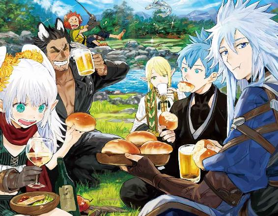
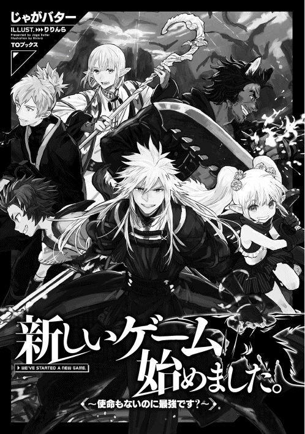
illust.りりんら
design.AFTERGLOW
暗雲渦巻く空の下、異形のモノたちが地上と言わず空と言わず無秩序に散開する。共通点は空に浮く彼らの主人らしき黒い鎧の男に、目を向け耳をそばだてていることだけ。
そして片側には一糸乱れぬ隊列を組んだ騎士たち。空には天馬に乗った白と青を基調とした鎧姿の騎士を中心に、竜騎士隊の姿も見える。鎧の形式が違うのは、一国からの出兵ではないからだ。騎士たちの耳目も、宙に浮いた黒い鎧の男に集まっている。
「取り繕うな！ これは血と欲望にまみれた戦いだ！ 慈悲もいらん、情けも無用！ 死を恐れるな！ 決してためらうな！」
白い獣と黒い獣を従えた黒い鎧の男が声を張り上げると、異形のモノたちから地響きのような雄叫びが上がる。
「蹂躙せよ！」
男の一声で、異形のモノたちと騎士たちが山津波のように一斉に動く。──プレイヤーたちに向かって。ここはＶＲＭＭＯの特別に作られたイベント空間。大規模戦開戦初日だ。
「一人残らず滅びよ！」
プレイヤーの陣に巨大な光の大剣が振り下ろされ、異形のモノと騎士たちがたどり着く前に、前線が大きく崩れる。直撃を食らった場所は大地がえぐれ、当然プレイヤーの姿も消し飛んでいる。前方にいた盾持ちの列にも被害は等しく及んでおり、その空いた防御の穴から、地をゆくものたちがなだれ込む。
「はーっはっはっ！」
空中で一人、男が笑う。
そして入り混じる軍勢を見ながら、おもむろに友人たちにチャットを入れる。
ホムラ：悪役はこんな感じでいいでしょうか？
ペテロ：いいんじゃない？
シ ン：聞くな！
お茶漬：一瞬でひどい有様。ちょっとは手加減してください。
ホムラ：お断りします。
菊 姫：せめてそっちの騎士、全部よこすでし！
ホムラ：お断りします。
ペテロ：あの絵面だと、普通は騎士ＶＳ鬼だよねｗ
レ オ：わははははは！
マントをなびかせ、百鬼と騎士とを従えた黒い鎧の男もプレイヤーである。この話はホムラ、あるいはレンガードと呼ばれる彼が、他の大多数のプレイヤーの前に立ちはだかり、攻略不能のイベントボスと呼ばれるようになったり、最強のサポートキャラとして、憧れを抱かれたりするようになる物語である。
──なお、中身は残念な模様。
ＶＲＭＭＯ。
脳に認識させる擬似的な世界。
視覚・聴覚・触覚・味覚・嗅覚の再現......は、ともかく、表在感覚、深部覚、皮質性感覚などの説明がでてきたところで、私はそっと分厚いＶＲの説明書を閉じた。
楽しみにしていたゲームの開始が待ちきれなくて、手持ち無沙汰をごまかすため、普段は読みもしない、簡易でない方の説明書をパラパラとやっていたわけだが。
ＶＲといえば、以前は実在の空間に擬似映像世界を構築、その空間で視聴専用のバイザーを被って、実際に人が体を動かすタイプだったらしいが、今では完全に電脳世界が構築され、現実世界で体を動かすことはまずない。
夢を見る脳の機能を利用した、リアルと見まがう世界。見まがうだけではない、それこそ説明書にあった味覚やら触覚やらも現実に近い。プレイヤー全員で、同じ夢の世界を共有していると思った方がわかりやすいかもしれない。その夢の世界で、一人一人が物語の登場人物のように過ごせるのが「ＶＲＭＭＯＲＰＧ」だ。ＶＲでプレイするための装置は、以前はポッドタイプの大きな躯体で、扱いも面倒、値段も高かったが、今はほとんどがバイザー型。場所も取らず、値段も高いことは高いが手の出る範囲だ。
ＶＲのいいところは、資金の問題だったり、物理的な問題だったり、現実世界ではできないことが、様々な問題をスルーして、できてしまうところ。そして、その無茶が現実世界の肉体には影響を与えないことだろう。どんな大怪我を負っても、ログアウトしてしまえば夢から覚める。
時々ＶＲ世界が現実だったら......という人がいるが、現実だったらショック死しとるんじゃあるまいか。いつまでも夢の中にいたい気持ちもわかるが。
ＶＲは他にもシューティングや格闘、ロボをカスタマイズして対戦するもの、交流中心の町、あるいは農場経営ゲームなど様々だが、私が好きなゲームシリーズを出している会社が、ＶＲで新しいＲＰＧを出すというので、前々から楽しみにしていた。
購入したそのゲーム専用のバイザーは、キャラメイクまではできるが、ゲームの開始自体はオンラインサービスが始まってからになる。サービス開始は、三日後の金曜日夜八時。働いている身としてはご配慮ありがとうございます、な開始時間だ。
私の職場は、週休二日だが定休日は月曜日。友人たちは土日ずっとログインするのだろうな、と思いながら、シフトを決める段階で、週のもう一日の休みを日曜日と希望。火曜日は有給を取った。ゲーム開始一日目は不具合発生の緊急メンテで潰れたりするしな！ と理由をつけたりしてみるが、土日は職場が忙しく、両方に休みをいれる勇気がなかっただけだ。ゲームはむちゃくちゃ楽しみだが、現実世界にいる間は、大人の節度が大切です。ゲームにログインしたら忘れるがな！
ゲーム開始日。
バイザーを被ると仮想空間へとログインする。ゲームで使えるのはワンキャラだけだ。キャラだけはバイザーに登録される。ちなみに下着姿。
散々作っては消し、また作ったキャラは、結局、種族・人間の男性に落ち着いている。初期で選べる種族は【人間】【エルフ】【ドワーフ】【獣人】の四種族だが、獣人はさらに犬系か猫系か選べる。ＣＭでは狼の獣人が前を走り、虎の獣人がそれを追いながら、それぞれ拳を繰り出し戦う姿もあった。なので、ゲーム中の種族はもっと多岐に渡るのだろう。
バイザーにキャラの素体は何種類か入っているが、それを元にしてもなかなか理想通りには作れない。キャラクタークリエイトが苦手な人はバイザー同士を繋げて、キャラクター保存データのやり取りができる。ただし両方のバイザーに保存はできないそうだ。コピーはできずに移動だけ、双子プレイをするなら、もう一度同じように作れということなのだろう。
私は青年の素体を選んで、そこからやや筋肉質を選択。この辺はスライダーで調整できるようになっている。腹筋は六つに割れる人と八つに割れる人がいるそうで、それを聞いた中学時代、三つに割ったのは、いい思い出......そこからさらに縦に割るのは結構大変なのだ。
三日かけて作り上げたキャラは、青紫がかった腰までの白銀の髪と、紫紺の瞳。人間種族で最大より少しだけ低くした身長。髪色だけでも白髪に見えないように調整するのが大変だった。長髪なんぞ現実世界では面倒なだけだろうが、仮想空間ならできる、と思う。現実世界の自分自身をスキャンして使うこともできるが、身バレが怖いのでする気はない。「別な自分」を楽しむのもゲームの醍醐味だ。
名前は『ホムラ』。
誕生日は四月四日、某キャラの誕生日。
キャラ名は、バイザーＩＤがそのままゲーム内のＩＤになるため、ほかの人と被っても大丈夫。気に入った名前がそのまま使える。バイザーを購入する時には身分証が必要で、二十歳以上でないと買えない上に、その場で生体認証登録を済ますことになる。他人に譲渡する場合は、真っさらにしないと新たに登録ができないため、ゲームのキャラごと他人に売ったり、実は今日は中の人が違います！ ということはできない。
幼い頃から現実にそっくりなＶＲに慣れすぎると、ＶＲでできることは現実世界でもできると勘違いしやすい。実際、子供がベランダから飛び降りるなどの問題が発生したため、ＶＲの体感や景色の出来によって年齢制限の規制が厳しく設けられている。
そういうわけで買う方の規制は厳しい。が、成人しかいないこのゲーム内での規制は緩い。第二次性徴を終えた大人が対象のため、男が女キャラを、女が男キャラをプレイするのも自由、年齢設定も自由。さらには、ゲーム内に人型の敵がいることも、ストーリー上での人の死も──説明書に警告の注意書きがある。
さすがに二十四時間三百六十五日、ログインしっぱなしは、現実世界との関係に齟齬が生じるため、Ｒ20であっても規制されているが、働いているなら自然とクリアできる規制なので、考えなくていいだろう。
そんなこんなでサービス開始まであと三分。
半透明のウィンドウにある、灰色のログインボタンを眺めながら待つ。パンツ姿なので早くしていただきたい。ソワソワしながら、取得予定の自分の職業とスキル構成を考える。一般のベータテストもなかったため、ゲームの情報が少ないのだが、開始時に選べる職業と、対応する初期スキルは事前に公開されていた。
今までのＶＲバイザーと技術系統・映像系統が異なるため、スクリーンショットなどを撮って外部掲示板に上げるということが今のところできない。代わりにゲーム内掲示板を設ける予定だそうだ。
今まで灰色だったログインボタンに色が点く。サービス開始時間だ。
《ようこそ！ サービス開始です》
明るいけれど、何処か平坦な女性の声でアナウンスが入る。
《このゲームでは、クエストランキング等、さまざまな機会でプレイヤー名を出す場面がございます。プレイヤー名は公表しますか？》
「出さない方でお願いします」
《では【職業】を選んでください。戦闘職、生産職から一つずつ選ぶことができます》
《【職業】は戦闘職と生産職共に、職業リストから選べます》
《選べる【職業】はゲーム中の行動でリストに増えることがありますので、いろいろ試してみましょう》
職業リストを開いて【魔術士】と【薬士】を選ぶ。他に戦闘職は剣士、拳士、治癒士、シーフがある。生産職は薬士、鍛冶士、木工士、裁縫士だ。職業を選ぶと、パンツ姿から、その職の初期装備に変わる。初期装備は色だけ変えられたので白に。黒も捨て難いが、今は勢いで赤を選びそうなほど、心が浮き立っている。
《【職業】をスロットにセットしてみましょう》
《セットしていない【職業】は、リストに載っていても反映されません》
二つ並んだ職業スロットに【魔術士】と【薬士】をセットする。職業スロットにはメインとサブが存在し、戦闘系をメインに据えることも、生産系をメインに据えることもできる。レベルアップ時には、メインの【職業】に合ったステータスが上昇し、スキルも覚えやすいとのこと。
《【職業】を選んだことによりステータスが決定されました》
《好きな能力に２ポイントを振ってください。》
ＳＴＲ：10（ ０） ＶＩＴ：９（ ０） ＩＮＴ：15（＋２） ＭＩＤ：12（ ０）
ＤＥＸ：９（ ０） ＡＧＩ：10（ ０） ＬＵＫ：10（ ０）
１ポイントずつでも振れるようだが、知力に２ポイントとも振り、初期の13から15へ。職業を選ぶと、対応した一覧がスキルリストに出る。就いた職で使用できるスキルを持っていないと意味がないため、その職に向いたスキルは取得に必要なＳＰが低くてすむ。この必要ＳＰがどう変動するかわからず、事前に考えたスキル構成はかなりざっくりだ。私の職業構成で出たのは以下の通り。
【長杖】ＳＰ１【短杖】ＳＰ２【魔術強化】ＳＰ２【知力強化】ＳＰ２【精神強化】ＳＰ３【火魔術】ＳＰ３【土魔術】ＳＰ３【金魔術】ＳＰ２【水魔術】ＳＰ１【木魔術】ＳＰ２【調合】ＳＰ１【錬金調合】ＳＰ２【武器防具鑑定】ＳＰ１【道具薬品鑑定】ＳＰ１
【採取】ＳＰ１【植物食物鑑定】ＳＰ１【採掘】ＳＰ２【鉱物金属鑑定】ＳＰ２
【釣り】ＳＰ１【動物魔物鑑定】ＳＰ１【スキル鑑定】ＳＰ２
開始時に持っているＳＰは15ＳＰ。
【知力強化】【火魔術】【金魔術】【水魔術】【調合】【錬金調合】【道具薬品鑑定】【採取】【植物食物鑑定】【動物魔物鑑定】を取得。
【武器防具鑑定】から下は、どの職業でも表示されており、職ではなく種族によって必要ＳＰが違うらしい。
試しに種族だけ変えてみると、ドワーフは【武器防具鑑定】【道具薬品鑑定】【採掘】【鉱物金属鑑定】などが１ポイントで取得可能だった。採掘は確かに種族的にドワーフに向いたスキルだ。エルフと獣人は森に住む設定なのか、【採取】と【植物食物鑑定】の必要ＳＰが低かった。どの種族もトータルで12ＳＰの範囲で割り振られているようだ。
戦闘職に偏ったスキル取得をしようかとも思ったけれど、やはり生産もしたい。能力的に中途半端なキャラになるかもしれないが、せっかくの仮想現実、色々やってみたい。あと鑑定したものはメニューに図鑑登録される機能が紹介されていて、コレクション魂がこう......。【鉱物金属鑑定】も取りたいが自重した。とりあえず魔物と自分の生産したものや、採取したものが見られればいい。【武器防具鑑定】も最初は大体値段で検討がつくかな？ という予想にしたがって除外した、そのうち取ろう。
攻略や戦闘も好きだが、色々なものを作れるようになるのも楽しいだろう。心浮き立つような風景を作っていたゲーム会社だ。きっと、あちこちふらふら旅してまわるのもいい。キャラメイクと共に職業もスキルも、昨日まであーでもないこーでもないと目移りしながら選んでいたのだが、早くゲームを始めたいので、今はさっさと決めてしまいたい。
【水魔術】は１ＳＰなので選択。ＳＰの低さに使えない魔法だったらどうしようと思わないでもなかったけれど、同じ魔術系で差があるのは、誕生日や名前で属性の相性が決まるのではないかと予想。職業の種類だけでなく、相性で取得しやすさ──ＳＰの数値──が違うのではないかと思うのだ。それで言うと、私は水と相性が良くて火とは相性が悪い......って、西洋魔術と見せかけて五行なのか。キャラ名からして【火魔術】は必須だというのに。
【金魔術】はどんな魔法か予測がつかなかったので取得してみた。【スキル鑑定】を取らなくても、とりあえずは魔法なら大体予測がつくだろうと思ったが、この【金魔術】だけはさっぱりだ。
スキルを選び終えると確認のメッセージがあり、了承するといよいよゲームの始まり。
ゲームの名前は『異世界』。
さあ、どんな世界なのか！
魔術士 薬士
ＨＰ：84 ＭＰ：１１６ ＳＴＲ：10 ＶＩＴ：9 ＩＮＴ：15 ＭＩＤ：12
ＤＥＸ：9 ＡＧＩ：10 ＬＵＫ：10
スキル（０ＳＰ）
■魔術・魔法系
【火魔術Ｌｖ．１】【金魔術Ｌｖ．１】【水魔術Ｌｖ．１】
■生産
【調合Ｌｖ．１】【錬金調合Ｌｖ．１】
■収集
【採取】
■鑑定・隠蔽系
【道具薬品鑑定Ｌｖ．１】【植物食物鑑定Ｌｖ．１】【動物魔物鑑定Ｌｖ．１】
■強化系
【知力強化Ｌｖ．１】
白い光に包まれた後、気がつくと噴水のある広場にいた。
足の裏に感じる石畳、匂い、ざわざわとしたたくさんの声も、意識を向ければ近くの声は聞き分けられる。大勢のプレイヤーで溢れかえる広場。今までのゲームよりも、はるかにできのいい仮想現実の世界に、私は目を見張った。ちょっと感動。
プレイヤーが選べる種族、獣人、エルフ、ドワーフ、人間が行き交い、もしくは私のようにキョロキョロしたり、お互いに自分の姿を見せ合っている。最大身長、最大幅、最小身長、凹凸無しと個性的なプレイヤーキャラ。髪の色が華やか！ 人以外に目を向ければ、こげ茶色の柱と白い漆喰の家が広場を囲む。この広場に面した建物の一階は店舗になっているようだ。ヨーロッパの何処かの様な風景だが、それをモチーフにしたテーマパークの様に見える。整い過ぎている印象がそう思わせるのか。
綺麗なぶんにはいいか〜と思いつつ、初めての一歩を踏み出すと、目の前にウィンドウが現われ、同時にチュートリアルを開始しますか？ と言う、ちょっと平坦な女性の声が流れた。
念のため言っておくと、平坦なのは声の抑揚であって胸部装甲ではない。姿はないからな！
だいぶテンション上がっている自分を感じつつ、チュートリアル開始を了承した。テンションが上がると思考が散漫になるのは自分でもどうにかしたい。
《チュートリアル中は、他のプレイヤーの方は表示されませんのでご了承ください》
周囲の喧騒が消えた。どうやらクエスト用のフィールドに変わったらしく、同じ風景なのに先ほどまで人で溢れていたのが嘘のように、ＮＰＣらしき人が数人歩いているだけの、長閑な広場に様変わりしている。
《では冒険者ギルドで登録をしてみましょう》
《まずは、マップを出してみましょう》
ウィンドウに点滅する光が現われ、ここに触れと主張してくる。素直に光っている「マップ」という文字に触れると、メニューとは別にマップのウィンドウが現われた。ウィンドウは透明なスマホか、タブレットの画面だけが浮いているのを想像して貰えば早い。大きさ、色、表示の場所も好きなように変えられる。表示するしないも意思次第、お知らせがある場合に、自動でウィンドウが開く設定にもできる。
《このマップは始まりの街ファストになります》
《ファスト以外のマップに関してはスキル【地図】でマッピングした場所が表示されます。またＮＰＣなどからマップを入手できる場合もあります》
《冒険者ギルドなど主要な場所は、入手時から名前が表示されていますが、他に自分で見つけたお気に入りが登録できます。どんどん登録して貴方だけのマップを作りましょう》
《それではマップにある冒険者ギルドに行ってみましょう》
アナウンスの途中でマップに点滅する丸が現われた。そこが冒険者ギルドなのだろう。そして主要な場所以外表示されないというのは、武器屋とかも大きい店だけ表示されて、それ以外に穴場的な店があるということなのか？ あれか、隠れ家的飲食店か？ 美味しいお店があるといい。
冒険者ギルドは広場に面した、ひときわ大きな建物だった。視界が高くなったことと、コンパスの長さに多少の違和感を覚えつつも、浮き立つ気持ちでギルドを目指す。ローブの裾を時々擦っているけれど、汚れもほつれも気にしなくていいようだ。
開け放たれている扉をくぐると、外の光に慣れていたせいか中は少し薄暗く感じる。入り口正面に受付カウンター、入り口から見て左手にもう一つカウンターがあり、天井から下がった案内には『素材取引』とあるのが見て取れた。
右手は食堂らしきテーブルが並んだ広い部屋で、いかにも冒険者らしい外見のＮＰＣが何人か酒を飲んでいる。部屋と言っても扉などはなく、奥から部屋の三分の一ほど壁で仕切ってあるだけのオープンなスペースだ。こげ茶色の床、腰板、階段、白い漆喰の壁。木板の厚みを感じさせる、丈夫そうなカウンターや掲示板は、床などより、やや薄いこげ茶で統一されているが、カウンターの天板だけ黒に近いこげ茶とのツートン。
食堂の壁とカウンターの間に階段があり、階段側の貼紙に『資料室』と案内があるので、後で二階に行ってみようと思う。
このいかにも冒険者ギルド！ という空間の設えがたまらない。
入り口の左の壁には掲示板が幾つか設けてあり、中肉中背の男が張り出された紙を眺めている。なんだろうと思って見てみると、依頼が張り出されていた。
依頼名 ゴブリン討伐 常時依頼
依頼者 冒険者ギルド
報酬 一匹 一〇シル
依頼名 ルル草納品 常時依頼
依頼者 薬師ギルド
報酬 一本 一〇シル
掲示板の上の方にはランクＥと記してある。隣の人畜無害っぽい男が見ているのが、一つ下のランクＦなのだろう。依頼はどうやら今までのゲームとさほど変わらないらしい。二、三枚読んで満足してカウンターに向かう。
窓口にいるのは全員女性で、プレイヤーと比べるとおとなしい髪の色をしている。三ヶ所ある受付は、一ヶ所はやたらガタイのいい短髪赤毛のＮＰＣが使っていた。ＮＰＣだからだろうか、カウンターに寄りかかり、受付の女性に向かって、ややかがんでいるのでわかりづらいが、設定できる身長の限界を超えているように見える。背中には広場で見かけたプレイヤーの剣よりも二倍以上はありそうな、厚みのある大剣を背負っている。
普通のＲＰＧならＮＰＣに遠慮なく話しかけて情報を得るのだが、リアルと見まごう仮想現実の世界では、受付手続き中の人に話しかけて作業をさえぎるような真似もしかねる。かといって、隣の昼間から酒を呑んで、大きな声でしゃべっているところには近づく気も起きない。掲示板前の男は、ちょっと気弱そうに見えて話しかけやすそうではあるが、ぶっちゃけ避けたい。自分でもこの心がどこから来るのか、最初わからなかったが、依頼書を見ている間に気がついた。頼りなさげな様子が冒険者らしくないのだ。初心者の設定なのかもしれないが、なんだか厄介ごとの気配がする。実は初心者狩りのアサシン設定だったりして。同じく、所在なさげにウロウロしている不安そうな女子もいるのだが、こっちはゲーム的お約束な「厄介ごと」の気配。普通にスルーします、はい。
待ち合わせもあるし、おとなしく真っ直ぐ受付へいくか？ チュートリアルが終わったら改めて来ればいいし。などと考えながら見るともなく見ていると、受付の女性が言った『ガラハド』という男の名前が聞こえてきた。
ガラハッド、またはガラハドはアーサー王伝説や聖杯伝説に出てくる『穢れのない騎士』の名前として有名だ。アーサー王伝説に出てくる騎士の名前は、ゲームやら小説のキャラに使われることが多いので馴染みがある。現にカウンターにいる男も、外見の印象が騎士というより、戦士系の冒険者の格好なので、某ゲームに出てくる同名の赤毛の戦士を思い起こさせた。
「『穢れのない騎士』というより、どちらかというとあのゲームキャラか」
小さくつぶやくと赤毛の男がこちらを向いた。
!? 聞こえるような声じゃなかったよな？ ばっちり目が合って、焦りながらも日本人らしく会釈して目をそらす。全力で見ないようにして一番近くの窓口を目指す。
「兄ちゃん、新人登録か？」
はい、思い切り赤毛男に話しかけられました。
目が合った時の一瞬の真顔は精悍で、身体の大きさもあいまって迫力があったが、笑顔の今は人懐こく見える。あれだ、白い歯を見せての笑顔というのは屈託なく見えていいですね！ ちょっと展開についていけてないですよ、思考が絶賛空まわってますよ私！
なんでチュートリアルに「冒険者ギルドで新人はからまれる」、なんてお約束な項目が入ってるんですか!?
「......ああ、手続きしにきた」
ちょっと間が空いたのは許してほしい。
「俺はガラハド、戦士だ。よろしく頼む。ところで、さっき『穢れのない騎士』って言ってたよな？ 突然時間とらせてわりぃんだが、話聞かせてくれねーかな？ なんなら、兄ちゃんが登録した後で依頼って形にしてもいいぜ？」
思いもよらない食いつき方だな。どういう展開なんだ、これ。
私に向かってきちんとガラハドと名乗った男はどうだろう？ と、わずかに首をかしげて見つめてくる。
「かまわんが、たいした話ではないぞ？」
困惑しつつ答える。最初に思わず以前やっていたＲＰＧのチャット口調で答えてしまったため、ちょっと慇懃無礼っぽいが、もうこのまま行くことに。
「おう！ ありがとう。金は話で五〇〇シル、俺にとって有用な情報だったら追加を払うんでいいか？」
笑顔で礼を言われて金額を提示される。厳つめの顔に人懐こい笑みって、器用だなおい。
「隣で茶でもおごってくれ、料金は不要だ」
そういって食堂の方を見る。
「了解！」
ガラハドが一段といい笑顔で親指を立ててウィンクしてきた。優男からはほど遠いのにウィンクが似合う男、ガラハド。
答えてから思う。ここはゲームだ、割のいい隠しクエストだったんじゃないのか？ と。Ｅランクのゴブリン五〇匹分の金額にちょっと未練が出るが、いまさら取り消しはできない。ガラハドは受付の女性に軽く手を上げて挨拶すると、すでに食堂に向かって歩き出している。友人との待ち合わせが遅れてゆくような気がしたが、ガラハドとの話をゲーム展開的に断るつもりは私にはなく、彼の後について食堂に向かった。
友人たちとは、はっきり何時と約束したわけではないし、お互いチュートリアルはやる宣言をしているし大丈夫だろう。それに、もしかしたら向こうも同じようなイベントをこなしているかもしれない。何より友人たちは私も含めて個人行動が大得意だ。待つようなことになっても、早々に戦闘か生産に手を出しているだろう。律儀に何も手をつけずに、ぽつんと待ってくれるような友人はいない。
ガラハドについて陣取った食堂改め酒場の一角。ここは食堂ではありません。酒場でした。食事も一応ありましたが、頼める飲みものの大部分が酒です。かろうじて、水とミネラル補給用なのか麦茶っぽいお茶が選べます。冒険者は水がわりに、ビールをがぶがぶ飲むようです。
もうおわかりでしょうが、私は下戸です。おのれ！
「私はホムラ、一応魔術士だ」
私はお茶を、ガラハドは酒を頼んで話をする。他にフライドポテトとトビウサギの薄切りローストを頼むと、ガラハドが遠慮すんな、と言ってさらに料理を追加した。燻製卵・干し魚・チーズ三種・ナッツ・ドライフルーツ、待て。それは私のためじゃない、自分のつまみだろう！ とツッコミを入れるほど親しくないのが悔やまれる。
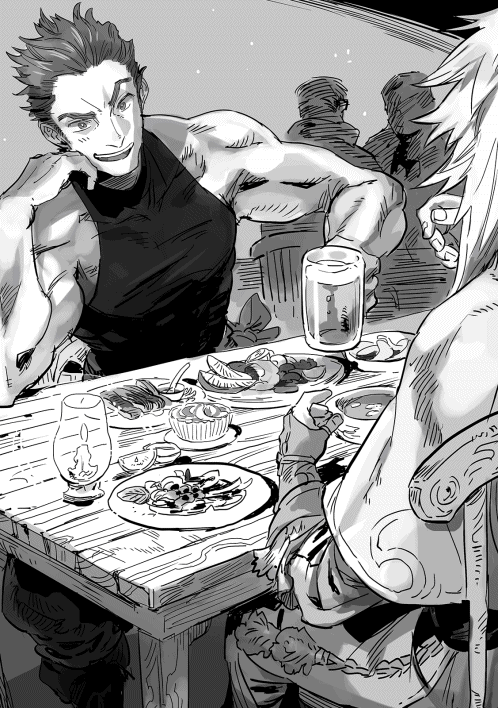
肉の名前は現実世界とは変えてある。というか、討伐対象の魔物の肉のようだし、この世界には人間より大きくなる獣人がいるせいか、酒場の椅子は身体の大きなガラハドでも余裕があるほど、しっかりした作り。
ああ、ゲームでなく本当に『異世界』にいるようで心の底から嬉しくなる。
料理が運ばれ、店員が去っていったところで本題。
「で、先ほどの話だが、簡単に言うと『穢れのない騎士』というのは、アーサー王と円卓の騎士という伝説に出てくる、聖杯を手に入れた騎士の異名だ。その騎士の名前が『ガラハド』と言うので、受付が貴方を呼んだ時に思わず口に出した」
「アーサー王？ 何処の国の話だ？」
ガラハドのビールは、最初に口をつけただけで脇に追いやられている。伊達や酔狂で『穢れのない騎士』の話を聞いているのではないらしい。
「ここでない世界の、ヨーロッパと言うところの伝説だ」
ここでない世界と言ったとたん、ガラハドは明らかに落胆して視線を机に落としたが、気を取り直してこちらを見てくる。
「とりあえず聖杯って何だ？」
「聖杯は神の子の血を受けた杯だとか、神の子の最後の晩餐で使った杯だとか言われるけれど、この伝説では『病を治す杯』であることが特徴かな。ガラハドは病を得た王のために聖杯を探すんだ」
高校の頃一度読んだきりでうろ覚えなんですが。円卓の騎士で名前を覚えてるのはランスロット・ガラハド・パーシバルの三人だけで、あとは騎士とは別枠でマーリンくらいだ。ちなみに覚えている理由は、ランスロットは一番有名だから。ガラハドは同じ名前のキャラがやったことのあるゲームにでてくるから。パーシバルに至っては、近所の柴犬の名前、普段はパールと呼ばれている。当時中学一年生のお嬢さんが命名。
こんな私に聞くのは間違っていはしまいか？
その後、聖杯を発見したのが三人だったことや、神の園に呼ばれたガラハドの前に聖槍が現れた話を少ししたところでギブアップした。
「すまん、私も詳しくはないんだ」
「いや、ありがとう。実は俺が世話になったヤツの主がやっかいな呪いを受けてな。解呪の方法を探してる時、預言者に『穢れなき騎士が呪いを解く』って言われたらしくってよ。ヤツには騎士じゃなくって呪いを解く方法そのものも、本腰入れて探せって言ってやろう」
そういう呼び名の『呪いを解ける騎士』がいるんじゃなくって、『呪いを解いた騎士』が呼ばれるのかもしれねーからな、と言って脇によけていたビールをあおった。
トビウサギのローストにはパンとサラダが付いてきた。酒ばかりなのは不満だが、トビウサギのローストは肉が柔らかく、思ったよりもうまかった。こんがり焼けたパンで、ソースを拭って食うのもおすすめだ。
「うまそうに食うな、こっちもつまんでいいぞ」
「ありがとう」
遠慮しないぞ。何せこの世界で初の食事、いろいろ食べてみたい。味覚は完璧に再現されているようだし、これからも食事は楽しみだ。
そのまま飲んでいくらしいガラハドに別れを告げて、当初の目的を果たすべくカウンターに向かう。別れ際ガラハドが「なんかあったら声かけろよ」と言って、パートナーカードを投げてきた。
パートナーカード、略してパトカの交換は他のゲームで言うフレンド登録だ。このゲームでＮＰＣとフレンド登録できるとは思ってなかった......というか、パトカの扱いのチュートリアルだったのか？ このイベント。
もしかしたらガラハド・戦士、酒場にいた客Ａ・魔法使い、客Ｂ・回復職、客Ｃ・シーフとかで、ソロできつい時にＮＰＣをパーティーに呼び出せるとかだったのか？ そんなことを思いつつ、自分のパトカを探すが、項目が見つからず渡し方がわからない。焦っているとガラハドが飲みながら声をかけてきた。
「あ、パートナーカードはギルドカードを手に入れないと出せないぜ？ 登録終わったらオレのカードから交換承認してくれ」
何処を探してもないはずである。
「いらっしゃいませ、ご登録ですか？」
「はい」
「冒険者登録の説明は必要ですか？」
ショートボブというのか、襟足で切りそろえた茶色い髪、黒に近い紺色の制服を着た受付のお姉さんが聞いてくる。
「頼む」
「はい、ではこちらが冒険者ギルドのご案内となっております」
そう言うと、リーフレットのようなものを、こちらに向けて見せてくる。
聞かれて普通に返事をしたが、ログウィンドウに選択肢もでている。だがどうやら普通に会話をして返事をしても認識されるようだ。これで認識されてなかったら、恥ずかしいところだった！ そして、はい・いいえ以外でも認識されて良かった！ まあ、ガラハドとも違和感なく普通に会話しとったからな、いまさらか。
私の内心の動揺を尻目に受付の説明は続く。
「冒険者には犯罪歴がなければどなたでも無料で登録できます。登録後にお渡しする冒険者カードは身分証を兼ねていますので、ギルド外でも提示を求められることがあります」
リーフレットに書いてある場所を指し示しながら受付嬢は説明を始める。
「ランクはＦ〜Ａ、その上のＳまであり、ソロは同ランクの依頼、パーティーでは一番低いランクの方の一つ上のランクまで受けられます。登録時はＦランクからとなりますね」
「ランクアップについては、依頼達成件数が一定になるなどの実績で可能になります。その際に試験を受けていただく場合があります」
「冒険者ギルドが行うのは、冒険者の方への依頼の斡旋が主な仕事となっております。依頼は基本掲示板に張り出してあります。中には期限があるもの、受けるために受託金をお支払いいただくものもございますのでご注意ください」
「登録後に犯罪を犯すとギルドカードが赤くなります。罰金を支払うことなどで元の色に戻すことができますが、重犯罪の場合は色を戻してもカード下欄に×が記入されます」
「赤いカード持ちの場合、ギルドの利用ができなくなる等のペナルティが発生します。大丈夫だとは思いますが、気をつけてくださいね」
さらっと説明されましたが、犯罪者になる可能性があるんです？ ＰＫ──プレイヤーを殺すこと──位しか浮かばないが。あるのかＰＫ？ 一気に殺伐としたな。
「以上で説明は終わりです。このご案内は差し上げますので、暇な時間に他の事項もお読みください」
リーフレットを受け取ると、手から消えて代わりにメニューが開き、ヘルプに『ギルドについて』の項目が増えていることを知らせてくる。下に『パートナーカードについて』もあった。どうやら、経験すると使い方や概要がヘルプに増えるらしい。ちょっと便利。
「では、こちらのカードに手を乗せてください」
薄い石版のようなトレイに乗った、現実世界のキャッシュカードより一回り大きく、透明なカードを差し出された。言われた通り、その上に手を乗せる。すると石版の縁に沿うように、英語の筆記体のような模様が時計回りで現れ、一周すると今度はカードが淡く光って、透明だった色が濃い煙水晶のような感じに変わった。
「どうぞお受け取りください。カードには見えている情報の他に、依頼討伐の記録などもされてゆきます」
ホムラ
ランク Ｆ 職業
魔術士 称号 なし
受け取ったカードは三行だけのシンプルなものだった。腰帯につけたポーチに触れると、アイテムウィンドウが開き、カードが手から移動する。カードは荷物の所持数にはカウントされないらしく、別に一枠増えていた。初期装備のポーチには他に三十個いれることができる。そして枠の並ぶ左上には一〇〇〇シルの金額が表示されている。
自分のステータスはステータスウィンドウからでも確認ができるのだが、そちらの情報もランクＦという冒険者ランクの表記が追加されていた、連動しているようだ。
ウィンドウを閉じる間も説明は続く。どうやらギルドカードから、持ち主は討伐数など自分に関する様々なデータを見ることができ、カードに出る職業はメインが表示されること、称号は取得した称号から任意で表示できること。
あとガラハドが言っていた通り、ギルドカードからパートナーカードを複製して交換できること。
「以上で登録時の説明は終わりです」
《ギルドの依頼を受けてみよう》
笑顔で受付嬢が締めくくると、替わってアナウンスが流れた。
《ギルドの依頼は掲示板から探して、受付で申請することで受けられます》
《また、ギルド内にいる時に限り、メニューの依頼一覧から受注することが出来ます》
《今回はメニューから受けてみましょう》
どうやら掲示板前に陣取らなくとも、酒場でくつろぎながら依頼を探せるようです。ガイダンスに従い最初の依頼を受ける。依頼は以下のようなものだった。
ランク Ｆ
依頼名 トビウサギの角 三本納品 期間三日
依頼者 ピコル
報告 ギルド
報酬 五〇シル
受託金 ─
※ファストブリムにいるトビウサギの角を三本取ってきてくれ！※
はい、さっき食べたウサギですね。掲示板に張り出してあった依頼書より若干情報が多い。
《ファストブリムは南門から出た先にあります。今回はこのまま転移し、戦闘のチュートリアルを行います》
また視界が白くなると、次には草原にいた。眩しくないのに目がくらむのは何か変な感じがする。実は最初の広場に出た時は、立ちくらみかと思って少し焦ったのだ。
《トビウサギを探してみましょう》
見渡す限りの草原。草原は膝丈くらいの草が生えているイメージがあったけれど、ここはヘアグラスのような、柔らかい踝くらいまでの草で覆われており、どちらかというと牧草地に見える。
何かの気配に視線を向ければ探すまでもなく、ウサギにしては目付きの悪い、角の生えた薄茶色の生き物がいた。ウサギのあの前歯が尖っているんですが？
凶悪です。ためしに【生物魔物鑑定】を使ってみる。
【トビウサギ】
分類：魔物
知っている情報です。
鑑定を使ったことで発見扱いされたのか、アナウンスが流れた。
《モンスターには、攻撃を行わない限り襲ってこないノンアクティブタイプと、一定の範囲内に近づくと襲ってくるアクティブタイプがいます》
《プレイヤーがＨＰ０になると戦闘不能、六〇秒後に死亡となり、最後に訪れた神殿で蘇生します》
《死亡すると所持金が半減し、一定時間のステータス二分の一低下のペナルティがあります》
《ＨＰの最大値はＶＩＴの影響などで増減します》
メニューが開いてＨＰゲージが光っている。
これは常に表示しておいた方がいい。私はメニューウィンドウから、ゲージ三種類を引っ張り出して、視界の端に常に表示されるようにする。ゲージはＨＰ、ＭＰ、ＥＰの三種類だ。ついでに時計も表示させる。身体から一定の距離の空中に浮いた半透明のウィンドウは、なんとも不思議な気分になる。【動物魔物鑑定】はＥＰが少し減ったようだ。
《魔法を使ってみましょう》
《杖や魔道書は装備していますか？ 素手での魔法発動は可能ですが、武器の補正が掛かりませんのでご注意ください》
《魔法の使用ではＭＰを消費します。ＭＰは魔力量を表します》
《ＭＰが０になると【目眩】【貧血】などバッドステータスに陥りますのでご注意ください》
《ステータスはＭＰを回復することによって回復します》
《ＭＰを０のまま放置を続けると、ＨＰの減少が始まります、早めに回復しましょう》
《ＭＰの最大値はＩＮＴの影響などで増減します》
アナウンスの間、ＭＰゲージが光っていた。
次にＥＰと書かれたゲージが光る。
《物理攻撃や特定のスキルでは、ＥＰを消費します。ＥＰは空腹度、体力を表します》
《物理スキル等には『必要ＥＰ』と『消費ＥＰ』とがあり、スキルを使用すると暫定的に『必要ＥＰ』分が減り、徐々に元のＥＰ値から『消費ＥＰ』を減じた状態まで回復します》
《ＥＰゲージは何もしなくても自然に減少します》
《ＥＰが０になると移動速度が通常の十分の一になりますのでご注意ください》
《移動速度は食事などでＥＰを回復することによって回復します》
《ＥＰを０のまま放置を続けると、ＭＰの減少が始まります。早めに回復しましょう》
ご飯は大変大事だと思います。
《なおチュートリアル中に減ったＨＰ・ＭＰ・ＥＰは終了後に回復します》
《では使える魔術を確認してみましょう》
メニューで光る順番をタップしてゆく。結局【金魔術】ってなんなのか。
火魔術 ファイアニードル ＭＰ３
水魔術 ウォーターニードル ＭＰ３
金魔術 針 ＭＰ３
属性別に表示されているが、まだ一種類ずつしか使えないようだ。『針』と言うのは、まんま針を出現させるとかだろうか......
《対象を認識して、使用したい魔法の呪文を唱えてください》
メニューから選べないのですか。技名やら呪文やら叫びながら戦うの恥ずかしいんですが。いや、ウィンドウを開きっぱなしなら、メニューから選択できるようだが、メニューを見ながら瞬時に必要な魔法をタップするのは面倒そうだ。......スキルに無詠唱があると信じよう。
「【金】『針』！」
杖を掲げて呪文を唱える。初級の魔法は魔術の属性と名前だけ唱えるのだが、高度な威力の魔法ほど呪文が長くなり、詠唱中に攻撃を受けると発動がキャンセルされる、とアナウンスさんが言ってた。
そして出たのは予想通りの『針』だった。縫い物用ではなくて、編み針のような大きさの金属の針だ。トビウサギに『針』が当たると、ギャギャというような叫びをあげて、こちらに角をつき出して向かってきた。慌てて唱えた『針』とジャンプしたトビウサギがぶつかって、トビウサギがバランスを崩して落ちる。そこへもう一度『針』。
慌てふためき連呼してしまったけれど、結果オーライだったようだ。トビウサギは光の粒になって消えた。魔法剣士を目指していたのだが、考え直した方がいいだろうか？ 今のが近接戦闘だったら、喰らいまくっていた気がする。いや、慣れれば冷静に対処できるようになるだろう、なるにちがいない。他のゲームでそこそこ慣れているつもりだったのだが、ＶＲのできが良すぎて色々戸惑う。そして『針』が魔法らしく見えないけど、格好良くて気に入りました。
《トビウサギの角×１を手に入れました》
《トビウサギの肉×１を手に入れました》
《魔物などを倒すとアイテムがドロップします。ドロップ品は納品などの他、生産にも使えますので色々試してみましょう》
《残り二匹です。この調子で倒しましょう》
ＭＰは先ほどの戦闘から考えて、余裕はありそうだけれど何があるかわからんので節約したい。
これ、休んでたら回復せんかな？ 私はあたりを見回して周囲に敵がいないことを確認すると、その場で寝転んだ。だって、こんな一面柔らかい草で虫がいない草原なんて、現実世界で見たことがない！ チュートリアルを終えた後の外の草原は他のプレイヤーがいるはずだし！ ちょっとだけ、と思い寝転がって空を眺める。遮るものがない視界いっぱいの空。雲の流れが速い。地上は緩やかな風が吹いているだけだが、上空は随分強い風が吹いているようだ。
昼寝したくなるような気分に終わりが来た。小さく叩くような鈍い音が地面から伝わってくる。多分トビウサギが跳ぶ音だ。
そっと起き上がって周囲を見ると、先ほどより遠くにトビウサギを見つける。
《トビウサギの角×１を手に入れました》
《トビウサギの皮×１を手に入れました》
今回倒したウサギのドロップ、前回の肉が皮に変わった。クエストアイテムの角は出ているので問題ないが、ドロップは変わることを知った。毛皮じゃなくて皮なのか。
ＭＰは休んでいても回復しなかった。ＭＰ回復薬を買い込まねば。他のゲームと同様、薬があることは疑わない。攻撃を外したら痛い目に合いそうなので、三匹目もそっと後ろから近づいて気づかれる前に先制攻撃。
今度は『ウォーターニードル』と『ファイアニードル』を使ってみた。こっちは日本語じゃダメなのかと、唱えてみたら『水針』でも発動。適当でいいのだろうか。
《トビウサギの角×１を手に入れました》
《トビウサギの皮×１を手に入れました》
《依頼『トビウサギの角三本納品』の条件を達成しました》
《スキルリストに【ＭＰ自然回復】【ＨＰ自然回復】【遠見】【気配希釈】【気配察知】【不意打ち】【体術】が追加されました》
《スキルは行動によってリストに追加され、リストからスキルポイントを使って覚えます》
《他にも取得の方法があるので色々試してみましょう》
《スキルポイントはレベルアップなどで得られます》
《では冒険者ギルドで依頼の報告をしてみましょう》
また視界が白くなり、視界が戻ると冒険者ギルドのカウンター前だ。酒場を覗くとガラハドはもうおらず、思い切って酒を飲んでいる三人に話しかけてみたが、冒険についての豆知識のような話が聞けただけだった。もうトビウサギは狩ってきました！ 遅い情報です！
友人達とログイン時間がズレるので、ソロが多くなる。戦闘に呼べるならＮＰＣのパトカはもっと欲しいのだが。
「報告を頼む」
パトカの交換を諦めて、依頼の報告のため、受付にギルドカードとトビウサギの角を出す。
「ありがとうございます、ギルドカードはこちら、討伐部位はこちらに置いてください」
指示されるままに、ギルドカードはもらった時と多分同じ石板の上、角は受付嬢正面から少しズレたカウンターの黒っぽいこげ茶のスペースの上に置いた。天板がツートンカラーだったのは、このせいか。
「依頼達成を確認致しました、清算いたします」
カードを置いた石板の縁と角を置いた色違いの天板が光ると、角は無くなり、代わりに五〇シルがカウンターの上に。大きかったり大量だったりする納品物は手をかざすことで、アイテムポーチと直接繋げるらしい。というか、先ほどの角も出す必要がなかった。
「お疲れ様でした。こちらが依頼料になります」
そのまま五〇シルを受取って終了。便利なカウンターだな。
あ、受付嬢の名前を聞いておこうか。
《依頼の報告もギルド内にいる場合に限り、依頼一覧から行うことができます》
《買取もメニューから可能ですので活用しましょう》
《これで、チュートリアルを終了します》
《お疲れ様でした》
時間切れだった。
気づくと噴水広場に戻されていた。忘れないうちに一覧からガラハドを選び、「パートナーカードを渡す」を選択する。選ぶといっても一人しかリストにないわけだが。
《称号【交流者】を手に入れました》
《お知らせします。『異世界』の『住人』と初めてパートナーカードを交換したプレイヤーが現れました。これにより情報を開示いたします》
《『住人』と親しくなるなど一定の条件をクリアした場合、『住人』からパートナーカードを渡されることがあります》
《親しくなった住人から冒険に誘われたり、誘うことができます》
《またカードを交換した『住人』から、強制的に戦闘などに呼び出すことのできる住人、『パートナー』を一人選ぶことができます》
《ただし、住人がすでに他の『パートナー』となっている場合、選ぶことができません》
《三ヶ月以上ログインがない場合、『住人』側の受け取ったパートナーカードは破棄されますのでご注意ください。その場合『パートナー』も自動的に解除されます》
《住人には最初から特別な個体も存在しますが、一般の住人であってもプレイヤーと交流することで成長し、特別な個体となる場合があります》
《『異世界』にはたくさんの住人がいます。積極的に交流を深めましょう》
私ですか!? 私ですね、ちょっと「うわぁ」としか思えぬ。これ、戦闘で有利になる『住人』を選べってことだよな？ と思いながらメニューにあるコミュニケーション項目を確認する。パトカの一覧にガラハドだけぽつんと。友人と交換する前にＮＰＣと交換って、なんかボッチ臭がひどいんだが。
ガラハド ランクＡ 職業 戦士 称号 赤き武勇の戦士
......。カードを確認したら、ガラハドさんＡランクなんですが。序盤でいいのかこれ？『住人』はお助けキャラか！ 称号の方を確認してみる。
【交流者】初めて『住人』とパートナーカードを交わした者
効果：『住人』のパートナーカード＋一枠
うん、あと一人設定できる。私が魔法職で後衛なので、前衛の戦士だし、気のいい兄ちゃんだし、一人目の『パートナー』はガラハドを設定してみる。これでソロの時も安心！......まあ、ＮＰＣのＡＩが優秀すぎて、強制呼び出しするのは忍びなくって使わない予感はするが。普通にメッセージのやり取りで予定を聞こう。
チュートリアル終了後に噴水広場に戻されたので、もう一度ギルドに向かう。別に受付嬢の名前に未練があるわけではなく、友人たちとの待ち合わせがギルド入り口なのだ。
結論、人が多すぎます。ぎゅうぎゅうです。
チュートリアル中の冒険者ギルド付近と雰囲気が違いすぎる。外に行くなら依頼は受けたいし、初日の今日、プレイヤーが集中するのは仕方ないんだろうが、すごすぎる。
呆然としていると会話が聞こえてくる。
「登録後にして、もう戦闘行っちゃおうぜ〜」
「だな〜」
あれか、チュートリアル飛ばしたヤツも混じってるのか！
「冒険者登録はチュートリアルでもできるぞ～」
がやがやと人の声でかき消されそうなので少々声を張り上げる。余計なお世話だったら恥ずかしい。
「え、まじか？」
「街、出なけりゃチュートリアル受けられるよな」
「おー、ありがと～」
礼を言ってチュートリアルを選択したのか、目の前から消えてゆくプレイヤーたち。大勢の人々が間引かれるように消えてゆく光景は、はっきり言ってホラーだ。目の前から人が消えるこの光景も、そのうち慣れるのだろうか。結構な人数が消えて見通しが良くなった。チュートリアルを飛ばしていた人は、思ったより多かったらしい。確かに依頼を受けるだけなら、こんなに待たずに戦闘なりなんなりさっさと行くよな。チュートリアルを飛ばして、ギルドの登録がまだの人が、主にこの混雑を作っているのかと思い当たる。プレイヤーの総数を考えると少ないのかもしれんが、あの登録作業をこの人数分やっていたら、いつまでたっても終わるわけがない。
入り口から満員電車のようなギルドの中にも声をかける。ここでも多くが消えていった。他に教えてくれる人はいなかったのだろうか。それでも結構な人数が手続きをする間から、受付嬢がカウンター越しに、こちらをのぞきながら目礼してきた。チュートリアル中のように、私だけという状況でなくとも反応があるのか！ しかも今回、私は受付嬢に対しては話しかけていない、本当に中の人がいるみたいですよ!! びっくりだ！
ＮＰＣに使われているＡＩは、ゲーム発売の二年前にスマホで「ＮＰＣを育てよう！」みたいなアプリの配布をしていて、毎日話しかけたり町の中で簡単なお使いをさせたりするゲームから一定以上育ったキャラを、収集・修正されて使われているらしい。スマホでのキャラクターは二頭身で自分好みに育てられ、単独のアプリとしても人気で、このゲームが始まった今でも配信されている。
「ホムラ？」
人が大分減ったとはいえ、ここで果たして友人を見つけられるのか？ と、立ち尽くしていると声をかけられた。名前を呼ばれた方を見ると、友人から事前に聞いていた容姿の二人が並んでいた。
薄い青の髪をポニテにしたスレンダーな青年と、その胸のあたりまでしかない背丈の、赤い髪をツンツンさせた犬耳の少年。
「よく見つかったな」
「大声だして目立ってたよ。他はパトカ、もう交換したからわかりやすいとこに移動しよう」
そういいながら、ポニテの青年・ペテロがパトカを投げてくる。
「ああ、レオもパトカくれ」
そう言って私もペテロとレオにパトカを投げる。交換しないままはぐれたら、今日はもう会う自信がない。
「あ！ 予約できたから宿とっといたぜ！」
「おお、ありがとう。ギルドの混みようを見てると危険だよな」
結局、他の面子とは南門外の集合になったが、せっかくなので移動前にギルドのスミに入り込んで、三人で適当に依頼を受けておく。
人で溢れた噴水広場を抜けた先にある南門は大きく扉が開け放たれ、左右に門番が立っている。一人では動きそうにない分厚い木製の扉には黒い鉄の補強が施され、優美さはないが機能美を主張している。
出ようとすると、衛兵にギルドカードの有無を聞かれる。あると答えると、特に他に聞かれることもなく通された。無い場合は、街に戻る時に仮の身分証の発行やら手続きが複雑になるそうだ。門前に着くとここも待ち合わせらしき人でいっぱいだった。
「捕獲できた〜？」
「わっはっはっ！ ホムラＧＥＴだぜ！」
人ごみのなかから声をかけてきた金髪優男エルフにレオが答える。
「会えて良かったぜ」
黒髪犬耳、顔に不精ヒゲと傷のある身長最大のガッチリした男。
「あの混み方では会うのキツかったでしよね」
こちらは白髪ロリエルフだ。全員、現実世界の性別は知ってるが、まあゲーム内性別の彼・彼女でこれからは行こうと思う。
金髪は『お茶漬』、黒犬は『シン』、白髪は『菊姫』という名前だ。それに『レオ』『ペテロ』、私の『ホムラ』。菊姫以外は男キャラ。ちなみに菊姫は酒の名前だそうだ。
パーティーの最大人数はちょうど六人。パトカの交換後、さっそくパーティーを組んでみる。
「私は結局、魔術士始まりで魔法剣士目指す方向なんだが、みんなは職業どうしたんだ？」
「僕は治癒士ですね、事故防止職というか事故後介護職」
私の問いにお茶漬が答える。いままでのゲームでシンとレオがやらかしまくってるので、いつもサポートに回っている彼は、今回もフォローに回る様だ。
「あてちは剣士でし。おっきい剣でどっかんどっかんでし」
ツルペタ菊姫は、最小サイズでごつい武器を振り回すのを好んでいる。初期ステータスを考えるとエルフで物理特化って大変そうだが。
「オレは拳士、狼目指すぜ!!」
黒犬のシンは肉弾戦好きなのは毎度のことだが、今回犬族の進化で発表されている、狼の獣人になりたいようだ。進化先として発表されているのは、獣人の犬から狼、猫から虎だけだが、獣人に限らず進化先は多種多様とのことなので、どんな種族がでるのか楽しみである。
「オレは狐があるって信じてる！！！！」
「それは職業じゃない。あ、私はシーフで弓使い目指してるから」
叫んだレオに笑いを含んで突っ込むペテロ。
「あ、わりい。オレは今シーフね。きっと忍者があるって信じてる！！！！！」
「希望的観測が多すぎるでし！」
職業も初期職からの進化先としていくつか公開されている。ログイン時のアナウンスにあったとおり、こちらも鍛えた職やスキル次第で多種多様とのこと。
「こう、見事に盾っぽいのが幼女だけだ」
お茶漬がぼやく。菊姫は職は盾になれるが、種族的に全く向いていない。喰らうダメージも多くなるため、回復職は忙しくなる。
「あきらめろ」
笑顔でお茶漬に親指を立てて見せる。毎度、人のＨＰまで管理しているお茶漬は尊敬する。私には無理だ。
「ソロもいるんだし、システム的に全員そこまで柔らかくはないと思うよ」
ペテロが言う柔らかいというのは、喰らうダメージが大きいということだ。同じ攻撃を受けてダメージが少ないのは固いと言われる。
「とりあえず戦ってみようぜ～」
無精ひげを撫でながらシンのおっさんが言った一言で、ファストブリムへ移動する。ブリムは草原のことを指すそうだ。
門の近くは結構な人がいて、トビウサギの奪い合いになっている。とてもじゃないが競り勝てそうにない。幸いフルパーティーだし、門から離れて少し強い敵を探すことにした。チュートリアルと同じく、明るいグリーンの柔らかい草を踏んで移動する。真っ平らではなく、少し起伏のある草原だ。空が広い。
「そういえばＮＰＣからパトカをもらった」
「ぶっ！ あのワールドアナウンスお前かよ！」
シンからツッコミが入る。やっぱりプレイヤー全員に流れたのか、名前非公開選んでよかった。
「どんなＮＰＣからもらったんでし？」
「『ガラハド』っていうチュートリアル中、カウンターにいた戦士」
「チュートリアルにそんなのいたっけ？ 覚えてねぇぜ」
菊姫の問いに答えると、シンが首をかしげる。
「ギルドにいる客、人によって違う？ 私は女児しかいなかった気が」
「さすがロリコンでし」
「違う！」
ペテロの視界にロリしか目に入っていないのか。それとも本当に人によってギルド内にいる住人が違うのか。
「えー？ オレもチュートリアル中に強そうなのに話しかけたけど、名前教えてくれなかったし、貰えなかったぞ？」
「話しかけたのか、勇気あるな」
物怖じしない男、レオ。
「どんなナンパ速度なの？」
なんとも言えない表情で聞いてくるお茶漬。
「ナンパって言うな！」
「発見!! ニワトリ！！！！」
レオが指差す方を見れば、確かに白いニワトリっぽいものが動いている。ここもすでに狩っているパーティーがいるが、ウサギの場所ほど混んではいない。ニワトリはフリーだ。
「あれ、逃げ出した飼い鶏とかじゃないよね？」
「暴れニワトリのオスとメスだって。分類は魔物になってるよ」
お茶漬の確認にペテロが答える。オス一・メス二の三羽だ。
「ペテロも【動物魔物鑑定】取ったのか？」
「も、ってことはホムラも取ってる？ 取ったけど分類と名前しかわからないね」
笑顔でわからないと言い切る男。安心してください、私もです。
「スキルにレベル表示があるから、そのうち色々見られるようになると思うけど」
「敵のＨＰとかステータス見られるようになるといいな」
「とりあえず魔法当てるの先？ 菊姫がタゲとるのが先？」
シンが聞いてくる。「タゲ」はターゲットの略で、タゲとりというのは、敵視を集めて自分が攻撃対象となり、他に敵の攻撃を散らさないようにすることだ。大体が、ＨＰ・ＶＩＴが高く、盾装備のできる職の仕事だ。このパーティーには、ＨＰ・ＶＩＴも高くないが、盾を装備できるのが菊姫しかいない。
「スキル使わないとタゲとりかえせないでし。盾買ったし、先に行くでし。たぶん途中でタゲうつるのをスキルで取り返すでし。チュートリアルで殺ったでし」
なんか「やった」が達成して学習した、じゃなくて護衛失敗して殺した、に聞こえて不穏なんですが。そしてみんな買い物済みなのか、私は回復薬さえ持ってないぞ！
「回復はヘイト高いから、乱発しないから注意して。じゃあ、お願い〜」
お茶漬の言葉に、安全第一で行こうと思う私です。盾に成れる職が菊姫しかいないので、菊姫が三羽ともタゲとりして、お茶漬は菊姫を回復。アタッカーな私達はオス、次はどちらか菊姫が殴ったメスの順でやることになった。
ニワトリを巡る死闘が始まった。レオの。
「ギャー!! 痛い痛い！ 追いかけてくるぅ」
「なんでみんなが殴ってるの殴らないんでしか！」
オスを問題なく倒した後、レオが菊姫が殴ったものと違うメスを殴るお約束が発生。メスのヘイトが菊姫よりレオの方が高くなってタゲが移り、追い回されているのだ。菊姫が最初に一回ずつ敵を殴っているので、菊姫より攻撃力が低いレオが、たまたま当てただけじゃタゲは移らないはずなのだが。二、三回殴ったんだろう。
「向こう先にやる？」
「いや、こっちもうヘタってるから終わるよ。シーフ、回避高いし任せよう、死んだらレオのことは諦める」
平生と変わらない明るい声でペテロが告げる。相変わらずペテロは爽やかにひどいな、と思いながらも従う。オスの方が攻撃力が高く、メスは少し低い。代わりにＨＰはメスの方が多いようだ。メスがレオを追い回して、尻をツツクのを横目で見ながら魔法を放つ。
「【金】『針』！」
「よっ！ 【虎】『蹴』！」
拳士のスキルは少し特殊で、技を特定の順番でつなげると攻撃力などが上がる、いわゆるコンボが前提にある。【スキル鑑定】は取得済みだそうだ。【虎】は金属性、打撃属性を持ち、かつ、コンボが成立した時に、攻撃力上昇の効果を持つ。『蹴』は蹴り技、スキルを放った時に一時的に減った『必要ＥＰ』の戻り時間や、属性との相性があるらしい。ペテロの予想通り、私の魔法とシンの蹴りで殴っていたメスは光の粒子となって消えた。
「流石にヤバいかな、【回復】！」
はい、お茶漬が回復したら、タゲがお茶漬に移りました。
「ちょっ、ちょっ」
「わはははは！」
慌てるお茶漬とメスのタゲから解放されて笑うレオ。通常営業です。
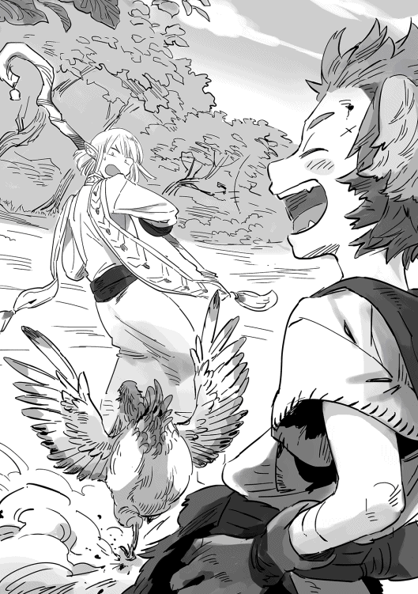
菊姫がタゲ取るのを待つ私とペテロ。シンはお茶漬が追い回されるのに慌てたのか、助けに入って殴った。そしてシンに移るタゲ、お茶漬とは違う方向に逃げるシン。それを追って右往左往する菊姫。もちろん通常営業です。
《暴れニワトリの肉×３を手に入れました》
《暴れニワトリの羽根×２を手に入れました》
「僕、治癒士なのにスキルに【回避】が出たぞおい」
何とか倒した後のお茶漬の一言。その後は順調。暴れニワトリ六羽にレオが絡まれたというか、他のメンツが来ていないのに殴り始めて、途中で逃走してきたりしたが順調だ。
レベルが上がったところで休憩を取る。レベルが上がると同時にＨＰとＭＰは回復。ＥＰだけが減ったままだ。食べないと回復しないらしい。買い物をしていない私に、シンが焼き串を譲ってくれる。ついでに『ＭＰ回復薬』も。
「拳士なのになんで持ってるの？」
お茶漬の的確なツッコミ。
「いろいろ珍しくってな！ 備えあれば憂いなしって言うし！」
「今回はまあ結果オーライ？」
ペテロがフォローする。シンは毎度雑多なものを買い込み過ぎる上に、何故か必要な高いものを持っていないことが多い。安物買いの銭失い、という言葉が浮かぶが、現在、色々足りていない私に口にする資格が無い。お茶漬が値段を覚えていたので、すでにすっからかんに近いシンに買値で払う。他にペテロと菊姫からも食料を譲ってもらったが、買い忘れをからかってくるだけで、金は受け取ってもらえなかった。焼き串とオレンジジュースとは言え、初期のお財布事情には大きいと思うので、早いうちに何かで返そう。
買い忘れというか、チュートリアルに時間がかかりすぎて買う暇がなかっただけなんだがな！ と、主張したいが、なにせ草原でゴロゴロダラダラしてしまった分もあるので言えぬ。
焼き串をもぐもぐしながらスキルを確認する。焼き串の肉はどうやらトビウサギの肉らしい。プニプニとして弾力がある、かな？ なかなか美味しい。途中、ＭＰが切れそうというか切れていたので、レベルアップで回復するのは助かった。因みに杖で殴ったせいか、スキルリストに【杖術】が追加されていた。レベルアップでもらったスキルポイントは５ＳＰ。スキルリストに出ているのは以下だ。
【長杖】ＳＰ１【短杖】ＳＰ２【魔術強化】ＳＰ２【精神強化】ＳＰ３【土魔術】ＳＰ３【木魔術】ＳＰ２【採掘】ＳＰ２【武器防具鑑定】ＳＰ１【鉱物金属鑑定】ＳＰ２【釣り】ＳＰ１【スキル鑑定】ＳＰ２【杖術】ＳＰ３【ＭＰ自然回復】ＳＰ２【ＨＰ自然回復】ＳＰ３【遠見】ＳＰ２【気配希釈】ＳＰ３【気配察知】ＳＰ２【不意打ち】ＳＰ３【体術】ＳＰ３【地図】ＳＰ１
うーむ。
【地図】【ＭＰ自然回復】と【気配察知】かな。ＭＰ切れの時のために【杖術】が欲しい気がするが、魔法剣士になった時、持て余しそうだし。スキル効果を字面で予測するしかないのがスリリング。きっと【長杖】は長杖装備時魔力が上がるとかで、【杖術】は棒術みたいな打撃系のスキルだろう、たぶん。いいかげん【スキル鑑定】を取るべきだろうか。それにしても、この先スキルポイントが不足してきそうだ。スキル取得は慎重にせねば。
レオがスキルの取得でうんうん悩んでいる。先ほど同じ職のペテロがアドバイスをしていたのだが、レオ的ロマンと実用性との間で迷い、決まらないらしい。シンと菊姫がまぜっかえし、お茶漬が重ねて現実的なアドバイスをしている横で、伸びをしてあたりを見回す。この周辺の敵は、こちらから攻撃をしない限り襲ってこないノンアクティブ。眺めるだけならば、きれいな緑の草原に白い鶏が思い思いに地面をつつく牧歌的な風景だ。
「お、薬草」
「【採取】と【植物食物鑑定】取ったの？」
薬草をプチプチと抜いているとペテロが聞いてきた。一言で二つのスキルを言い当てる男。
「ああ、ペテロは何を取ったんだ？」
「【採掘】と【鉱物金属鑑定】。生産【鍛冶】取ったからね」
「私は【薬士】取ったけど、魔術士のせいか【錬金調合】も出たので、そっちも取った」
「職業【薬士】で【調合】じゃないの？ 色々スキルでるね」
「もちろん【調合】も取ったけど、せっかくなので錬金の方も」
「錬金は、薬草と鉱物両方要りそうだよね」
「鉱物の融通お願いします、ぜひ」
すかさず頼んでおく。
「ちょっと聞いてくれ！」
【採取】しながら、のんびりとペテロとスキルの話をしていると、お茶漬が訴えてくる。
「どうした？」
「なに？」
「レオがスキル一覧確認しただけで、取得し忘れてやがりました！」
どうりでシーフな割に敵によく絡まれる。通常営業です。
【気配察知】持ちが私も含めて三人になったので敵の発見が早い。主にレオが発見！ と叫びながら走ってゆくのについてゆくので、戦闘効率的な早さは実は変わらない気もするが。というかレオ、他が付いてきているかとか、別な敵がいないかなどは、まったく確認していない様子。敵を見つけたら一直線。あれ、もしかして【気配察知】じゃなく、目視で見つけてる？ 謎だ。
戦闘を終えると、みんなスキルにＨＰ自然回復が出たそうでシンが悶える。
「ＳＰ使っちゃったよ！ かーっ！」
「わははは、オレもだ！ ついさっき！」
「わたちもでし」
「あれ？ 私はもう出てたけど、何でだ？」
「戦闘後にスキルリスト更新されるのかな」
ペテロがウィンドウでスキルリストを確認しながら言う。
「みたいだね。きっと休憩したからだよね、これが出たの。ホムラもスキル出る前に休憩してない？ 戦闘回数によって出るなら、僕たちとホムラ一緒に出るでしょ」
「あー、したな。休憩した」
正しくは寝っ転がってダラダラした、チュートリアルの草原は素晴らしかった！
森に近づくにつれ暴れニワトリだけだった敵の中に、暴れドゥドゥという、腰丈くらいまであるでかい七面鳥のような鳥が混じり始める。蹴りがとにかく凶悪で、さらにスキルを使ってくる。暴れニワトリと違いアクティブな敵だが、一度に一、二匹しか出ないので、こちらも危なげなく狩れた。
菊姫の防御力とお茶漬の回復のバランスがとれているうちは、敵が変わっても安定して倒せるだろう。レオが事故を起こさなければ、だが。
すでにレオは、ドゥドゥがアクティブなことに気がつかず走りよって、私たちが追いついた時にはドゥドゥ二匹に蹴られまくって瀕死になった後だ。ＨＰ回復薬を飲んでいる間も蹴られているのを見た。今のところソロはニワトリまでくらいかと、その様子を見ながら思った次第。
「シーフなのに【気配希釈】とってないのか」
「とったけど、かけてない！」
「レベル上がらないからかけなさい」
笑顔でペテロがレオに教育的指導。【気配希釈】はアクティブな敵に気づかれにくくなるスキルだ。気づかれても攻撃を受ける前に、菊姫のところに逃げ込めばセーフなのだが、毎度レオが先行しすぎて距離があるため間に合わない。まあ、通常営業です。
戦闘にも大分慣れたので森に行ってみることに。
入った途端に猪さんご案内。先行していたレオが猪に吹っ飛ばされた。【気配察知】の範囲外から猛スピードで突っ込んできて、声をかける間がなかった。まだレベルが低いので私の【気配察知】は効果範囲が狭いのだ。いや待て、レオ、【気配察知】持ちが喰らうな！
「ぬああああ!?」
「玉屋〜？」
「鍵屋〜」
すっとぶ姿に思わずお約束なかけ声をかけたらシンがのってきた。
菊姫がスキルを発動させてタゲを取る。レオが攻撃したわけではないので、チョトツがあっさり菊姫にターゲットを切り替えた。攻撃力があるようで、一撃で菊姫のＨＰがドゥドゥ二羽の時より削れている。ふっ飛ばされたレオに到っては、フルだったＨＰが三分の一以下になっていた。
だが、菊姫がタゲを取ってから手順は変わらず、お茶漬が菊姫を回復して私たちが攻撃する。倒すまでレオのＨＰは放置。
「【金】『鉄球』！」
【金魔術】がレベル２になって覚えた魔法を放つ。うん、テニスボールよりちょっと大きいくらいの鉄の玉でした。この分だと【火魔術】はファイアボールだな、きっと。
「【バックアタック】！」
「【バックアタック】！ わはははは！」
シーフ二人は敵の背後から攻撃すると攻撃力が上がるスキルで切りつけている。得物が短剣なので「斬る」より「切る」の方が合った表現だろう。
魔法も斬撃も味方にあたることがニワトリで判明したため、チョトツの正面が菊姫、後ろがシーフ二人、右がシン、私がちょっと離れた左のポジションで戦っている。お茶漬は菊姫から少し離れた右後ろだ、菊姫とシンとレオがよく見える位置といえばわかるだろうか。
ちなみに魔法は菊姫に当てました。ニワトリにつつかれるより、私の魔法の方がダメージ大きかったです。反省。
「【虎】『突』！ 【龍】『突』！ 【天】『蹴』！」
そうこうしているうちに、シンのコンボでチョトツは砕け散った。
単体技では菊姫や私の攻撃の威力の方が高いが、ボスなどのＨＰが多い敵では、コンボの数が増える後半になるにつれて、シンの方が叩き出すダメージが多くなるはずだ。大器晩成型、将来頼りになる職なのかもしれない。今現在はコンボを出すたび、ＥＰがああ〜！ と叫んでやかましいが。
それはさておき、チョトツの肉と皮を手に入れた。これだけ肉がでるということは、料理スキルあるよね！
その後もチョトツに何度か遭遇したが、最初の突進さえ避けるなり受けるなりすれば、問題なく倒せた。戦闘の合間に、菊姫とシンとレオ、ペテロがもぐもぐと何かを食べている。魔法職の私とお茶漬は、一日三食で行けそうなくらいだが、代わりにＭＰポーションを飲んでいる。【気配察知】はマメにかけ、確認せねばならないタイプのせいかＥＰの消費は多くない、なので三食オヤツで足りる。私も薬より食事の方がいいのだが、ほとんど減っていないのに食うのはシルの無駄だ。
食事は諦めたが、チョトツ戦で丸焼きを想像して、途中からファイアニードルばかり使い始めたのは内緒だ。水魔術が相性いいはずなのに、金魔術と火魔術が先にレベル２になってしまった。
森の中には赤いベリーが所々に生えている。果物などには【採取】持ちでなくとも収穫できるものがあるようで、ベリーはその代表だ。【採取】持ちより一度に取れる量は少なく、ＥＰ回復は微々たるものだが、空腹の救済策なのだろう。口に放り込むと、ぷちぷちとした食感で甘酸っぱくってジャムにしたい。結構酸っぱかったのだが、いくつか食べるうちに慣れて甘く感じるようになった。そんなところまで感覚が再現されているのがすごい。
森には他に『魔力の実』という、こちらは【採取】でしか採れない実もあった。ＭＰポーションの材料かね？ ベリーと魔力の実をアイテムポーチに詰めまくった。ただいまの持ち物、トビウサギとチョトツの皮やら肉、暴れニワトリと暴れドゥドゥの肉、卵、羽根。角ウサギの皮と肉と角、角は出にくいらしく皮や肉の半分もない。採取で採った薬草、魔力の実、たくさんのベリー。
敵からのドロップはだいたい三つで、その中の一種類は出にくいようだ。
アイテムポーチの拡張はあるのだろうか。どのゲームでも、保管容量と戦っていた記憶があるので、とても不安だ。
森でチョトツのほかに出る敵は角ウサギだ。トビウサギの色違いで、白くてぱっと見かわいいが、角がねじれていて凶悪化していた。二匹から四匹の群れで襲ってくる。チョトツと角ウサギ狩りでレベル３に上がり、スキルポイントを２ポイント手に入れた。５ポイントは初回サービスだったのか？ ちょっと残念。２スキルポイントで何を取るか、後でゆっくり考えることにする。ステータスは今回も知力に２ポイント。 物理攻撃組はさきほどの【ＨＰ自然回復】を取ったようだ。
「いた～～いでし！！！！」
調子に乗って森を進んでいたら狼が出た。菊姫が一撃入れたら、狼からのお返しの一撃で菊姫のＨＰが半分近く削れる。
「無理ゲー、【回復】！」
回復を入れたところで、すぐに狼はお茶漬にタゲを変えて向き直る。
「【足止め】！」
ペテロのスキルで狼が硬直。
「今のうちに逃げよう。無理！」
一目散に逃げ出し、おとなしくチョトツ＆角ウサギ狩りに戻った。チョトツは向こうから一匹だけで向かってくるのを狩っているので、たいした量を狩っていない。だが、狼にびっくりさせられた憂さを晴らすように、角ウサギは乱獲しまくった。
レベルが上がって５になったところで、日が傾いてきたのでそろそろ街に戻ろう、ということになり、遭遇した敵を狩りながら川を目指している。街へ帰るはずが、なぜか川を目指している。レオの一回釣りたい！ につき合うことになったのだ。初めての戦闘がうまくいったため、私だけでなく、みんな上機嫌で話しながら移動する、幸い川は街の近くだ。むしろ川があるから街があるのか。
途中トビウサギを狩ることができ、依頼は三つともクリアになった。行きはなるべく避けていた、暴れニワトリ六匹の群れも、帰りは楽々クリアだ。
「おなか減ったでし」
「釣ったの焼こうぜー！」
「無茶言うな、火種がないわ！」
「あれです、【火魔術】出番？」
「おとなしく今日は釣るだけにしときなさい」
レオが釣糸を垂れている間、わいわい騒ぎながら薬草採取に川の石から採掘。【採取】は私と菊姫、お茶漬とペテロは【採掘】だ。シンは収集系は取っていないそうで、釣れとるかな〜とレオを眺めて言っている。確かにレオはやたら楽しそうにみえるので、同じスキルを取りたくなる気持ちはわかる。
生産は、お茶漬とシンとレオとペテロが【鍛冶士】、菊姫が【裁縫士】、私が【薬士】だ。鍛冶率がぶっち切りだが、生産にも派生はあるそうなので、最終的には違う方向に行くかも知れない。
気づくとギルドのＥランク依頼掲示板で見た、水色っぽい小さな花をつけた『ルル草』が生えていた。『ルル草』は夜に咲く。先ほどまでは薬草ばかりだったのに、まだ多少日は残っているけれど夜になったのか？
「暗くなるぞ～、もう街戻ろうぜ」
シンが言い出したタイミングでレオにアタリが。
「わははは、セーフ!!」
レオが一匹釣り上げると同時にスライムが現れた。ぽよんぽよんする様は水風船のようだ。レオの釣果を見るのに集まっていたので、菊姫が攻撃を入れて無事タゲ取りしたのだが。
「【龍】『突』！」
「【金】『鉄球』！」
「【バックアタック】！」
「【バックアタック】！」
ダメージがあまり通らない。
「【火】『ファイアボール』！」
魔法は別です、ダメージ通りました。ついでにタゲも来ました。【金魔術】はエフェクトの見た目どおり、物理扱いなのか他の三人と似たり寄ったりのダメージだったが。
「【足止め】！」
「【挑発】！ でし！」
ペテロが足止めしてくれて、攻撃が来る前に菊姫がタゲを取り返し、一安心。私がタゲを取らないようにファイアボール三回に一回は挑発を入れてもらう。菊姫のＥＰの減りがやばくってドキドキするが戦闘は安定している。物理攻撃が微々たるダメージしか通らないのは厄介だが、ウォータースライム自体の攻撃力はドゥドゥくらいか。
とか思ってたら、菊姫がネバネバを付けられ状態異常になり、私にまたタゲが来た。ダメージはドアに足をぶつけたくらいの痛さ。痛覚は調整されているのだ、小指レベルじゃなくて何よりです。
「きゃー、スキルが使えないでし～」
「【火】『ファイアボール』！」
菊姫にタゲとり返してもらうのは諦めて攻撃を続ける。
『ウォーターニードル』は、ダメージどころか逆に回復させそうな嫌な予感しかしないので、使わないぞ！ ますます【水魔術】があがらぬ！
菊姫の受けたダメージはドゥドゥ並みだったけど、私が受けるとＨＰゲージ的な意味で凄く痛い！ これが防御力の差!! 私のＨＰゲージが半分切ったところでお茶漬が回復してくれる。チョトツよりキツイんだが？
「誰か私のＭＰ回復して〜飲んでると殺しそうでヤバい～」
お茶漬からヘルプでペテロがＭＰポーションを投げる。お茶漬にぶつかると、薄いガラスが割れるような音がして、キラキラした紅いエフェクトが出てＭＰが回復した。
「ホムラは平気？」
「私は釣り待ちの間に全快しているから平気だ！ 【火】『ファイアボール』！」
取って良かった【ＭＰ自然回復】、流石に戦闘中は回復しないが。途中、私も粘液を食らってかなり長い戦闘になった。
《ウォータースライムの肉×１を手に入れました》
《ウォータースライムの核×１を手に入れました》
《レベル６になりました》
《【火魔術】がレベル３になりました》
《スキルリストに【粘耐性】【暗視】【打撃耐性】が追加されました》
かなりきつかった！
終わった頃には真っ暗で、回復もそこそこに、街に逃げ帰った。目が慣れれば二つある月に照らされて、近距離にいればシルエットで仲間の見分けがつくくらいではあるのだが、夜の敵は基本アクティブらしく、油断ができない。昼間トビウサギがいたファストブリムは、蛇に取って代わられている。私とお茶漬のＭＰも、菊姫達のＥＰもやばかったので、【暗視】を取った【気配察知】持ちのペテロについて敵をよけながら移動した。
【気配察知】を持っていても、夜はぼやっとした敵の方向しかわからないことが判明し、移動の最中に私もスキルポイントを２使って【暗視】を取得した。
門でギルドカードを提示し街の中に入って、ようやく緊張がとけた。街はモンスターが跋扈する世界なためか、高い壁で囲まれ、南と東西の三つの門からしか出入りができない。北側には領主館と騎士の家屋があるため門はない。南門から入るとすぐログインした時の噴水広場だ。夕方には大門は閉められ、以降は小さな脇門からの出入りとなる。夜間は荷馬車などの出入りはできず、身分証を提示した人のみが出入りできる。
大門の開閉は神殿の鳴らす時の鐘でわかる。リズムを刻んで数回鳴らされる朝昼夕の「刻の鐘」と、その前に鳴らされる「捨鐘」。捨鐘を聞いて行動に移せば刻の鐘に間に合う寸法だ。真夜中にも捨鐘無しで一度だけ鳴らされる。一日の長さは二十四時間で一緒だが、時間の長さは日の出、日の入りを基準にしているらしく、ちょっとずれている。
広場は昼間ほどではないが人が多く、何処からか弦楽器の音が聞こえる。ファンタジー世界だから、リュートとか竪琴の音だろうか？ 家路を急ぐ住人も多く混じっているようだ。ひとり者っぽい人について行ったら、穴場のうまい店に着かないかな？
「宿はギルドの道挟んで隣だけど夕飯どうする？ 宿に食堂あるけど飯の予約はしてないぜ」
戦闘ではあんななのに、こういう予定の段取は得意なレオ。
「食堂のぞいてみて、混んでたら焼き串買った露店通り行こうか」
宿に行く途中、噴水広場の東側に見つけたレストランの外まで続く行列を横目に、お茶漬が提案する。
宿の食堂も満杯だった。ついでに泊まる方も満杯らしく、宿のカウンターで冒険者ギルドの簡易宿泊施設を案内しているのが耳に入った。痛みなどに代表される不快な感覚は大幅にパーセンテージが下げてあるとはいえ、これだけ感覚が再現されているのを考えると、宿は良いところに泊まりたい。具体的に言うと風呂がない、仕切りがない、の簡易宿泊施設は遠慮したい。
「予約してあって良かった。レオありがとう！」
「素晴らしい」
「ありがとうでし」
「ありがと、よかったよかった」
「サンキュー！」
「わははははは！ バッチリだぜ！」
思わず感謝の言葉を述べれば他のメンツも口々にレオに礼を言う。
とりあえずカウンターで明日以降もそのまま泊まる旨を伝えて、食べ物を求めて外へ出る。ログアウトが宿屋推奨のせいか、宿泊者が一度『泊まって宿屋の外に出る』ということをしない限り、部屋に次の予約を入れることはないようだ。当たり前といえば当たり前に感じるが、なにせログアウト中は予約の延長もなしに数日寝ているはず。少なくとも一定時間経過し、ＥＰ不足通り越して神殿行きになるまでの期間は安泰だそうだ。ログインしたら他人が同じベッドにいたとか、事故というより事件だしな。
住人に異邦人の宿泊が嫌がられないか、ちょっと心配になったが、神殿行きになるとベッドの上に宿泊料＋αが残されるそうで、宿屋の損にはならないそうだ。
寝ている間はＥＰの減りは緩やかになるのだが、空腹なままログアウトするとＥＰの次はＭＰが、ＭＰの次はＨＰが減り始めるので危険極まりない。長期間ログインしない場合、ログインして出る場所は戦闘不能になった時と同じく神殿だ。
ギルドと宿屋の間の通りを百メートルほど歩くと、ギルドの簡易宿泊施設が右手に見えてきた。お茶漬たちの話によると、この裏手に露店通りがあるそうだ。細い路地に入ってゆくと人のざわめきが聞こえてくる。そこはまるで縁日状態だった。
「はぐれたら、ここに集合ということでいいか？」
「「おー!!」」
「わかったでし」
「レオと菊姫は踏まれるなよ～」
「はぐれないようにする努力はしようぜ」
路地に踏み込む前に迷子防止ならぬ迷子前提解決策を決める私。手つなぎイベントなど六人では起きようがない、というか男だらけの絵面になるわ！
とりあえずＥＰがやばいので何か食べよう。匂いをかいだらＥＰゲージが減った気がしたぞ。露店には食べ物屋を中心に小さな雑貨屋なども混じっている。屋外で食べる前提のちょっとした食べ物を扱う店と食材を扱う店とが入り混じって、路地の左右にひしめき合っている。
うん、さっそくはぐれた！！！ レオとシンはどんどん先に行き、お茶漬と菊姫は色のついた飴で、花なんかを作っている露店を見ていたかと思ったら見えなくなっていた。六人一緒に行動は早々に諦めて一緒にいたペテロと美味しそうなものを探す。昼間来た時に見たパンに肉を挟んでくれる店が気になっているということなので、人とぶつからないようにしながらその店を探す。
たどり着いたその店は、パンに野菜を挟む店になっていた。
いつもより売れた上に具材の肉増しを希望する客が多く、肉がなくなってしまったとのこと。今、鉄板でジュウジュウとよい音を立てている肉は、並んでいる人の分で終わりだそうだ。住人の店に売り切れがあるとは予想外。
「悪ぃな、また来てくれ！」
「うーん、残念」
早々に諦めるペテロ。
「あれだ、野菜挟んでくれ。あと、鉄板で私が持ってる肉を焼かせてくれ」
隣でペテロが何を言いだすんだコイツ？ みたいな顔しているけど気にせん！ もうすっかり今日の夕食は肉挟みパンなんだ。肉はあるんだ肉は。生肉だけど。
「おー、肉持ってんのか！ 肉は好きに焼いていいから、持ってる肉なんでもいいから売ってくれねぇか？」
買取交渉きた！ だが相場がわからない!! いや、受けているギルドの依頼がトビウサギの肉×６で九〇シル、暴れニワトリの肉×４で八〇シルだ。それぞれ十五シルと二〇シルだな。メニューから受けている依頼を確認して単価計算をする。電卓が欲しい。ああ、だがしかし、トビウサギ依頼で六つ肉がいるのに八つしかもってない！
「暴れニワトリでよければ五〇程度は出せるぞ」
「上等！」
ギルドの依頼の値段よりちょっとだけ多いシルを渡される。提示された適正価格に安心して、暴れドゥドゥの肉と角ウサギの肉も引き取ってもらった。全部で五千シル近い。ペテロの肉も引き取ってもらい、露店のオッサンはこれでまだ商売ができるとホクホクだった。一つの肉から三つ料理ができるらしい。
「じゃあ、焼き方教えるから焼いてみな」
並んでいた客がはけて、改めて販売の準備をしながらおっさんが言う。
「有難う。ところで名前はなんて？」
「おう、オレか？ オレはジョスってんだ。いつもここで店出してるからひいきにしてくれ！ 肉の買取もするぜ？」
そう言って笑うジョス。何か覚えがあるな、と思えば、ギルドにトビウサギの肉で依頼を出していた人だ。依頼よりも買い取り額をおまけしてくれたのか。
さっそくアイテムポーチからチョトツの肉を出す。
「ホムラ、チョトツの肉？ じゃあ、私は角ウサギの肉出すから半分にしないかい？」
「いいね！ どっちも食べてみたい」
改めて開店のための準備をするジョスのおっさんのアドバイスを受けながら、二人で肉を焼く。肉の脂の弾ける音と、その脂の焼ける匂いが凶悪に食欲を刺激する。隣ではジョスが暴れニワトリの肉を蒸し焼きに。こっちはこっちで水をかけて蓋をするまでに派手に湯気が上がっていて旨そうだ。
そうこうしているうちに肉が焼け、ジョスに渡されたパンに好きなように野菜と肉を挟んでいく。聞いといて忘れていたが三つできた！ チョトツの肉は脂と肉汁が野菜にからんで、大変うまそうだ。持ちやすいように紙に乗せて完成！ ペテロの角ウサギの肉は表面がカリカリに焼けていてこちらもうまそう。
一つペテロと交換して、ついでにジョスから暴れニワトリとドゥドゥのパンを三つずつ買い、一種類ずつペテロに渡す。昼間の焼き串のお礼だ。アイテムポーチに入れておけばできたてが出せるのは昼間知った。一番美味しいウチに急いで仕舞う。ニワトリは二〇シル、ドゥドゥは二十五シル、五シル追加で肉が追加できるそうだ。私たちがつくったパンと野菜代はおまけしてくれた。
肉が焼きあがると、あっという間に混んできたジョスの店から退散して、道の端に寄って二人でかぶりつく。露店の食物を立ち食いするのって、なぜこんなにうまいのか。
その後は、その場で搾ってくれるジュース屋でベリーのジュースを買い、飲みながら店を冷やかし、時々明日用と言いわけしながら食欲をそそる物をついつい購入。ペテロも買ってたし。屋台系は現実世界と同じで気づけば使用した金が結構な額になっている、気をつけよう。
お茶が欲しいが、茶葉そのものを扱う店しか見つけられず、茶葉を買う代わりに一杯試飲させてもらった。そしてビールを呑んでる男が隣にいる。味はイマイチらしい。
食べ終わると包装紙や食器はくすんだ光の粒になって消えてゆく。不思議な感じがするが便利だ。扱っているのが食品系とあって、大きな祭りの出店エリアに似た雰囲気なのに、足元が存外綺麗なのはそのせいだろう。ＥＰがフルだと食べることができないので、【気配察知】をしながら、さらに通りにいるプレイヤーを【鑑定】しまくった。【気配察知】は上がらなかったが、おかげで【動物魔物鑑定】はレベルが上がった。
「本が売ってるよ。パターン的に掘り出し物なんじゃない？」
周りの露店よりさらに狭い店で、何に使うのか判然としないものが敷物の上に置いてあり、日除けの布を支える頼りない柱から唐辛子をまとめたようなものが下げられている。その中で本だけが本として認識できる。
売っているのは売る気の無さそうな老人で、いかにもな感じだ。他の店は呼び込みや注文で騒がしく声がしているのに、客に声もかけずに本を読んでいる。売り物じゃないのか？ 店の前では、この店の客ではない者たちが、立ち話や何処かの露店で買ったらしいものを立ち食いしている始末。
「よく見つけたな～」
何処もかしこも混んでいるので店の前に多少空間はあるものの、立ち話中の人に埋もれて日よけの布しか見えない。
「忍びですから」
笑顔で言うペテロ。
「弓使いは何処へいった！」
とりあえず人の隙間を縫って店の前に行く、店の老人は気がついてこちらを一瞥したが、また本に視線を戻してしまった。手ごわそうである。
「こんにちは、この本が見たいんだがいいか？」
日本人的スマイルを浮かべてチャレンジ。老人はため息をついてこちらを見た。感じが悪いぞ。
「よそ者に売る気はないんだ、他の店に行きな」
テンプレ的お断りが来た。
「確かにこの街に住んでいるとはいえませんが、一応ギルド登録はしたんですよ」
ペテロ強い！
「はん、冒険者なんぞすぐにどっかへ行っちまうんだろ？ せめて一人でも知り合い作ってから出直すんだな」
あれ？ これはフラグ？
「私は住人と知り合いですが」
証明するようにフレンドリストの表示をしてギルドカードを見せる。二十分くらい話しただけの知り合いだがな。ジョスとの付き合いの方が長いかもしれん。
「ふん」
鼻を鳴らして胡散臭げにカードと私を見てくる。胡散臭いのは店主の方だと思うのだが。
「ここにあるのは売れない」
ダメか。
「立ち食いのやつらに汚されるんで売り物は引っこめちまったんでな。ワシは東門近くの路地裏で古本屋を開いておるから、たどり着けたら売ってやろう」
もっとも休むことも多いがな、と老人は言う。
「はい、有難うございます」
礼を言ってその場を離れる。
「これはＮＰＣのパトカをもらってから進めるクエストなのか、残念」
「みんながログインしてない時にでも探してみるかな。場所がわかったら教えるよ」
その後は私が果物を買ったり、ペテロがまたビールを買ったり、私がお茶を淹れるために調理用の水を買ったり。ちょっと危険な空間だ。財布的に。ついでにアイテムポーチがやばい。
ティーポットやらは、噴水広場の武器屋防具屋の裏手の小売店か露店街に売ってるのを教えて貰った。武器や防具、道具を扱う露店の集まりとのこと。治安が良くない地域が近いから気を付けろと気遣われた。
そぞろ歩いているとメールが入る。開けなくてもこれは「集合場所に戻ってこいメール」だと見当がつく、ペテロにも来てるし。
集合場所には菊姫以外が揃っていた。菊姫を待ちながら食べたものの話をする。どうやらレオもジョスの店が気になっていたらしく、直行して売切れと言われ、仕方なくシンと他の店で買い食いしたらしい。
「でも、もう一回通ったらやってたんで無事ゲットしたぜ!!」
得意満面なレオに微妙な顔になる私と肩を震わすペテロ。笑えばいいと思うよ？ めぐりめぐって、私とペテロの肉はレオとシンの胃袋に収まったらしい。
「ギルド寄って依頼受けて帰ろう。明日は出る時また混んでそうだし」
「あー、私も報告ある」
「オレも！」
お茶漬の言葉にペテロとレオが答える。
「あの混んでる中に入れたの？」
「ホムラが半分以上追っ払ったからな！」
「人聞きの悪い......」
話しているうちに菊姫も戻り、明日の分の依頼を受けることに異存はなく、ギルドへみんなで移動した。忘れないうちにと菊姫にベリージュースと果物を渡す。別にいいのに、といいながら受け取ってくれた。アイテムポーチがあると、荷物になるとか気にしなくていいのが素晴らしい。そしてすでに容量がヤバイ。
ギルドに寄って宿屋に戻ってきた。依頼達成回数がギルドランクに関わるので、お茶漬から面倒でも一括で売り払わないよう教育的指導を受けた。Ｅランクになるのは割合楽だが、Ｄに上がるのは依頼の達成数を千にしなくてはならんらしい。がんばろう。
レオ達は三人部屋を二つ取ってくれていた。
荷物はアイテムポーチが一つだし、片方の部屋に集まって明日の予定を話しながら、入りたい人から風呂を使い、寝たい人から隣の部屋に行って寝始めるという個人行動万歳な部屋割りだ。まだ割っていないとも言う。
今日は戦ってばかりいたので、明日は明るくなったら街の散策と武器防具の新調をすることになった。地図に出ている大まかな街の配置を確認しながら、東門の北側にある職人街まで行ってみることにまとまった。その前に噴水広場に面した武器屋防具屋に寄って価格調査してから行こう、という話になったところで思い出した。
「そういえば、さっき露店で武器屋と防具屋の裏手にも、小売店と道具や武器防具を扱う露店があると聞いたぞ」
「ああ、言ってたね」
計画は武器屋防具屋に寄って、小売店回って露店を見て職人街になった。あとは北西の区画になにがあるか謎なので、時間があればそこにも行くことにした。
遅ればせながらこの街の探索だ。だが、その前に夜明け前の戦闘をするんだがな。明るくならんとほとんどの店は閉まってるし。
明日の予定が決定し宿代の清算をしたところで、レオと菊姫が風呂に行く。
宿代は一人三〇〇シル、初期の所持金から考えたら高い!! 私の分を立て替えてくれていた、お茶漬と菊姫には感謝だ。
「うをぉっ！ 異次元空間!!」
風呂場からレオの叫びが聞こえた、ちなみに菊姫は隣の部屋の風呂だ。
「何だ？」
「何だろう？」
「風呂で奇行がッ！」
「ふ」
その後は普通に水音だけで静かになり、四人でしゃべっているとレオが出てきた。カラスの行水だな。
「タオルで出てくんなっ！」
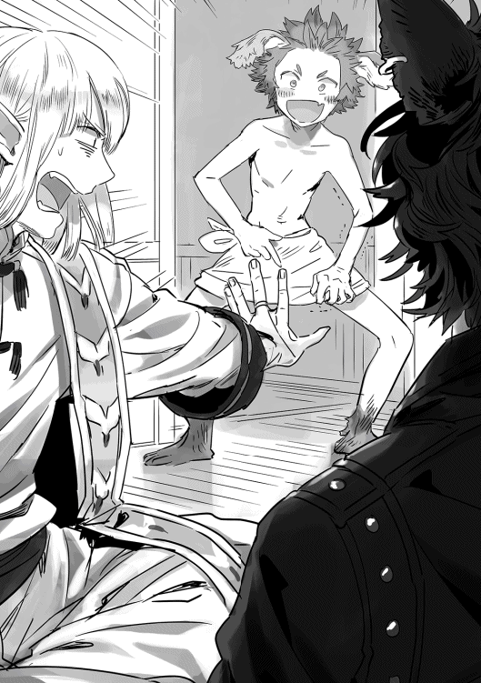
お茶漬の声によってレオを見れば実にいい笑顔でタオル装備のままだ。
「なあ、なあ。異次元空間だぜ、これ！」
レオが自分のタオルをめくろうとするが、鉄壁のガードで柔らかそうなくせにめくれない。
「見せんでいい！ 小学生か貴様！」
宿屋なんだから静かにしようぜ、お茶漬先生？
その後、私も風呂へ。
脱衣室で脱いで、下着から脱衣所に用意されていたタオルに装備を変える。素っ裸にはなれない仕様のようだ。
水道なのかと思っていたら魔道具設定？ らしく、空の湯船に入ると見る間にお湯が浴槽の底からせり上がってきた。なかなか快適。あと、私も異次元空間でした。
成人以上指定ゲームでアレな注意書きもあったので、多分設定をいじれば全部脱げるのだろうが、今のところは脱ぐ予定はない。
全員風呂から上がってベッドへ。こちらの時間で三時間ほど寝るか、ログアウトの時間を現実時間でも二十分とらないとステータスが大幅に低下する。
因みに宿屋などできちんと寝ると、起きてから三時間ドロップ率が少し上がる。まだ低レベル帯だし、レアがドロップしたところで大したことはないだろうが、早起きは三文の徳というやつか？ 早起き関係ないけど。
現実時間は二十三時。三時間で一日が過ぎる。ログアウトは普通に選ぶこともできるし、こうしてベッドに入る時に睡眠状態になったらログアウトする設定も選べる。あとは現実世界での体が生理的欲求を伝えてきた場合、五分後には強制ログアウトがかかる。
強制がかからないうちに今一度ログアウトするつもりだ。戦闘中落ちて慌ててトイレ行って戻ってきても、あっちの五分がこちらでは四十分だ。その辺はなんとかならないんだろうか？ ならないんだろうなぁ。
そんなことを思っていると現実世界で意識が覚醒した。あちらの世界は寝つきがいいらしい。
バイザーを外して、トイレに行き、ついでに顔を洗ってさっぱりする。紅茶を淹れてひと息。軽いストレッチをした後、またバイザーをかぶる。
隣のペテロとシンの起き出した気配に私もしぶしぶ起き出す。外は真っ暗でここまで感覚が再現されていると、まだベッドでゴロゴロしたい気分になるのは仕方がないだろう。眠気が全くないのが不思議だが。起きるとＨＰＭＰが回復しておりＥＰが減っている。
あと、ガラハドから「パトカありがとうメール」が来ていてびっくりした。酔っ払って出したらしく、判別がところどころあれだが、たぶんそういう内容のはずだ。
よし！ 朝めしだ！ 冒険者に特化した宿なので、宿泊者は夜中だろうと、いつでも食堂で食べられるのだ。ただし、昼十二時から夜十時頃までは一般にも解放になるので昨夜のように混む。
焼きたての丸いパン、ベーコン、三種類のソーセージ、卵、サラダ、オニオンスープかコーンスープ、ヨーグルト。シンとレオが和食はないのかと嘆いている。準備のしやすさ優先の献立チョイスだとは思うが、パンを割るとパリパリと音がして湯気が出る、中はしっとり。バターをたっぷり塗って幸せだ！
「納豆は実装されないのか！」
「和テイストの集落とか実装くればあるんじゃないかな？」
納豆納豆言っていた、シンとレオも完食して旨かったと満足していた。
宿の外に出ると、ギルド越しに噴水広場が見え、宿とギルドのある大通りは街灯のオレンジがかった光が石畳を照らしている。噴水広場に面した店は明かりが煌々とついており、どれも営業中だったので、薬師ギルドが出しているという販売所でＨＰ・ＭＰポーションの補充をしておいた。蛇がいることを踏まえて毒消しも少々購入。ＭＰポーションは五十本も購入。敵のレベルも自分のレベルも低いうちは、杖で殴っても魔法を使ってもそこまで大きな違いはなかったのだが、現在さすがに目に見えて違ってきたのでＭＰ切れはまずいのだ。シルの節約のために、やっぱり【杖術】取ろうか。
この時間でも広場には人がいるし、門の外にも人がいた。生産や休憩などで散ってはいるものの、初日の金曜とあっては減るはずがない。
「やっぱり、いっぱいいるね」
夜の水辺には近づかないことを確認しあって、昼間も比較的空いていた暴れニワトリがいた場所に向かう。【暗視】は全員取得したようだ。完全な初期装備は私だけな気がするので、ちょっと後ろめたい。
夜の敵はアクティブで、走っているとヘビに絡まれた。レオは今回【気配希釈】をちゃんとかけているようで、絡まれたのはシンだ。
「ぎゃー！ すまねぇ！」
「ばか～～ん！」
あわててヘビ二匹を殴ってタゲをとる菊姫。
「ヘビは平気でしょ、気にしない気にしない」
「レオの罠。もう少し余裕を持って回避お願い。先導が信頼できないクオリティ」
慰めるペテロと冷静に問題点を指摘するお茶漬。
「わはははは」
笑うレオ。避けるの直前過ぎだ、道案内役！
ペテロも敵を避けるコースの先導ができるけれど、レオが先陣切って走るのでつい、ついていってしまった。悲しいかな、私は【暗視】も【気配察知】もあるけど足が遅くて先導できない魔術士だ。バラバラに行ってソロ状態で絡まれると厄介なので、絡まれてもパーティー戦ができるように固まって行動しているのである。先導者は敵を避けるルートに誘導するので、暗黙の了解で【気配察知】持ちで足の速いレオかペテロが担当してくれている。
「きゃ～毒でし～～～～！」
菊姫が悲鳴を上げる、菊姫のＨＰバーがぎりぎり確認できるくらいジリジリ減って行く。そんなに強い毒ではなさそうで、ほっとしながらヘビにウォーターニードルを打ち込む。危なそうだったら玉使うぞ！ 本当ですよ。
毒の状態異常は戦闘終了後に消えた。
《ブリムヘビの皮×２を手に入れました》
《ブリムヘビの牙×２を手に入れました》
《ブリムヘビの毒を手に入れました》
《スキルリストに【料理】が追加されました》
昨日のあれか！
「【毒耐性】きたでし～」
「【料理】が」
笑いをこらえたような声でペテロが言う。
「何故料理!?」
「どう考えてもホムラのせいです」
ペテロが昨夜の話をして皆に食い意地張りすぎだと笑われました。そういえば、待ち合わせ前に露店に行ったのはレオとペテロで、他は普通に広場に面した店で買い物したそうな。むしろ二人は広場の店が未体験、交代でギルド付近で私を待っていて別行動になったらしい。すみません。
「料理は今は無理だから置いといて【毒耐性】は欲しいかな」
「一回みんな噛まれようか」
そういうことになった。
無事全員【毒耐性】もリストに出し、レベルが上がってもっと楽になったら【粘耐性】も取りに行こうと話しながら、暴れニワトリエリアへ到着。いたのはでっかいネズミ、ブリム大ネズミだ。群れてるだろうという予想に反して、一匹ずつ草原のあちこちにいる。
「とりあえずやろうか」
「釣ってくるぜ！」
レオが駆け出して大ネズミをつれて来る、アクティブな敵は攻撃範囲内に近づけば一定の距離を追いかけてくるので、足の速いレオかペテロが、みんなが待つ場所へつれてきたところを、菊姫が殴ってタゲを自分に変えて戦闘を始める。誰かが自分をエサにして釣ってきた方が、全員で散らばって敵のところまで移動するより戦闘できるまでが早いのだ。レオが【気配希釈】をかけ忘れて釣らなくていい時に敵を釣るまでがセットである。
「ネズミ、気持ち悪いでし～～～～！」
赤黒い目に鱗っぽいものに覆われた尻尾、硬そうな体毛、ハムスターが好きな私でもこれは嫌だ。特に尻尾が。
「ネズミに噛まれるのがショックでし......」
戦闘は特に問題なかったが、仲間を呼んで鼠算で増えるわ、噛まれて毒にはなるわ、現実世界でもネズミの嫌いな菊姫には散々だった。
「きついかもだけど、ドゥドゥのとこいっちゃう？」
「ＭＰポーション多めに用意したし、それでもいいぞ」
「同じく」
シンの提案に乗る私とお茶漬。ネズミの場所から早々に移動する。
ドゥドゥが居た場所には、赤まだらなカエルが陣取ってゲコゲコ鳴いていた。色からしても毒持ちだろうと予想ができる、夜の平原は毒持ちで揃っているようだ。
「なあ、もしかして毒耐性って毒受けないと上がらねぇの？」
「気づいてしまったか」
シンは【毒耐性】取ったのか。
「レベル上がってダメージ受けなくなったら、ソロで蛇に延々噛まれていれば上がるんじゃないかな」
無駄に爽やかにペテロがひどいことを提案する。
「わははははは。がんばれ！」
とりあえず毒ガエルは事件もなく狩れて、その後森へ行って、コウモリ相手に魔法と【投擲】が大活躍。【投擲】はその辺の石を投げればリストに出るそうで、お茶漬も取得している。シンが「毒耐性じゃなくって投擲とればよかったあああああああ！」と叫んだところで日も昇ったので街に帰る。
レベルは７になったし、【水魔術】と【金魔術】も上がったので、二つとあまりレベル差がつかないうちに新しい魔術を取った方がいいだろうかと検討中だ。【気配希釈】は取った。３ＳＰは大きいけどパーティーで敵からタゲ取りしないように、細かく攻撃調整するよりはずっといい。
ギルドで報告して広場のレストランで休憩。
なんとなく出される飲み物や運ばれる料理を鑑定、同じ評価４でも値段が高いものほどＥＰの回復量が多い。露店の料理は美味しかったけれどＥＰの回復量が少なく安価だった。高い料理はランクも高い。そして住人の作るものは基本、評価４固定だ。
「いいナックル欲しいな～」
「アイテムポーチの容量上がっているものが切実に欲しい」
紅茶を飲みながら訴える私。
「売り払って、きれいさっぱりすればいいのに」
「薬士だから薬草とかとっておきたいのだ」
錬金で使いそうな毒とか牙も数種類とってあるし、ポーチを圧迫しまくりだ。
「わたちも皮がいっぱいでし！」
「この世界、倉庫はないのかね？」
「まあ、これから行くところにあることを祈ろう」
整理上手なお茶漬とペテロは余裕の顔だ。あと、気持ちよく全部売り払ったらしいレオも。
「あ、異次元空間オプションで解除できるってよ」
コーヒーを飲みながら掲示板を見ていたらしいお茶漬が唐突に話題を振ってくる。
「風呂でタオル脱げるようになるのか」
「オレ、そんなところまで造形した覚えがないけど、大きさはナニで決まるのか？」
「個室では脱げるって」
「意味深な」
「悪い大人でし」
「ところでホムラ、誰がＮＰＣからカードもらったか掲示板で話題になってるぞ？」
ぐふッ！
商店街めぐりはまず広場に面した武器屋から。
はじめてこの世界に来た時、降り立ったこの広場は、南門から入ってすぐに半円を大きく描くようにしてある。中央に噴水を配し、領主館へと続く北に伸びる大通りと、南の外壁に沿って東西に伸びる比較的広い道、大通りを挟んで東に冒険者ギルド、西に商業ギルドがあり、それぞれのギルドの大通りとは反対の隣から斜めに延びる道は東西の門につながっている。
商業ギルドから南壁までの間に武器屋、防具屋、服屋、道具屋が大きな間口を広場に向けている。街壁に囲まれた家々は利用できる土地に制限があるため、ひしめくように建ち、間口は狭く、三階四階と、上へ上へと伸びてゆくのが普通だが、広場に面して建つ店は、むしろ高さより幅の方が広い。
反対の冒険者ギルドから南壁までに建つ店は多少様子が違って、修理屋と薬屋は武器屋の半分程度の間口しかない、もっとも、これは扱う商品の大きさや量、薬屋に到っては東門前に薬師ギルドが別途あるためだが。レストランは野外用の食事を売る店を隣に併設しており、生産材料屋は生産施設の貸し出しがあるため武器屋よりも広い。西側よりも幅は不揃いだが、高さとデザインを揃えているため広場の風景は整っている。
「テーマパークの土産物屋が並んでるトコみてぇだな」
「一応、この広場で全部済ませることは済ませられるね」
お茶漬が言う通り、暇が惜しくて金をかけて構わないからすぐに戦闘をしたい冒険者は、ほぼ広場でこと足りるようにできている。強いて言うなら、宿屋は冒険者ギルドの北隣で噴水広場に面していないくらいか。
この街を造り治めているのは騎士伯、冒険者で多大な戦果と功績をあげ爵位を賜わった男の何代目かだ。今でも武勇を尊び冒険者に寛容な領主だそうだ。魔物の存在する世界で騎士伯は王族に立礼が許される、私が思っていたより高い地位にいて庶民からの人気もある。
迷宮都市のあるターカント公国は、騎士伯から公爵になった元冒険者の興した国で物語にもなっており、主役の騎士伯ガルレイは子供や冒険者たちの憧れだそうだ。そんな露店で仕入れた知識を思い出しながら店を回る。先ずは武器屋からだ。
「うをう！」
レオがはしゃぎだした。店の中に入ると、中央に私の身長くらいある大きな剣が床に突き刺さったようにディスプレイしてあり、その後ろには緩くカーブを描いて左右に伸びる階段が二つ。一階は量産品や鍛冶見習いの造った品が置いてあり、二階はそこそこの武器、三階は一点物の一級品を扱っている。売っているのは武器の括りなのに様々な種類があり、デパートを彷彿とさせる。一階の仕切られた区画で研ぎと直しもできるようになっている。
隣の防具屋も造りは一緒で、中央のディスプレイがフルプレートアーマーになっていた。そしてやはり、大きなディスプレイの鎧にレオがはしゃいだ。でっかいことはいいことだ？
二軒とも三階まで見たが、まだ私たちの懐具合に適うのは一階で扱っている商品だ。
【武器防具鑑定】を一軒目の武器屋で慌ててとった。他は全員持っていた罠よ。
次の道具屋は一階にモデルルームのようにフル装備の生産施設があり、二階から携帯用の道具を販売していた。生産施設も道具扱いなのかとびっくりした。
武器屋で見習いの作ったコーナーにあった杖がちょっと欲しかったけれど、工匠区を回るまで我慢だ。とりあえず工匠区で手ごろなもののがなかった時のために覚えておこう。
次は大通りほどではないけれど、馬車の通れる幅の通りに面している小売店巡りの予定だったが、飛ばして近い方の武器防具屋の裏手にある露店に行くことになった。細い路地を入ってしばらく歩くと、日除けをつけた店が建ち並ぶのが見えてくる。
「あったあった。じゃあ一時間後、ここ集合で」
歩いているのはＮＰＣ──住人が多く、昨日の露店よりはるかに空いている。昨日は宿からあぶれ、食事のないギルドの簡易宿舎に泊まることになった面々が、ギルドの職員に聞いてあの路地に押しかけていたのだ。こっちの露店はあまり知られていないか、それとも他のプレイヤーは戦闘に行っている時間なのかもしれない。
うん、そしてもう放し飼い宣言なのだな。確かに六人で連れ立って歩くには一軒一軒の店が小さいし困難な気がするが、もう諦めるのかお茶漬よ。
それでも最初は固まって見て歩いていたのだが、やはりばらけた。職業が違うと見たいものも変わるので仕方がない、私も気がついたら調理道具と調味料を買っていたし。我慢できずに【料理】をとった！ 職業リストに【料理人】が増えた！ ここは雑多なものが無秩序に売られており、一種のお宝探しのようで楽しい。そして、ますますアイテムポーチの容量がピンチだ。ダメだ、工匠区行く前にここで見つけよう。そういうわけで、私はポーチやら袋物を探して露店を見て回った。
「ホムラ～～～」
菊姫が手を振って呼んでいるので、手を上げて答えてそちらへ行く。
「どうした？」
「いいポーチがあったでし！」
菊姫の立つ後ろの店を覗くと、ローブやらズボンやら古着を扱う店で、到底アイテムポーチを扱う店には見えない。
「いらっしゃい！ アイテムポーチだね？ ちょうど、あと一つあるよ」
もう菊姫から話を聞いているらしく、店番の男が話しかけてくる。どうやら古着と一緒に普段は引き取らないアイテムポーチをいくつか入手したが扱いに困っていたらしく、菊姫に安く売ったらしい。
五〇〇〇でいいと見せてくれたアイテムポーチは、容量が二〇〇、耐久が一〇／一〇〇。
広場の店で見た容量二〇〇のアイテムポーチは二万だったので破格だろう。だが耐久がやばい。耐久が０になるとアイテムは壊れる。アイテムポーチが壊れた時にどうなるか想像に難くない、たぶん地面に中のアイテムがばら撒かれるのだろう。不穏なことを思いながら鑑定していると、菊姫がつついてきた。
「わたちが耐久回復できるでし。材料代引いてもこっちの方がお得でし」
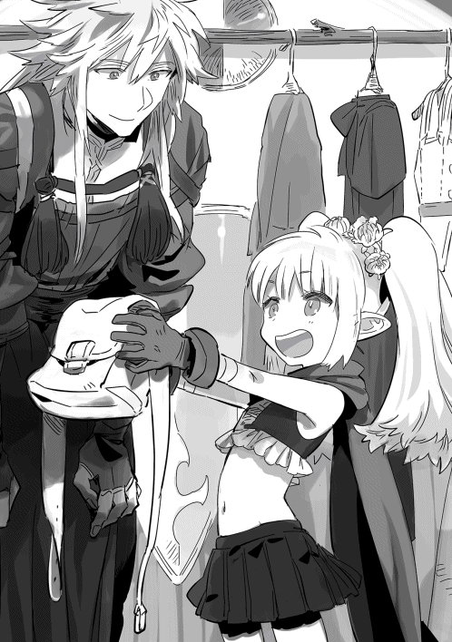
買いました。菊姫に修理のための糸二十本分二〇〇シルを支払い、さっそく端によって修理してもらった。武器防具もまだだというのに所持金が一万シル切りそうだ。あの武器屋で見た杖七五〇〇シルだったな。色々足りない気がしてきた。
初期のアイテムポーチと入れ替わるのかと思っていたら、アイテムポーチの隣の空きスロットが一つあって一緒に追加装備できた。初期の方は耐久の表示がないので壊れることがないのだろう。武器防具も初期装備は耐久値が設定されていない。壊れることがないなら大事なものはこちらに入れておけということだな、と納得した。
「菊姫ありがとう」
「どういたちまちて～、でもお金がやばいでし」
「同じく」
二人で笑って、その後は買わないと決めて一緒に店の冷やかしを楽しみ、待ち合わせ時間が近づいたので移動する。まだ皆戻っていなかったので、昨日買ったベリージュースを菊姫に渡して二人で飲みながら待った。
工匠区は北東の区画にあり、広場から二キロ以上歩く。まず露店からの入り組んだ細い路地を抜け、馬車の走れる通りに出て右に向かう。百メートルほど先には商業ギルド、冒険者ギルド、宿屋のある四辻が見える。マップを出せば、初めての狭い路地も迷うことはないので便利だ。てくてく歩きながら露店の戦果について話す。
「つい【料理】をとってしまった」
「こっちでも食い意地はるでしか」
「わはは、じゃあこれをやろう」
【料理】を取ったことを話したらレオが昨日釣った『ヨルマス』という魚をくれた。記念すべき一匹目の釣果をくれるとは......後で焼いて返そう。
集合時間を決めて、それぞれ工匠区を見て回る。最初は職業的に近いお茶漬と一緒に見て回っていたのだが、短杖専門工房を見かけてその中へ消えてゆくお茶漬とは途中でわかれた。ここの工房は本当に様々だ。武器ならなんでも作っていたり、一定のランクまでの武器しか扱っていなかったり、それこそ長杖しか作っていなかったりと工房ごとに様々な特色がある。いや、特色のない工房もある、とにかく様々だ。長杖専門を覗いてみたが、どれもこれも広場の武器屋で見た杖ほどではない。性能はよくても値段が可愛くなかったり、両方イマイチだったり。
狭い入り組んだ路地を歩いていると、だんだん方向感覚が怪しくなってくる。まあ、マップを開けば待ち合わせ場所に戻るのは容易なので気にしないことにしよう。今はマップを閉じて散策と風景を楽しんでる。
両側の家屋の壁の迫る狭い路地。ところどころ路地をまたぐ家同士をつなぐアーチ。工房の二階が住居になっている場合も多いらしく、洗濯物や壁を這う蔓バラや葡萄が時々現れる。狭い空間で緑を手に入れようとすると蔓性の植物に偏るのだろうか？ そんなことを考えていると、すっかり工房を覗くことを忘れ、自分好みの路地の風景を探して歩いていた。
我に返ったのはローブ専門みつけた～というお茶漬からのメールのおかげだ。工房を無視して大分奥まったところまできてしまった、真面目に探そう。
そこにメールがもう一通。予想外にガラハドからだった。中身は酔っ払って意味不明に近いメールを夜中に送ったという内容の軽い謝罪だったので、気にしていない旨、返信した。
さてこの路地は、左右は壁だけで工房への出入り口は見当たらない。路地を見ていたので気にしなかったが、工房の入り口の向いている通りからも外れて、だいぶ来てしまったようだ。工房を探すルートとしては一本隣の道が正しかったのだろう。隣と言うには入り組みすぎているが。開けっ放しの中から怒鳴り声などがする場所は避けて、どちらかというと蔦に覆われた裏口の木戸を求めていた結果がこれである。
ここまでくると、先に進んでこの路地を抜けた方が早いだろうか？ 戻った方が早いだろうか？ マップを開くのが早いな。
マップを開いたら私の前に道はなかった。なんだここは、獣道扱い!? ためしに歩くと歩いた分だけ建物表示の真ん中に道ができた。たぶん貰った地図とかだと、基本的な国や街の整備した道、国に認知された道しかマップに出ないのだろう。普通の地図に隠し通路とか表示されていたら、隠し通路ではないものな。
路地は行き止まりだった。突き当りには三段の短い階段と木造に黒い鉄の鋲を打った小さめの扉があった。扉の左右に階段の幅だけ地面が露出し、右から沙羅っぽい細い木がひょろりと古びた扉の上に枝を投げかけ、左からは葡萄の蔦が扉の側面から上に回り込むように壁を覆っていた。
いい、とてもいい！ いい雰囲気の風景に一人テンションマックスになっていると扉が開き、出ようとした男とバッチリ目があった。恥ずかしい！ だがしかし！
「すみません、ＳＳ......写真を撮らせてもらっても？」
「撮ってどうするんだ？」
凄んでくる老人。怖いと思う前に露店の老人を思い出した。露店の老人よりわずかばかり年上な気がするが、老いてなお背筋は伸び頑健な体をしている。
「時々眺めてニヤニヤする」
よそ事考えてたせいで、正直過ぎる答えを返してしまった。ＳＳと写真どちらが通じたのか。
「......衆道か、貴様」
ものすごく嫌そうな慄いた顔で言われた。衆道とはまた古風な、じゃなく。
「いや、扉だから。この路地の風景だから。貴方じゃないから！！！！」
あわてて誤解を解いた。いや、いい感じのじーさんなので老人ＳＳ集めてもいいが。
「客でもないのか、すまん」
「客？ 何か取り扱ってるのか？」
「......もう廃業した」
「まだまだ元気そうなのに勿体無い。でも悠々自適でゴロゴロするのもいいな、貴方には似合わんが」
衆道の古風な言い方のせいで浮かんだのは某時代小説で、その主役は小柄な老人だ。体躯豊かなこの老人ではイメージが違うのだが、何故か印象が重なる。
「似合わんか？」
「似合わないな、早朝に剣の素振りでもやってそうなイメージだ」
「わかるか」
吃驚した顔でこちらを見てくる。
やってるのかよ！！！！
「おい、お前。名前は何と言う？」
「ホムラだ」
「そうか、オレはルバだ。ホムラは魔術士だな？」
少し残念そうに言われてしまった、あれか物理か？ 脳筋好きか？ 私は体育会系とは程遠いぞ？
最初は気難しげにどんよりしてたのに寧ろ今は快活な老人だ。短い間にいったい何があったのか？
「ゆくゆくは魔法剣士になりたいのだが、まだまだ先だな」
「ほう、剣が欲しくなったらオレに言え、刀ならもっといい」
「唐突だな、刀鍛冶なのか。だがわかった、ありがとう」
違った、筋肉スキーじゃなかった。後ろに一房だけ、十センチほど伸ばした髪を束ね、あとは短髪白髪頭のガタイのいい老人。正体は鍛冶屋だったか。
営業しているわけではなさそうなので、菊姫に教えてよいか聞いたらそれは止められてしまった。しばらく話をして、腕のいい長杖工房を教えてもらって別れた。
そして、ようやくやって来ました長杖屋！
そしてなんと、武器屋で見た杖の製作者のいる工房でした。家族でやっていて息子が見習いになったところらしく、あの杖がはじめて売りに出した杖だそうだ。遠回りすぎる。
「おや、では武器屋に戻って買おうか。親父さんの杖は正直いって予算が厳しいのでな」
「気に入ってくれたの？」
「ああ、あの杖を基準に探していたんだ。工匠区であれより能力がよくて値段が安いものがあったらと、なかったら戻ってあの杖を武器屋で買うつもりだった」
ちょっと視線をそらしてはにかむ少年、十六歳だそうだが、小柄な身体と淡い金髪のせいでもっと年下に見える。男率高かったので、いっそ美少女に見えるくらいだよ!!
「ちょっと待ってて！」
そういい残すと奥へ消えて、戻ってきた時には一本の杖を抱いていた。
「これ、よかったら使ってくれないかな？」
差し出された杖は武器屋で見たものと性能が一緒だった。見た目が多少細くて白っぽいのが違いか。
「僕の手に合わせて細くしすぎちゃったんだけど、はじめて父に売り物になるって言われた杖なんだ。記念に取っておこうと思ってたけど......」
「うれしいが、使うからには壊さないと約束できない」
「杖もきっと使ってもらった方が嬉しいよ！ そのために生まれてきたんだもの」
だから遠慮すると続けようとしたところに、次の言葉がかぶせられた。
王道な職人受け答えだなおい！ 物語として読むだけならベタな展開と読み流すところだが、目の前で真剣に言われると、この駆け出しの職人の気持ちを大事にしたくなる。
「わかった、ありがとう。大事に使うよ」
七五〇〇シルを差し出す。サイフに痛いけど、ここは出さねば男がすたる。
「僕から言い出したんだし、貰ってよ」
「これには材料費だって技術料だってかかってる、タダはダメだ」
相手がプレイヤーからならともかく、住人のこれは生きてゆくための仕事だ。余裕のある大店の者からならともかく、駆け出しのこの子からタダでもらうのはよくない気がする。
「じゃあ、五〇〇〇シルで。その代わりまた僕に作らせて！」
「わかった」
少年から杖とパートナーカードを貰いました！ 一人前の職人として踏み出したばかりの夢と希望でいっぱいの姿。がんばれよ、少年。
ユリウス少年のいる工房は、杖・本、魔法武器全般を扱っており、定価であっても良いものなので、お茶漬にもメールで知らせたのだが、すでに短杖専門の場所で購入済みだった。何せ時間ギリギリだったのだから仕方がない。
その後、待ち合わせの時間に遅刻しそうになりながら、お茶漬に教えられたローブ屋に駆け込んで四〇〇〇シルのローブを値段買いし、みんなと合流して辻馬車で広場まで戻ってきた。辻馬車はいくつか往復するコースが決まっていて、一律一〇〇シルだった。早くて楽だとみんなが喜ぶ中、私はひそかに酔っていた。くらくらして気持ちが悪い。まさかゲーム世界でも酔う体質とは。
みんなは服や武器以外にも靴を買ったりアクセサリを買ったりしていて、戦利品を見せ合っている。買い物は改めて金が溜まったら、時間の合わないソロの時にでも行こう。
ペテロはあの短い間に迷子を送って、送った先の被服店で感謝のキスをもらっていた。幼女の。
「やはりロリコンだったのか」
「ロリコンか」
「ロリコンだな」
「ロリコン!!」
「身の危険を感じるでし」
「まて！ 貴様ら!!」
レオは工房の親父に気に入られたらしく、なぜか鍛冶見習いで弟子入りしてた。行動が斜め上すぎる。
昼を少し過ぎた時間のレストランは、昨夜程ではないものの混雑しており、私たちは広場のベンチに腰掛け、口の広い素焼きの壷に蓋の代わりに楕円形のパンが乗せられたものを、レストランの野外食売り場で購入して食べている。壷の中味はブループのテイルの煮込みで、味は牛肉だ。壷の中味を千切ったパンですくってパンごと食べる。なかなかパンの配分が難しいが、旨い。
ＥＰが減る暇が戦闘中しかない生活をしています。
「さて、じゃあ、装備新しくしたところで狼リベンジ行く？」
そういうことになった。
「【スラッシュ】でし！」
灰色オオカミが光となって消える。
《灰色オオカミの毛皮を手に入れました》
《灰色オオカミの牙を手に入れました》
「途中【遠吠え】しようとしたの止めたけど、あれ攻撃何がくるんだろう？」
スライムの粘液の体験からか、ペテロは敵のスキル発動を阻止できる【仕手】を取ったそうで、ただいま練習中だ。【遠吠え】は止められたが、その前までオオカミが使っていたスキルを止めるのはすべて失敗している。
タイミングがかなりシビアで、敵の使うスキルごとにも違うらしい。しかも当たっても発動する確率は一〇〇％ではなく、自分より格上の敵相手にはかなり低くなるそうだ。当たって発動しなかった場合はあるか無しかのダメージがでるので、傍目からも判別はできる。
「威圧で動けなくなるとかでし？」
「ネズミ算改め、オオカミ算。オオカミ増量サービス」
「オオカミ増量キャンペーンなら応募してもいいかな」
昨日は命からがら逃げ出したオオカミ相手にこうである。初遭遇からレベルも上がり、装備は一段階どころではなく良くなっているので、当たり前と言えば当たり前なのだが。
「じゃあ、攻撃参加するからオオカミ呼んでもらおうか」
「わはは！ 威圧の方だったりしてな!!」
オオカミ増量の方でした。
お陰でレベル10になった。三匹同時は楽勝で、五匹になると菊姫のダメージの回復でお茶漬にタゲが移ってしまって、危うくなる場面が出るのだが、五匹になる前に減らせば問題なく、何か失敗して五匹目を呼ばれそうになっても【遠吠え】は止めやすいのか、ペテロの【仕手】が大活躍だった。
スキル【知力強化】【水魔術】【木魔術】【気配察知】【気配希釈】のレベルが上がった。【木魔術】はレベルが８になったところでとったのだが、今までの魔法のように当ててすぐダメージというものではなく、足止めをする『蔦』や、敵に十秒毎にわずかだがダメージを与えつづける『葉』などを覚えた。まだレベル２なのでこの二つしかわからんが、増えるのは補助系の魔法なのかもしれない。こうなると【土魔術】も気になるところ。あとＳＰ７あるし、思い切って【スキル鑑定】とセットで取った。【土魔術】の最初の魔法は『泥』で効果は暗闇。
【土魔術】を覚えて戦闘後、【風魔術】がリストに追加された。初期以外にも魔術はあるのか、光とか闇もありそうだ。【風魔術】の必要ＳＰは２、当然覚えた。
「そう言えばここ、人が少なくないか？」
休憩中にシンがマンガ肉をほおばりながら不審げにいいだした。何処で買った。
「あー、他は西門の先でゴブリンと戦ってるらしい。ゴブリンだと低確率で装備強化に使う魔石が手に入るんだってさ」
掲示板をよく見ているお茶漬が答える。
「へー」
「そう言えば、Ｅランクの常時依頼もゴブリンだったな」
焼き串を食べながら答える。焼き串ではＥＰの回復量が不足になってきた。祭りの出店マジック的な効果が消えると味も濃いめでイマイチ......。ちょっと高いがレストランの飯を買うかな。
「失敗もするけど＋10まで修理屋で鍛えられるって」
「どんな失敗でしか？」
「耐久の基礎値が下がる。十回失敗すると壊れるって」
壊れるまでいかなくても、耐久一〇〇／一〇〇から一〇／一〇とかになったら一戦毎に修理しないといかん気が。いや、むしろ一回で壊れるのか。強化、怖いな。
「それはまたレオとシンが好きそうだね」
「ギャンブルだな！ わははは」
「まあ、混んで敵の取り合いだろうし、出にくいなら宿屋ボーナスがある時間帯の方がいいかな」
「だな」
オオカミ狩りを再開して、暫くすると真っ黒いオオカミがいた。今までの灰色オオカミと違い、最初から灰色オオカミのお供を連れており、間違いなく灰色オオカミより大きい。
「なんか強そうなのがいる」
「シンの先輩なんじゃないか？ 後輩から一言いってやって」
「あそこまで大きいと迫力でし！」
「菊姫最小だしな」
男で最大近い私の二倍近く大きい気がするぞ、黒オオカミ。
お供は四匹、レベルが二つ上がったし大丈夫だとは思うが、黒いオオカミの強さがわからん。だが、せっかく見つけたのでやることにした。ポーションを飲んだりしてＨＰ・ＭＰ・ＥＰをフルにする。
「逝くでし！」
ちょっとニュアンスが違いませんでしたか今!?
戦術は菊姫がタゲを取った後、黒オオカミに挑発を入れて他を一回ずつ叩くのに合わせて私が『泥』をかけて行く。【暗闇】にかかって目の見えなくなったオオカミ達は攻撃にミスがでるので、菊姫に集まるダメージ負担が軽減されるのだ。
黒オオカミには『泥』は効かないか効きづらいかなので、『葉』をかけてとりあえず放置。菊姫の殴っている灰色オオカミへの攻撃に参加して一匹沈めると、『泥』の効果が切れかけるので先ほどと同じ手順でかけ直す。
一匹沈めると残った三匹のうち二匹が【遠吠え】と【空吠え】をして、新しい一匹を呼ぶ。【空吠え】を使う方に攻撃──【仕手】を当てると【体当たり】を食らう。数が減らない。灰色オオカミの時だけのように二匹呼ばれないだけマシだが。倒すと増えるお供を無視して、黒オオカミを先にやろうとしたら、倒さなくても一定時間経つと【遠吠え】と【空吠え】を使ってきた。
そこへ黒オオカミの【咆哮】で恐怖にかかり全員の動きが阻害される。すぐに動けるようになったが、攻撃や使用していたスキルが解除された。それによりタゲを取っていた菊姫でなく攻撃が私に飛んで、一撃でＨＰが半分にされた挙句、『出血』という状態異常がついてＨＰが少しずつ減ってゆく。
私、そんなに防御力が無いのかとあせったが、【咆哮】の次に来る黒オオカミの攻撃はランダムで、他のやつらも必ずＨＰが半分持って行かれていた。そういう攻撃なのだろう。【咆哮】はお供にも強化がかかるらしく、灰色オオカミの攻撃力も増大する。
寧ろ【咆哮】の次の攻撃が菊姫に当たった時が厄介で、ＨＰ半減を回復前に強化された灰色オオカミの攻撃が集中してクリティカルが発生すると流石に危うい。
「ちょっと【体当たり】食らったあと、黒狼のこれ食らうのやだなあ」
ペテロの方もぼやいている。
灰色オオカミが仲間を呼ばなくなるまで頑張れば勝てそうではあるが、酷い消耗戦になりそうだ。
お茶漬は、菊姫の回復をしながらＨＰ半減と出血で減ってゆくみんなの回復で大忙し。全員のＨＰを半分以上に保っていないと【咆哮】が来た時に死ぬ。
「これ、もうちょっと攻撃力上がって、灰色一匹倒す時間が短くなれば楽なんだけどね」
「ちょっと倒すタイミングが遅いと仲間呼ぶタイプはきついね」
お茶漬とペテロが戦況を分析。今回は分析というほどでもないかもしれんが、相変わらずこの二人は戦闘は理詰めなんだな、と思いつつ灰色狼を眺める。その理詰めはレオがぶち壊すんだが。
「ん？ 【遠吠え】前に後ろ足で軽く地面を掻いてないか？」
もふもふ不足の尻尾が揺れていて見づらいが。
「ＯＫ！ 任せろ！」
《灰色オオカミの毛皮×20を手に入れました》
《灰色オオカミの牙×18を手に入れました》
《灰色オオカミの血×６を手に入れました》
《黒オオカミのを毛皮を手に入れました》
《黒オオカミの牙を手に入れました》
《黒オオカミの魔石を手に入れました》
《土魔術がレベル２になりました》
《スキルリストに【恐怖耐性】【止血】が追加されました》
黒オオカミはシンの四連コンボで光になって消えた。灰色オオカミを全部倒した後は早かった。
火力のある拳士はカッコいいが、仕事をするシーフも格好良い。
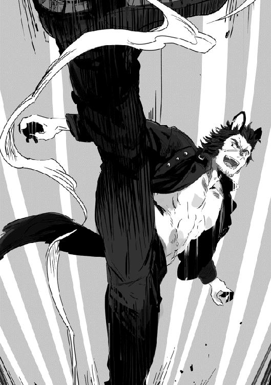
「キツかったけど、スライムよりストレス無くていいかな」
「オレも【仕手】とるかな」
「ＥＰ回復薬とかないかな？ 戦闘中に食べるの大変だった」
「あったら欲しいでし」
「同じく〜」
美味しいものもぐもぐしようよ、美味しいもの。
夜になった。
ただいま再び戦闘中。場所は角ウサギがいた浅い森だ。交戦しているのは蝙蝠。基本攻撃の当たる低い位置にいるのだが、時々大きく羽ばたき届かない位置に留まり【吸血】というスキルを使ってくる。効果は定番のこちらにダメージ、あちらに回復だ。
私の魔法とお茶漬、シーフ二人組の投擲は届くので、蝙蝠が上にいる間はシンと菊姫がポーションで回復にまわる。
一戦終えたところで菊姫も【投擲】をとった。シンはＳＰが無くて、その後もコウモリが上に行ったら回復役だ。二戦目が始まる前にポーションをシンに渡しておく。
物理って大変だなーと思っていたら、【風魔術】の『突風』で、確実ではないけれど下に落とせることが判明。コレといい【仕手】といい、色々な職業がいると戦闘が楽だ。
「うーん、飛んでる敵対策を今の内にとれってことかねぇ〜」
シンがでかい手で不精ヒゲを撫でながら唸っている。
「菊姫とダメージ比べて思ったけど、投擲は純粋なＳＴＲ依存じゃなくＤＥＸ入ってるっぽい」
「そりゃ、シーフの初期スキルですし」
お茶漬の考察にペテロが答える。
「私も魔法耐性がある敵が出てこないうちに物理をなんとかしよう」
【金魔術】じゃダメかな。ダメだな、詠唱阻害とかありそうだし。沈黙とか。
「コウモリは効率悪いな～。そろそろいい時間だし、宿に戻ろうか」
「だなー」
お茶漬の言葉に同意する。現実時間二時、流石に寝なければ明日の仕事に影響する。
こうして私の一日目が終わった。
ホムラ Ｌｖ．10 Ｒａｎｋ E 職業 魔術士 薬士
ＨＰ：２１４ ＭＰ：３４７ ＳＴＲ：10 ＶＩＴ：11 ＩＮＴ：40 ＭＩＤ：14
ＤＥＸ：9 ＡＧＩ：10 ＬＵＫ：10
ＮＰＣＰ【ガラハド】【－】
称号【交流者】
スキル（２ＳＰ）
■魔術・魔法
【木魔術Ｌｖ．２】【火魔術Ｌｖ．４】【土魔術Ｌｖ．２】【金魔術Ｌｖ．３】【水魔術Ｌｖ．３】【風魔術Ｌｖ．１】
■生産
【調合Ｌｖ．１】【錬金調合Ｌｖ．１】【料理Ｌｖ．１】
■収集
【採取】
■鑑定・隠蔽
【道具薬品鑑定Ｌｖ．２】【植物食物鑑定Ｌｖ．２】【動物魔物鑑定Ｌｖ．３】
【スキル鑑定Ｌｖ．１】【武器防具鑑定Ｌｖ．２】
【気配察知Ｌｖ．２】【気配希釈Ｌｖ．２】
■強化
【知力強化Ｌｖ．２】
■その他
【ＭＰ自然回復】【暗視】【地図】
仕事から帰って夕食風呂を済ませてログイン。
時刻は九時半、色々手を抜いて急げば九時前には入れたけれど、そこは大人、自重した。昼間のうちに友人たちは見たことのないエリアで、見たことのない敵と戦ってレベルが上がっていることだろう。そう考えると焦燥にかられるが、仕方がない。
意識がこちらの世界に落ちる前、ワールドアナウンスの不具合の修正をした旨、メッセージが流れた。イベント開始や戦闘開始と被るとワールドアナウンスが流れない人が居たらしい。今まで流れたワールドアナウンスは一覧から確認できるとのこと。
ログインすると、こっちの世界は夜中だった。
如何するかベッドの上で考える。友人たちは休憩中の様だ。隣のベッドにペテロが寝ているが、フレンドリストは灰色、ログインすれば名前が白くなる。この分なら、この後のみんなとのログアウト休憩はそんなにずれはしないだろう。ログアウト中ってキャラ残るんだな、どうりでログアウトが宿屋推奨なわけだ。
何とはなしに見ていると、かけられたシーツが小さく上下している。芸が細かい。これでレオがいびきをかいていたら完璧か。そう思って奥のベッドに目をやると、いびきはかいていなかったが、腹を出してすごい格好でレオが寝ていた。私の寝相は大丈夫だったろうかと不安になる、いや、シーツも着衣も乱れてないから大丈夫だろう。ああ、寝巻きも買わねば。
さて夜だし、外に出ずに生産に手をつけてみよう。宿から離れるのでログインの挨拶メールをとりあえず全員に送っておく。生産の前に昨日の灰色オオカミ素材をギルドでシルに替えなくては。ああ、剣のスキルを出すために剣も買うべきか。露店の老人の店を探すには流石に無理な時間だな。
やりたいことが目白押しだ。
そういうわけでやって来ました、生産材料屋兼・生産施設貸し出し所。
生肉を持ち歩いているのもどうかと思うので、とりあえず料理から。露店で買った調理道具もあるけれど、ある程度のレベルまでは生産施設の方が断然効率がいいとお茶漬から聞いている。
生産に関しては最初はレベル上げの作業と割り切ろうと思い、私も普段ほかのゲームでも滅多に見なかった掲示板を見ることにした。
料理スキルは露店の手伝いで取得した人と、ここで設備を借りて一度調理してから戦闘して取得した人がいた。前者は住人に気に入られるか、住人が困っているところにうまく遭遇せねばならず、後者は金はかかるが早いということで、掲示板に書かれてからは断然後者の方法をとるプレイヤーが増えたそうだ。スキルが出るのは該当する行動をとった戦闘後で間違いないようだ。そして私は困っている店主を助けた前者だな。うん、助けたよな。
【料理】がレベル10になればレストランで料理人に転職できる。要件を満たせば他の生産職も、それぞれのギルドや関係のある場所で転職可能。戦闘職は、初期は神殿でもいけるらしい。神殿ではメインとサブ職を交換することも可能だ。メイン職はレベルアップの時に上がるステータスに影響する。戦闘職は魔術士ならＩＮＴが、シーフならＤＥＸとＡＧＩが、生産職ならばＤＥＸと職種に関わるステータス、例えば鍛冶はＳＴＲが上がる。
要するに、その職業にあったステータスが伸びるので、早めにメインの職業は決めておいた方がいい。私も転職レベルは満たしている。やることが増えた、剣士になってスキル取らなくては！
生産スキルは生産が多種多様。一つの物を作るために複合して多数のスキル使う場合があるため、スキルの取得はゆるい。ＳＰを消費せず、ダイレクトに覚えるものが多いそうだ。
戦闘職と生産職を必ず一つずつ取らねばならないことからわかるとおり、このゲームは戦いながら生産もそこそこできるようになっている。逆に言うと、生産しながらでも戦闘がある程度できるので、レベルが上がってくるとわからんが、ある程度は素材の自力調達が可能だ。
料理は『基本レシピ』と『レシピ』が存在し、『基本レシピ』に沿って材料を集めて、調理すると【焼く】などの『調理方法』が取得可能で、『基本レシピ』以外の【焼く】料理ができるようになる。
『レシピ』は『調理方法』を覚えた後に、現実世界で料理ができない人でもこれがあればバッチリな料理本兼・作った料理を記録し、材料さえそろえれば同じ品質で作れる料理メモだ。
覚えた『調理方法』で作った新しい料理は、一度作れば『レシピ』として登録される。レシピのない、一度目だけは設備を使い手作業で作る必要があるが、料理が苦手な人向けに基本レシピ外の単品レシピも販売がある。手間のかかる料理はいっそレシピを購入してしまった方が楽だろう。
『基本レシピ』１から５は生産施設の中でも購入可能とのことなので、取り敢えず一時間だけ部屋を借りて中に入る。
中は使いやすそうなキッチンで、流し、まな板、オーブン、ガス台、それとは別に網焼用の炭火焼きグリル。熱を持たせないための大理石の調理台、逆に皿を暖めるための設備まで。使いこなせる自信はまったくない上に、見たことのない設備まである。
『基本レシピ１』を購入。レシピを使うと【鑑定】した時にメニューにできていた『図鑑』の下に、料理レシピの項目が増えた。さっそくレシピを見てみると、ベリージュース・オレンジジュース・グレープジュースが載っている。
『基本レシピ１』の値段は一〇〇シル、それぞれのレシピの数字の一〇〇倍が価格のようだ。灰色オオカミの毛皮を売り払ったために所持金が一五〇〇〇シル以上にまで回復したので問題ない。狩り前は本当に一〇〇〇シル切りそうなぐらいだったのでほっとした。
ベリーは沢山あるので先ずはベリージュースから手をつけることにし、材料を確認して足りなかった水を買い足す。露店で買った調理用の水があるけれど、ランクは下がるがもっと安く水が売っていたので量産用に。
そういえば料理はスキルが無くてもできる、が、評価３以下だそうな。私とペテロの作った肉を挟んだパンはスキル持ちの店主ジョスが手伝って、ジョスの作ったものと判断されたのか？ 味があって幸いだった。評価１は腹を壊すそうだ。危険危険。
さて作り方だが、レシピを見て材料のベリーが二つ、水が三つ持ち物にあることを確認します。【料理】します。ベリージュースが三つできます。以上。
流し台とかミキサーとか設備は飾りです。『基本レシピ１』にレシピが載ってるからな！
設備は在るだけで生産効率をあげてくれる。いや、手作業で使っても作れるけれど結果はそう変わらない。少なくとも今のレベルでは。肉は網で焼いてみたいがな！ そういうわけでどんどん量産しよう。
住人の生産物は料理に限らず評価４。プレイヤーの作った料理にはランクの他に10段階評価がついて「普通」にあたるのは住人の評価と同じ評価４だそうだ。『基本レシピ１』に載っている料理のランクは低いので、４から５、稀に評価６を出しつつ作業を進める。
当たり前だが作るもの、扱う素材のランクが高いほど失敗しやすいし、失敗しないだけの技量があれば、使う素材のランクが高いほど、評価が高くなる傾向がある。ただし、職レベルによって扱える素材のランクが決まっている。私は料理人ではないので、すぐ限界が来るだろう。
評価が高くなるとＥＰ回復量がその食品の基本値から増えたり、味も美味しくなる。逆に１から３は不味くなり、評価１に至ってはバッドステータスのおまけがついた上、製作成功とはみなされず経験値も入らない。なので、ランクが高い方が製作した時に入る経験値はいいが、自分の実力に見合わないものを作って失敗しては意味がない。そして住人に売り払う価格も評価１から３は安くなってしまう。評価７でも４と売値は変わらないくせに、失敗だけは安くなるのだ、おのれ！
ベリーはたくさんあると思っていたんだが、まったく気のせいだった。あっというまにベリージュースに変わった。さらに買い足し生産。
水もベリーも２シル也。ベリージュースは露店で５シルで買ったが売値は４シル。一〇シルで三つできるので、ＮＰＣに売っても一応儲けがある。初期レシピなので得られる経験値は少ないのだが。
次はオレンジジュース。オレンジと水を購入、『基本レシピ１』はどれも材料は二種類必要で一回に三個の料理が作れる。次はグレープジュース、食品のランクがベリー、オレンジ、グレープの順で、グレープジュースはベリージュースより評価が低いものがいくつか混じった。
《【搾る】を習得しました》
《以降『基本レシピ』外の【搾る】料理がつくれるようになります》
《レシピ１が終了したことにより、【得意料理】と関連する『レシピ』を取得しました》
【得意料理】は『得意な調理方法』もしくは『得意な素材』が登録され、それには評価＋２の補正がつく。レベルに合わない高ランクの料理でも、最低評価の１から＋２されて評価３になるのだからすごい。もっとも、あまり不相応な料理は、扱える素材ランクの壁で作れないのだが。食べることは大好きだが、冒険と戦闘も大好きなのでメインは戦闘職、サブの生産もポーション類の作れる薬士のまま行くつもりだ。
上位職を生産職にしている人には敵わないだろうが、評価10は難しくとも得意料理ならばそこそこ高い評価の料理が作れるだろう。【得意料理】は最初に食べた料理が『串焼き』なら【焼く】か『肉』の『調理方法』か『素材』のどちらかが【得意料理】として出る。幾つか食べても出るのは一つだけで、食べないまま【得意料理】を取得すると【焼く】か『肉』になる。串焼きは安いし多くの人が初めて食べる料理ということでデフォ設定にされているのだろう。と、これは掲示板の考察。これから始める人は【得意料理】が自分で選べて羨ましい。
さて私の【得意料理】は何が出たのか。順当に行けば最初に口に入れた『茶』とか茶を作る工程の何か、【ブレンド】とか【抽出】とかなんだろうか。
調理方法
【抽出】【発酵】【混ぜる】【焼く】【炒める】【揚げる】【燻煙】【乾燥】【醸造】
素材
『茶』『酒』『肉』『魚』『穀物』『野菜』『卵』『乳』『木の実』『果物』
はい？ 一個だけって聞きましたが？ たくさん出てるぞ？ なんだこれは？
茶はわかる。他は何故だかさっぱりわからず、一人眉間にしわを寄せて考えたが、諦めて追加されたレシピを見た。確か食べた料理そのままがレシピになるはずだ。『ハト麦茶』『ビール』『トビウサギのロースト』『フライドポテト』......うん、トビウサギのローストにサラダとパンもついていた。『調理方法』と『素材』が両方出ているのはなんだ？ あとはどう考えてもガラハドのつまみのような気がするのだが。燻製卵・干し魚・チーズ三種・ナッツ・ドライフルーツ。『穢れのない騎士』の話の間は脇に寄せていたが、飲む気満々だったのかつまみが豊富で、話の最中、自分はほとんど口をつけないのに私に勧めてきたので、興味もあって味見させてもらったのでよく覚えている。
レシピの料理名で見ると、得意料理と対応しているものは判明したし心当たりもあった、何故こんなに覚えたか謎は残ったままだが。
再び掲示板に目を通すと、住人から試供品を貰ったとか、パーティーで食べたとか、住人に奢った、という人の中に、『調理法』と『素材』が両方出た！ という人や二種類食べて『調理法』が二つ出た！ という人がいた。よくわからんが、私はガラハドチートなのか、これ？ 自分が得しているのでいいならいいのだが。いいのか？
【得意料理】に付随したレシピの、ビールとチーズと燻製卵とドライフルーツ・干し魚が終わりません。当たり前だ、すぐできるものじゃないだろ、これ！！！
レシピから作ると他のものはローストで少しタイムラグがあるくらいで、レシピから選んだ後、ほぼすぐに終わる。だからビール等も現実世界よりはるかに短い時間でできるとは思うのだが。
と言うわけで、メニューの中のレシピは、チーズが発酵中、ビールが醸造中、燻製卵が燻煙中、ドライフルーツと干し魚が乾燥中で、一定間隔で表示が切り替わるのを繰り返している。他は無事に終わり、ローストで【火加減】がスキルに追加された。
その後『基本レシピ』を一通り作り、評価を気にしなければ一応全部作ることに成功した。レシピ４と５では評価３から４、あからさまに得意料理補正で、ギリギリできている感じだったが気にしない。『基本レシピ』で追加された『調理方法』は結局、【搾る】【ゆでる】の二つで、あとは得意料理というチートっぷり。【料理】はＥＰを消費しながら作るのだが、スキルに出た【火加減】はＭＰを消費した。
レシピ５はちょっと変わっていて『サラダ』『練り餌』『ハンバーグ』だった。得意料理ですでに【混ぜる】は取っていたが、レベル上げも兼ねて全部作った。エサはたぶん、釣りのエサと思われるものができた、あとでレオにやろうか。
ナッツローストで覚えた【焼く】で肉を焼いて、ステーキレシピを覚えた！ 『基本レシピ』１から５までには【焼く】がなかったが、【焼く】と『肉』の両方の補正がかかるらしく、評価は５だ。肉スキーのシンにやろう。【火加減】はレアだな。私はミディアムだが。
余った時間はポーチの中の肉をステーキにしてみたり、フライドポテトを揚げたり。持ち金を戻すのにレベル上げ方々、生産できないかと原価の計算をして全部赤字だったので、延々ベリージュースを生産して減ったシルを元に戻したり。
レオの魚はランクが高すぎて焼けなかった。本当にレアなのだろうこの魚。生魚という意味じゃなく。釣り掲示板見に行ったら『ヨルマス』なんて魚でていなかったぞ！！！！
あと、同名のレオって人がレアな魚を釣って、ワールドアナウンスが出たそうだ。レアの中にはヌシと呼ばれる時間、場所、天気等、条件が合えば出現する特殊な魚がおり、初めて釣ると特典があるらしい。レオという名は釣り好きなのか？
料理をしていたら、お茶漬からメールが来て、そろそろみんな起き出すから宿屋の食堂に来いと呼び出しがかかった。
私はすぐ行くと返事をして、初期の料理などＥＰ回復量が足りないものを売り払い、荷物を整理して生産施設を出た。調薬も行うつもりだったが、つい料理設備レンタルを延長して熱中してしまった。
お茶が美味しく淹れられるようになったのが嬉しい。
生産材料屋から外に出ると、西に黄色く輝く月とその大分遠くに小さく白く輝く月が見え、振り返れば建物の屋根の上、東の空がうっすら白いような、紫色に見える。そろそろ夜明けが近いのだろう。こんな時間だというのに広場は行き交うプレイヤーが大勢いる。私もその一人であるし、冷静に考えれば現実時間で二十二時くらいなのだから混むのは必然なのだが、この世界がリアルすぎてついこんな時間なのに、と、この世界の時間で思考してしまう。
移動しつつ、【気配察知】と【動物魔物鑑定】に勤しむ。鑑定は同意を得ないまま行っていることに多少ながら罪悪感を感じるが、結果を見ないまま流しているから許せ！
ゲームによっては、装備の参考にキャラ情報を見たりするのは普通のことだったりする上、お茶漬曰く、掲示板にスキル上げのために紹介している方法とのことで、多分多くの人がやっているのだが、ここは本当にリアルすぎて勝手にプレイヤー名を見るだけでもちょっと気になる。だがレベルも上げたいので割り切ることにした。
一番混雑するギルド前を抜けて、宿の食堂へ向かう。そういえば、この宿もギルドと同じくこげ茶の床板と柱、白い壁だが、装飾がほどこされギルドより華やかに見える。壁には灯りと灯りを反射する鏡が交互にかけられ、廊下は思ったよりもはるかに明るい。
「おー！ きたきた！」
レオが食べるのを止めて手を振ってくるのに振り返して、朝食引き換え用の木片を入り口で渡す。
「待たせた」
空いている席に着くと、短く挨拶する間、すぐに朝食が配膳された。
本日の朝食は、小さめだが厚切りのトーストにジャム、サラダ、チーズ三種、ハム三種、オレンジジュース。火を通さないものが中心のコンチネンタルブレックファースト。真っ白なテーブルカバーに並べられた料理が映える。
まだ食べるのかって？ もちろん食べるとも。途中の鑑定でＥＰ減ったし。
「レベルいくつ上がったんだ？」
現実時間の朝からぶっ通しでやっていれば、この世界で三、四日過ごしたことになるのだから、かなり差が付いただろう。
「14になったぞ～」
４レベル差か、あとシンは口の中のものを飲み込んでから話せ。
「アタッカーが減ってちょっと効率悪かったね」
ありがとうペテロ。
「ホムラ、レベル10あるよね？ 全員転職でして戦闘しようかって話になってるんだけど」
美味しいものをちょっとずつの男、お茶漬が提案してくる。小食な割りに頼む種類が多く、残していることも多いが、皆に釣られて全部食べて動けなくなっていることも多い。
「私に合わせなくてもいいぞ。この先もログイン時間はずれるだろうし、私の休み中にレベル追いつくだろうし」
これまでのゲームでもお茶漬以外は、むしろ私のレベルの方が高いことが多かった。初日の昨日はともかく、レオと菊姫は寝る時間が私より早く、シンは仕事の拘束時間が一般より長めで、ログイン時間が私より短いのだ。ペテロは凝り性で、レベル上げよりも自分の設定したキャラのディテールに合う装備探しなどに余念がない。
「【仕手】がとりたいでし」
「オレもどうせ遠距離とるなら【火魔術】とって火炎拳にならないか試したい」
「同じく魔術とって忍術を」
「弓はとうとうやめたのか」
おもわずペテロに突っ込む。
「なので、今日明日で二職目の転職条件レベル20まで上げて、転職して元に戻す予定でお願いします」
「了解」
お茶漬が知っているということは、掲示板にもう二職目で転職した人がいるのか。シンたちも14になっているのだから、早い人はもっと先に行っているのだろう。
「私は剣士でいいのか？ 回復は？ レベルが低い私が剣士だとタゲがとれない気がするぞ」
ふと思ったら、回復がいない気がするのだが。
「ふはははは！ 回復はオレだ！」
「えっ!? 全滅フラグ!?」
レオは世界のあちこちを回って釣りをしたいらしく、足が速くて隠れることができて自己回復できるようになりたいらしい。いったい何の職になるつもりかは謎だが。
「大丈夫。レベルは高いけどスキルレベル低くて、みんなそんなにダメージいかない」
食後のコーヒーを飲みつつ言うお茶漬の言葉にも、不安がぬぐえない私だった。
私がいない間の話を聞くと、私が労働に勤しむ間にエリアボスとフィールドボスの初討伐、新しい街へ初到達があったそうで、それぞれワールドアナウンスがあり、初討伐、初到達を成したプレイヤーには特典がある旨の案内があったそうだ。
朝食を終えると、いったん広場に出て中央までの辻馬車に乗って神殿を目指す。戦闘職の転職は今のところ神殿で行われている。
「ホムラ、神殿で祈ると光か闇貰えるってよ」
また掲示板をチェックしているお茶漬が声をかけてきたのでガタゴトと揺れる馬車の音に負けないように声を出す。
「おお？ 祈るだけでいいのか？」
「うん、剣士も回復とって祈ると光貰えるみたいね」
「パラディンコースか」
「戦士目指すからいいでし」
「暗黒騎士も有りそうだな」
「昨日、教えて貰って俺も月とってきた。星も欲しかったな〜」
「ギャグか！」
「ペテロとレオはスラムに盗賊ギルドあるってよ」
スキルは使わなくても、使用した他の同系統のスキルの経験値が一部入るなど、お茶漬先生の掲示板情報を聞いていたら、あっと言うまに神殿に到着。実はまた酔い気味だったので助かった。
「転職後の装備ってどうする？ 工匠区いく？」
「工匠区なら早く開いてるかな～」
工匠区の店は工房も兼ねていることから、作業する関係で夜明けとともに活動が始まり、日が落ちるとともに閉まることが多いそうだ。住人の活動時間の基準は太陽である。
「武器の貸し出しするでしよ～」
「転職まで交換するか～！」
「ありがとう、初期装備は貸し出せないし、私は杖一本しかないけどどうする？」
シンとペテロに問いかける。
「シンどうぞ～。私安いの買うから、かわりに働いて！」
「ホムラ祈ってきたら？ とるなら早い方がいいよ」
「そうだな。祈ってくるから、工匠区、先行ってくれ」
「すぐ終わるんじゃないの？ 祈りの間だけでいいって掲示板に書いてあるよ」
「ここ拝殿六つあるし、神殿初めてだから一応全部参拝しとこうかと思って。全部祈ってたら時間かかるし、私は武器選ばなくていいから」
「なるほろ、了解」
「はいでし！ いってらっしゃい～」
「終わったらメールくれ。いってら」
「いってきます」
「いってらしゃい～」
南から領主館へ続く大通りと東西の大通りの交わる場所に四角い広場があり、神殿はそこの北西に広場の四分の一を囲うように建っている。北にある正方形の拝殿だけでも冒険者・商業両ギルドを合わせたよりも広く、正に白亜の神殿という感じだ。
転職の受付は東の入り口から入った場所にあり、此方は建物の様式が違うので後から建増しされたものだろう。他に事務所や僧侶の住まいがあり、祈りの間で拝殿と繋がっている。
この世界で信仰を集める神々は六柱あり、猛々しい赤い髪の青年の姿をとる戦と再生の神アシャ、たおやかな銀の髪の女性の姿をとる自由と旅人の神ヴァル、優しげな老婆の姿をとる豊穣と大地の神ドゥル、金髪の男児の姿をとる商人と職人の神ルシャ、青い髪の女児の姿をとる愛と狩猟の神のファル、長い髭を持つ老人の姿をとる魔術と錬金の神タシャの像が、中庭を巡る回廊のような造りの建物に祀られていた。
神殿に入ってすぐにある広間の正面が中庭で、ここは扉もなくそのまま外が見える、神殿の屋根の高さを越えそうな広葉樹の巨木が一本生えており、その若木らしい、こちらも幹周りが立派な木が何本か。あとはよく手入れされた下生えだ。
広間から右に行くとファル、左に行くと祈りの間だ。魔術士や剣士らしいプレイヤーが、何人か祈りの間に吸い込まれてゆく。チュートリアル中の様で別空間らしい。
広間のファルの拝殿側には石版が壁に埋め込まれ、聖句にしてはおかしな言葉が刻まれている。
廻る季節は神々が司る。
神が留守では季節は廻らず。
替わるは小さき欠片。
空は風の流れで廻り、
大地は水の流れで廻る。
其が廻らすは大地の季節。
廻り終えたら静かに祈れ。
それはともかく、ちょっと中庭で休ませていただこうか。じゃあ馬車やめて全員で歩くか〜とか言われそうで黙っていたが、酔いが結構酷い。馬車は速くていいけれど、一人の時は乗らないことにしよう。酔いの状態異常を緩和する魔法とかないものか。
回廊から人に見られるのが嫌だったので、下生えを踏み分けて巨木の下に行ってみる。潅木に囲まれているため、ここなら見えないだろう。巨木を見上げると最初の枝さえ私の背丈の三倍の位置にあり、中庭いっぱいに枝を広げて濃い影を作っている。座ってしまえば完全に見えなくなるだろうと巨木に背中を預けて座り込み、今朝作ったお茶を出す。葉ずれの音が耳に心地よく、建物に囲まれた中庭にしては風がよく通っている。現実世界でも神社仏閣の境内に限らず、でかい木があると嬉しくなる。木漏れ日を見ながら、こんな日陰で若木の方は大丈夫なのだろうかとぼんやり考えていると、大分酔いが治まってきた。
「そなた、我より力を授かりに来たのではないのか？」
頭上からいきなり話しかけられた。
木に寄りかかったまま上を見ると、巨木が薄っすら光っており、最初の枝の下あたりに尻尾も毛足も長い、猫でも狐でもない白い動物が浮いていた。
「どなた様？」
さすがファンタジー、喋る獣だ。私が真下にいるために、初遭遇はほぼ下半身しか見えず、下半身越しに此方を覗く顔がチラッと見えている。私はカップとソーサーを抱えて、座ったまま首を反らせている。結構間抜けな構図だ。
「普通の者は拝殿の中で茶なぞ飲まぬわ」
そう言うと正対するように移動してきた。茶の香りが気になるのか、ふんふんと鼻を鳴らせている。
「飲むか？」
お茶の基本レシピは２、得意料理補正で評価８を貰っている。
「馬鹿な、我は精霊に近しい存在じゃぞ。喰えたところで人界のものは果実が限界じゃろうよ」
「茶は普通、植物の葉か花、実を煮出したものだぞ。これは葉とリンゴの皮だな」
普通の紅茶よりも紅い液体の入ったカップを差し出す。
「飲めないものだった場合、腹でも壊すのか？」
逡巡している白い生き物に聞く。
「いや、飲めぬものは飲めぬだけじゃな。拒絶で吐き出すわ」
「なら試してみたらどうだ？ 新しく淹れるか？」
「......いや、熱すぎるのもダメじゃ」
好奇心に負けた白い生き物が紅茶に舌をつける。
「大丈夫なようだな」
「......うまいな」
「ありがとう」
「貴様を褒めたわけではないのじゃ」
耳をペタリとしてソッポを向く。
「これは私が作ったんだ」
「な、なに......!?」
笑顔で告げたら、後ろにガーンと書き文字背負ってそうな反応をされたのだが、何故だ。
「全部飲んでいいぞ」
「......む」
目を泳がせて一拍の間の後、またテチテチと飲み始める。
私は白い生き物の耳の付け根をコショコショとくすぐってみた。一瞬固まって迷惑そうにこちらを見てきたが、逃げるでもなく、またカップに顔を向けて飲み始めたので撫でるのを続行する。白い毛は絡んでいないのが不思議なくらい量が多く、柔らかで滑らかだ。毛の間に指を滑らすと、ひんやりするような暖かいような不思議な感覚がする。
「こりゃ！ いい加減にするのじゃ！......つっ」
「昔の我なら今頃街ごとっ、をあ!?」
何か言っているが、抵抗らしい抵抗がないので欲望のままにモフッた。
五分後、私の膝で伸びきってゴロゴロと喉を鳴らす毛玉がいた。肉球のピンクが鮮やかだ。満足していただけたようでなによりです。
「さすがにそろそろ行かないと不味いかな」
「貴様......よくも」
私の声が聞こえて正気に戻ったらしい。
「はいはい、すまんな。一応待ち合わせがあるからな」
「ま、待て。我に不用意に触れたことは不問にしてやる。話を聞くのじゃ、我にも役割と言うものがあるのじゃ!!」
抱いたまま立ち上がると、白い生き物は慌てたように話す。
「役割？」
「うむ、そなたは風魔術を持っておるじゃろう？」
「ああ、持っているな」
「それを条件に、この大樹に来たものに【精霊術】を授けておるのじゃ」
「ありがとう？」
「......何故そこで疑問形なのじゃ、貴様？」
いや、精霊術より目の前のもふもふが強烈な誘惑物だからだが。
白い生き物はため息をつくと手の中から伸び上がって、なにやら私の額に触れた。
《スキル【精霊術】を習得しました》
《風の精霊『ウィン』が貴方を祝福しました》
《職業に【精霊使い】が追加されました》
おや、一覧に追加でなくて習得なのか。それはお得な。
「これでいいのじゃ。そなたは今、弱いが風の精霊と契約を果たした。精霊は世界中におるが、ヒトに祝福してくれる精霊はごくわずかじゃ、探してみるがいい。精霊術は魔力を精霊にささげて呼び出す術じゃ。強力な精霊を呼び出す場合に媒介が必要なこともある」
「わかった」
「って、拝殿ではないか！ 何故、我を連れてゆく!?」
話している間も移動していました、すでに十五分ほど経過しているしな。これから拝殿を巡ることを考えると、買い物の時間を差し引いても待たせすぎだろう。
「このまま持ち帰ろうかと思って」
「役目があるといっておろう！」
「偶には外出したっていいだろう、働きすぎはよくないぞ」
「そういう問題ではないのじゃ！ 我はここに封じられておるのじゃ！」
「神殿から出られないのか？」
「出られぬ！」
「出ると街が崩壊したりするのか？ それとも自主的に籠もっている？」
「いや、今は崩壊させるつもりはないし、その力もない。自主的に籠もっているわけでもないのじゃ」
「じゃあ何が問題なんだ？」
「何がって、封印結界で出ようとしても出られぬのじゃ」
「参拝を終えたら試してみよう」
「......」
何か諦めたらしく、白い生き物がぐったりしている。
「そういえば名前は何ていうんだ？」
「名前を自分から教えるのは主と認めたものにだけじゃ、誰が名乗るか！ それに封印前の名前しかない。我は精霊に近しい。名前が持つイメージで呼ばれれば、そのイメージに引きずられて過去を繰り返すことになりかねん」
「繰り返したらダメな生き方して封印されたのか」
破壊を繰り返す白い生き物を想像してみたが、皿をひっくり返したりスカートに潜り込んだりしている姿しか浮かばなかった。
「じゃあ、仮の名前で白って呼んでいいか？ 呼び名がないと不便なんだが」
「安直な名前じゃが、短い間じゃ。まあいいじゃろう」
「じゃあ、ちょっと六箇所、いや祈りの間を入れると七箇所か。回ってしまうか」
「祈りの間にしか行かない者の方が多そうじゃの、わざわざ回って祈るのか？」
掲示板の影響か、拝殿には目もくれず祈りの間に直行するプレイヤーが多い。
「この世界に来た挨拶をしなくてはな。たぶんわざわざ参拝の順を書いてくれてるわけだし」
白の耳の後ろを掻いてやる、ここが一番気持ち良さそうだ。
六柱の拝殿は正方形を九つに等分し、北を上段とすると、アシャ・ヴァル・ドゥルと並び、中段はタシャ・中庭・ルシャ、下段は祈りの間・広間・ファルの拝殿となっている。
が、多分正しくは、レリーフがある側が祈りの間だ。レリーフの脇の岩壁の削り方が他と違う、丁度反対にある祈りの間の入り口サイズになっている。祈りの間の入り口は広間にあるが、拝殿の入り口は中庭を囲むようになっている通路側にしかない。
たぶん社務所棟の建て増しをした時に、拝殿と繋げるわけには行かず、祈りの間とファルの拝殿を入れ替えたのだろう。ファルの拝殿の今ある場所は、広場と大通りに面した角だ。
そういうわけで、最初にファルの拝殿で軽く祈る。気づけばファルの神像に１シルが供えてある。私以外にも参拝者がいて、さらに日本人らしい行動をしていることがわかってちょっと笑う。私も先達に倣って１シルを台座に置いた。あ、池やら木なんかに賽銭を投げるのは、自然を痛めるからＮＧだぞ。
さて、効率よくいけば隣のルシャへ行くのだが、多分それでは逆打ちだ。お遍路街道逆走はいけません。
今の配置で素直に廻るならファルから反時計回りで最後に祈りの間だが、昔の配置を考えれば最初はファル、そして時計回りだ。
中庭から広間と祈りの間をスルーしてタシャの拝殿へ。その後は右まわりに順番に抜け、またファルに挨拶をする。「巡る」ではなく「廻る」だ、元に戻らないとな。
そして祈りの間。
またもや淡く輝く発光体。今度は女性なので、もふらない。
『私は旅人と自由を司る、風の神ヴァル』
しなやかな銀髪を風に舞わせる美女が名乗ってきた。鈴の音の様な声とはこんな声を言うのか。
『そなたの旅はこの街から始まる』
『力の破片を全て持ち』
『来る者、来る者、力、偏る中で』
『正しく力を廻らせた』
『来る者、来る者、始まりを誤まつ中で』
『正しく、廻るを始めた』
『来る者、来る者、ひと年で終わる中で』
『正しく季節を廻らせた』
『貴方に廻る力を授けましょう』
『これは表裏の力』
『二つで廻る力』
エコーがかかった詠うようなセリフが終わると、ヴァルは此方に手をかざして、そして消えた。
《スキル【光魔術】【闇魔術】を取得しました》
《称号【廻る力】を手に入れました》
《称号【謎を解き明かす者】を手に入れました》
《お知らせします。『世界の謎』を初めて解き明かしたプレイヤーが現れました。これにより情報を開示いたします》
「コレを狙っておったのか、お主......」
いいえ。レリーフに書かれた通りに参りたいという、単なる変な拘りだ。謎を謎と思っていなかった！
力の欠片はなんとなく六柱に対応してるし、初期の魔術五つに風だろうな、とは思った。揃ってないまま祈ったら失敗で一つしか選べないのだろう。後は拝殿の順番が一箇所入れ替わっているのに気づいただけだ。
まあ、通常廻り易い配置にするだろうし、ファルの拝殿と祈りの間が入れ替わっていることに気づけば、後は特に考えなくても順番通りかと。
こんな特典があると知っていたら、掲示板で誕生日が何の属性と親和が高いとか、余計なことをもっと調べて考えていただろう。
《『世界の謎』は大小様々世界中にございます》
《『世界の謎』を解くことにより、様々な特典が得られます》
《また、『世界の謎』は人から答えを聞くと、特典を得る権利を失いますのでご注意下さい》
《以降、メニューに『世界の謎』が追加されます》
《注意事項等をお確かめください》
《戦闘を楽しむ方、のんびり楽しむ方、どちらにも特典を得られる機会があります》
《どうぞ、この『異世界』をお楽しみください》
ああ、ボス初討伐でだけ特典がついてたら、どんどん強さの格差が広がるからな。誰にでも、むしろのんびりタイプに機会があるのはいいかもしれん。
「疲れた、白で癒されよう」
「我は癒しの存在とは程遠いわ！」
白の言い分は聞かず、もふりながら社務所に向かう。
「転職されますか？」
「はい」
「では、こちらのオーブに手をかざしてください。貴方が現在付くことのできる職業が現れますのでお選び下さい。但し職業によります。神殿でなく他の場所で転職する職業の場合、一覧に出ませんのでご注意ください」
剣士（初期職）
拳士（初期職）
魔術士（初期職・現在）
魔法使い（魔術士上位職）
治癒士（初期職）
シーフ（初期職）
精霊使い（特殊）
現在の職業は色が暗くなっていて選べないようになっている。私は予定通り剣士を選んだ。
《スキルリストに【剣】【盾】【剣術】【盾術】【挑発】【スラッシュ】【突き】【剣術強化】【腕力強化】【体力強化】が追加されました》
「お主、さっき魔法を貰わなかったか？」
「ああ、貰ったぞ」
「なのに何故剣士なんじゃ？」
「約束だし、最初から魔法剣士目指しているからな」
しゃべりながらも急ぎ足で辻馬車を目指す。
「なんで出られるのじゃ！」
いきなり叫ぶ白。耳元です、やめてください。
「何が？」
「我が、じゃ！」
「うちの子になれと言うことだろう」
愕然とする白。
「多分だが、神像を動かしたから封印の効力が無くなったんではないか？」
実際に動かしたかは、話してる暇が無くて確かめてないが。
神殿の階段を降り、広場の石畳を踏んだ瞬間、本日、三度目の発光体。急ぐので今は勘弁して欲しいのだが！
「急ぐ、すまん！」
「これ、急ぐでない。我らと話している間は世界の時から離れておるわ」
さっき会ったヴァルと早速再会だ。普通に話せたんだな、白がちょっと不機嫌だ。そう言えば拝殿でもヴァルが現れている間は、しゃべっていなかった。
「そなたが抱いているのは、この神殿に封じられし獣。しかし神像による封印が緩んでいるとはいえ、出られる程に弱ったか改心したかは事実、そなたが連れ行くことをさし許そう。じゃが、代わりにそなたが連れている我が眷属を貰い受ける。それに与えていた役割を引き継ぐものが必要でのう」
ヴァルが軽く首を傾げて目を細める、選べ、と言うことだろう。
「それでいいなら」
「まて、契約精霊が居なくなれば精霊が向こうから寄ってこなくなるのじゃ」
「そうだの、普通なら精霊同士が惹かれて、レベルが上がるごとに新たな精霊が得られるが、自力で探すしかなくなるのう。じゃが、まるきりチャンスがないわけでもないぞ」
「ああ、それで白が連れて行けるならそれでいいぞ」
魔術があるし、精霊術は無かったことにしよう。
「ほほ、獣よ。そなた、その人間に従え。その人間がそなたの新たな鎖じゃ」
白に向かってヴァルはフッと吐息を吹きかける、それで何かが成った様だ。白が神殿の封印から解き放たれたのか、私に新たに縛り付けられたのかどちらかだろう。白の意見を挟む暇もない。
「人よ、私に二度も会うのは稀なこと。精霊を奪った代わりに私の祝福を与えよう」
《称号【ヴァルの祝福】を手に入れました》
《【風魔術】が【風魔法】に変化しました》
「機嫌がよければ他の神々も祝福をくれようぞ」
ヴァルが消えてゆく。さっきまで静かだった広場の音が戻ってくる。
私は白を抱えて馬車に駆け込んだ。
ゴトゴト揺れる馬車の中で白は先ほどから黙ったままだ。膝の上に丸まっているので修復不能なほどではないと思うが、やはり本獣に意見を聞かず処遇を決定したのはまずかったか。
「白、神殿にもどるか？ 外に出たい時だけ私が付き合うとかにしてもいいぞ？」
チラッと半眼でこちらを見て、ため息一つ。
《『白』からパートナーカードを受け取りました》
《スキル【召喚】【念話】を取得しました》
《職業に【召喚士】が追加されました》
「ん？」
『我は、お主以外に見えておらんし、声も聞こえておらん』
「え」
『【念話】で話すのじゃ。対象を意識して思うだけでいい。せっかく我が気を遣って黙っておったのに。お主、はたから見て相当変じゃぞ』
白が居ない状況を想像する、ずっと自分の太ももの上を撫で回しながら独り言を言う男。ぐふっ！
馬車の中を見ると、何人かが視線をそらした。
『ダメージがでかいんだが......』
『知らぬわ。よいか、真名を教える気もなければ貴様の命令など聞かぬからな』
起き上がって、こちらをキッと見ながら白が言う。
『はいはい』
変と思われても手遅れだし、白を撫でる。
『色々ありすぎて疲れたのじゃ、我はもう休む！』
宣言して白が消えた。
さて色々確認をば。
メニューを開くと、パートナーカードの項目がプレイヤー・住人・召喚獣と増えており、そのすぐ下には精霊の祝福とある。
召喚獣を開くと一覧には白だけが載っており、パトカには『白』という名前と、再召喚までの時間がカウントダウンされていた。ステータスの類は伏せられていて見ることができない。
精霊の祝福は空っぽかと思いきや、風の精霊『ウィン』が灰色文字で載っており【逃亡】とあった。逃げられ扱いなのかあれ......
次にスキルの確認。【スキル鑑定】では取得したスキルが鑑定できる、レベルが低いせいか、まだ未取得のものはスキルリストにあっても鑑定ができない。
【召喚】は、契約した召喚獣をＭＰを消費して呼び出し、呼び出し中はＭＰを消費し続ける。契約方法は真名を教えてもらうか、真名がない場合は名づけることによる。契約前でもついてくることがあり、その場合、召喚はできるが命令は一切できない。契約が成立した後であっても好感度が下がりすぎると逃亡する場合がある。再召喚できるまで時間がかかること。パーティー人数にカウントされること。職業が【召喚士】の場合、ＭＰは召喚時のみ消費し、一体はパーティー人数にカウントされず、能力に補正がかかること。逃亡基準の好感度が一般よりも低いこと。
以上のようなことが書かれていた。白の好感度を上げて契約しろということか......
【精霊術】の方は、精霊から祝福を受けると、その精霊を呼び出し、精霊の持つスキルを使用することができる。召喚とスキル使用時にＭＰを消費。精霊はスキルを使用して、すぐに帰還してしまうようだ。そして、【召喚獣】よりも仲間の繋がりが濃いのか、気に入られると別な精霊を連れてきたり、逆に嫌われると、他の精霊も寄り付かなくなるらしい。好感度が高い場合、精霊から贈り物をされることがある。
職業が【精霊使い】の場合、精霊の持つスキルの上限が解放される。精霊の持つ好感度が最初から高めなこと。
召喚獣も精霊も好感度によって、呼び出さずとも現れることがあるそうだ。召喚と精霊術は被るところがあるな、と思いながら謎解きの称号効果を確認したところで力尽きた。乗り物で字を読むなということは重々承知してたんだが、確認したかったんだ......
【廻る力】は神殿の謎解きの報酬で、起点は何でもいいが属性を順番に使うか間に風を挟んで使うと、最初に使った属性に戻った時、技・魔法の威力が増大するというもの。これはボス初討伐と一緒で、初めてその謎を解いたものに与えられる称号だ。
【謎を解き明かす者】の方はガラハドのパトカの時と一緒で、情報開示に繋がる行動をとった結果の報酬だ。
謎解きの称号効果は「謎に遭いやすくなる」。謎がある場所がなんとなくわかるらしい？ よくわからん。ああ、馬車酔いから回復したら剣士のスキルをとらなくては......ＳＰが２しかないのだが、残しておいてよかった。
待ち合わせ場所に到着。ヴァルとの対面中は時間が経過しないとはいえ待たせてしまっただろう。
「待たせてすまん」
「いや、レオがまだだから」
「レオは迷子だそうです」
「取り敢えず防具買うでし」
菊姫に店を聞いて七〇〇〇シルの防具を購入した。さすがに女性物の防具は着用できない。小手なんかもカッコ良くて欲しくなったが今は我慢。待ち時間に【剣術】を１ＳＰで取得。他は実戦してみて、だろうか。
ついでにメニューに増えた『世界の謎』を確認すると、解いた謎の簡単な説明が載っており、その中には【神々の祝福・ヴァル】とあった。
危ない、祝福のこと言っちゃうとこだよ！ いや、貰った特典と謎のある場所は言っていいんだったか。でもあれ、二回目に会うのは同じ方法取れない気がするが。会うシチュエーションが色々あるのか？ ありそうだな。注意書きを確認すると、いろいろ書いてあったが、まあ『答え』を言わなければ大丈夫っぽい。
それにしても、神様探しは謎なんだろうか......ミステリアスもミステリーも一緒か？
で、【ヴァルの祝福】の効果は、『風属性との相性ＵＰ』と、『俊敏の補正』だった。【風魔術】が【風魔法】になっている、祝福もらって強化されたってことかね？
しばらくしてレオが戻ってきた。
話を聞いたら、早々に買い物を済ませて暇になり、用水路で釣りをするうち、ポイントを探して遡り、気がついたらだいぶ遠くにいたそうだ。
「さて揃ったし、東門近いし東に行く？」
「そうしよう」
お茶漬の提案に同意する私。馬車は乗りたくない。
「おー」
武器の貸借りをし合って、移動を開始する。
私→剣士（菊姫から借りた剣と盾）
お茶漬→拳士（シンから借りたグローブ。ズボンは嫌がって自前）
菊姫→シーフ（レオから借りた短剣）
シン→魔術士（ペテロから借りた短杖）
ペテロ→魔術士（私の長杖）
レオ→治癒士（お茶漬から借りた短杖）
こうなりました。シンは長杖を持ってみて取り回しがし辛いとのことで、結局ペテロが買った短杖を借りている。
「ところで、神殿で【ヴァルの祝福】を貰った」
「祝福？」
「うむ、風属性相性ＵＰと俊敏がついてた」
「へー、どうやるんだ？」
「謎なんで喋れないけど、他の神々からももらうことができるようだぞ」
「って、ワールドアナウンス、また貴様か！」
「はい」
「すげぇええ！」
「俊敏欲しい！」
「イベント、どっから見つけて来るんだ？」
先導を菊姫に任せて移動中にのんびり会話をする。あれ？ アナウンスかかったの、こっちじゃないな。
「あと、別の謎で神殿で光と闇を両方貰った」
「マジか？」
「マジです」
「短い間に行動が斜め上すぎる」
「やべ、星貰いに謎解きいかなきゃ」
「あと」
「まだあるのかよ？」
話す前に半笑いでツッコミを入れられた。
「こっちは謎じゃないので話せるんだが、神殿の中庭の巨木に風属性持ってる状態で話しかけると、精霊術が貰える」
「まて、風って何？」
ペテロから、まったがかかった。
「基本で出ている五つの属性取得して使ったら出た。蝙蝠で使ってたやつだぞ。私は魔術系で色々でたけど他の職でもあるだろ。シンの拳士も技の属性あるよな？ 虎とか龍とか、全種類出しておくといいことあるかもよ？」
謎でなくとも自力でたどり着いた方が、好感度が高かったりスキルが強めだったりと、特典がある......いや、逆か。自力でたどり着かないと下方修正される。おかげで取得の経緯を話すのに無駄にドキドキする。
「あ、俺も六つ技の系統あるわ、天が風属だ」
シンは身体強化よりも初期で技を多くとっていた模様。反動で技量不足だかで、まだ四連コンボ止まりだそうだが。
「じゃあ中庭行ってみたらどうだ？」
「おうよ！」
お茶漬が掲示板を見ている気配。掲示板便利だけど、神殿の謎は掲示板に拝殿で祈っても変わらないとか書いていなければ、もっと早く解かれていたのではなかろうか。良し悪しだな。
「ちょっと魔術士スレ見たら、風属性出ている人と出てない人いるみたい。基本属性修得ともう一つ何か条件があるだろうって。心当たりは？」
「んー？」
他に条件あるのか？
全く気づかなかったが、一定時間空を眺めて風を感じることが条件だと後から解明された。そう言えば、石板の文句にも「空は風の流れで廻り」とわざわざ一文入ってたな。同じ方法で拳士の技が増えたそうな。私もシンも何で取れたか無自覚だったが。
「ぬあああ！」
ファストブリムのトビウサギや暴れニワトリと戦ったあと、湿地に来ています。
敵が虫です！ デカイです！ 蚊です！
「菊姫の気持ちがわかった。アップが嫌すぎる！」
ＥＰも大して減ってないのに肩で息する私。
「お陰で人が少なくて稼ぎ放題でしょ？」
「貴様ら知ってたな!?」
「いやあ、治癒士ＨＰ足らないから剣士にしようかと思ったけど、モンク目指すねコレ。ここで盾役やりたくないわ」
「昨日わたちも通った道でし！ がんばるでし！」
「この先にいる蜘蛛に触りたくなくて治癒士にした！」
蚊は仲間を呼びやがります、顔よりデカイ五匹に集られる図を想像して欲しい。泣くわ!!
奥にはレオの言った通り蜘蛛とスライムがいた。スライムの方は夜の川にいたヤツほどではないが、やはり物理が効き辛くペテロとシンにタゲが行きがちになった。途中から私も魔法使ったら私の方がダメージ量多いというオチだったが。
武器補正どころか剣で魔術にマイナス補正ついてるけど、ほぼＩＮＴ振り魔術士だったからな、まだ負けぬ！ 調子に乗っていたら火魔術が５になった。覚えたのは『エンチャント』、【火属性】を武器や防具につける魔法だ。魔剣士を目指す身としては必須っぽい魔法。
「そろそろ昼休憩しようか」
「おー！ 広いとこに移動しようぜ」
湿地にはぬかるみと水没している場所と、足場がある固い場所がある。足場のある場所以外では、動きが悪くなるので、その場所まで敵を誘導して戦っていた。単純に中に入るの気持ち悪いしな。
広めの乾いた地面を見つけて、思い思いに座る。フィールドなので【気配察知】は必須だが。
ブループのステーキ、初お目見え。評価５だけど！ 紅茶もつけよう。
「ステーキ売ってくれ！」
ステーキにかぶりつきながらシンが言う。ブループはセカン、名前からして二番目の街の特産品だそうだ。ランクはそう高くはなく、露店で購入できる。
「すまぬ。結構売っぱらっちゃったんだ。今売れるほど持ってない。肉を持ってきてくれたら他の材料代三〇シルで作るよ」
「おう！ 後で狩っとく」
「一応、この肉は露店で売ってるぞ。まあ狩った方が経済的だが」
とか言ってたら、トレード画面が来てレオから魚を渡された。
「レベル上げに焼け！」
「ありがとう、焼いて返す。そう言えばレオに貰ったヨルマス、多分レアだぞ。やたらランク高くて、まだ扱えない」
「わっはっは、それも料理したらいずれ食ってやろう。そう言えば釣った時に、なんか称号もらったな」
「おお、どんなの？」
「んと、【幻魚を釣った者】でワンランク上が釣れやすくなって、【夜を告げる魚】で夜釣りに補正がつくかな」
「二個も貰えたの？」
「それ片方ワールドアナウンス称号じゃないか？」
レオはレオだったオチか？
「あれ〜？」
「スライムの時に釣ったヤツだよね？ アナウンス出てないよな」
「バグキタコレ」
「朝の修正アナウンスか！」
「出した人に出てないとか」
「てか、初釣がヌシなのかよ」
「相変わらずリアルラックすごいでし」
「ワールドアナウンスの半分が知り合いな件について」
水の中に鉱石が落ちているらしく、採掘組は食事後、靴を脱いで湿地の中だ。最初は気持ち悪がっていたけれど、開き直ったら癖になる感触だとか。田んぼのようなものだろうか......。
私はそれを見ながら魚を焼いている、塩しかないので串焼きだ。トビウサギよりはこの魚の食材ランクが高く、評価は５から７で、６が一番多い。
「あ、」
「何だ？」
他はまだだが、ビールができている。
「ビール出来たけど誰か飲む？ 確認してないから評価不明だけど」
「飲むでし」
「くれ！」
「飲むけど、評価ってことは作れるの？」
このメンツで酒を飲めるのは菊姫、シン、ペテロの三人だ。他は舐める程度である。
「得意料理に入ってた」
「飲めないのに何故？」
「聞くな、色々あるのだ」
「日本酒作って欲しいでし！」
「材料は何だ？ 米と麹？ 見たことないぞ」
「探そう」
菊姫とペテロの目の色が違う、本気だ。
取り敢えずビールを出したら【時間促進】を覚えた。評価は５だった。露店のよりも美味しいと好評だった。露店で買うビールはなぜか評価３で微妙にまずいらしい。
取り敢えず葡萄があったのでワインができることを期待して仕込み、時間促進を使ってみる。料理全般はＥＰ消費だがスキル使用はＭＰ消費だ。そして時間促進も当然ＭＰ消費で、結構カッツリ減って休憩中に回復しきるか慌てたのだが、そういえば今は剣士だった。
休憩後、蜘蛛が裁縫の素材を出すらしいので、菊姫のリクエストで蜘蛛との連戦にシフト。嫌だが、今まで盾をやってくれていた菊姫の頼みは断われん。蚊よりマシだと思おう。それにスライム相手に魔法で戦っていたら、剣術スキルが上がらんしな。
装備が揃っているしスキルもあるしで、夕方にはレベル16になっていた。ＨＰはあるので、力押しで数をこなした結果でもある。
「んー、もう少し行くと思ったんだけどな」
「レベル上げだけなら灰色オオカミがいいね。仲間呼ぶし」
再び休憩中。ＥＰの回復にじっくり焼いた角ウサギの串焼きをかじる。ちょっとぱさつく感じがするが、クセがなくてなかなかだ。レオは湿地でさっきからザリガニを釣り上げている。
「ここ夜、なにが出るんだ？」
「さあ？」
「昨日は夜になる前に帰ったでし」
「ぎゃー、エサがねぇ！」
夜の敵はワニと、南とは違う種類のカエルだった。
虫に比べたら全く問題ない！ カエルはともかく、ワニが顔は私をタゲりながら、シッポバシーンで一度に二人にダメ入ってるけど私的には問題ない！ ちゃんとタゲは固定しているからな！
尻尾に噛みつきほどのダメージがないことと、お茶漬も回復に参加で一応問題なく狩れている。【仕手】はタイミングがシビアらしく菊姫が苦戦しているようだ。ペテロと違いダメージ表示が出ていないので、スキルが効かなかったというより当たってないんだろう。大変そうである。
そう言えば夜の森、コウモリが出る端の方しか行ってないな。黒オオカミがばしばし出るとかだろうか。避けることも味方の攻撃同士潰し合うのも心配せずに、ワニを正面から数回に一度スキルを挟んで殴っているだけである。
蚊みたいにたくさんいる場合は忙しいが、一匹だけだしＨＰの管理はレオがしてくれるし楽だ。たぶん菊姫みたいに【仕手】をとったり、敵のスキルや行動を止める技をとると、途端に忙しくなるんだろうということは予想できる。そして、そのスキルを得ることは盾職に求められていることなのだろう。今の私は考えことをする余裕があるが、本職の盾って大変だな。
結局【剣術】と、レベル11で【スラッシュ】、レベル12で【剣術強化】。その後【ＨＰ自然回復】【体術】【腕力強化】【俊敏強化】をとった。魔法と違って属性でわかれていないから、剣術の育ちっぷりに吃驚している私がいる。拳士と同じくコンボはないものの、取ろうと思えば、【龍】とか属性系のスキルを取得できるのだが、魔法職にもどれば『エンチャント』があるので取っていない。
【剣術】は刃物を装備している時に、攻撃力に補正がかかる。だが、大きな効果は動きに補正がかかることだ。運動音痴でも腕や足をどう動かせばいいのか瞬時に判断できるようになる。剣術のレベルが上がってゆくたびに爽快さも上がって行く。
菊姫に聞いたら、【盾術】の方は自分が不動の山にでもなったような、何者にも左右されない気分になるそうだ。【魔術】でそんな気分になったことはないけれど、そのうち魔術のレベルがあがれば魔法が派手になって、また違った爽快感を持つのだろうか。
そして、【ＨＰ自然回復】は魔術士だった時は覚えるために３ＳＰが表示されていたが、剣士は２ＳＰだったので取った。【俊敏強化】は、おそらくシーフになって取るのが一番ＳＰを消費しないのだろうが、転職予定がなかったので取得。ステータス強化系は早めに取れというお茶漬のアドバイスにより、調子に乗って取りすぎた気もする。 挑発系のスキルをまったく取っていないダメ盾だ。それが許される友人パーティーは有難い。
虫のだまし討ちは却下だが！
ダメ盾なまま18に育ったところで、ログアウト休憩を取るために街にもどった。
「皆はもう転職できるんじゃないか？ 20超えたろう？」
「レベルは満たしたけど、もうちょいＩＮＴ上げときたいかな」
「同じくＩＮＴ上げとく」
「面倒だし、ホムラが20になるまで付き合うぞ！」
「私もちょっとここで体力と腕力伸ばしときたいので、ホムラが20になるまでこのままで。神殿行くの面倒だし」
「もうちょっとスピード上げたいでし」
レストランで食事をしながら聞けば、私が20になるのを待ってくれる様子。有難いことです。
メインを食べ終えて、フライドポテトをつまむ。揚げたてで塩気がちょうどいい。
「そういえば、レオ。料理取ったらどうだ？」
「魚焼くために？」
「いや、『基本レシピ５』に餌があったぞ。取れば釣り餌を現地で作れるんじゃないか？ そのうち店で買えないような餌が出てくるかもしれんし」
「ほうほう、どうやって覚えるんだね？」
「金はかかるけど、生産材料屋で料理設備借りて、一回実際に料理作ってみた後に戦闘で出すのが簡単なようだぞ」
「ん〜オレ、料理は壊滅的なんだが大丈夫かね？」
「シーフやってて、器用さ高いだろうし大丈夫じゃないか？」
「レオの料理......」
菊姫が遠い目をしているが......そういえば、レオの家に泊りがけで遊びに行っても、すべて外食だったな。そんなに酷いのか？
「ペテロは取らないのか？」
「んー、酒のアテは造れるようになってもいいかな」
「まず日本酒でし！」
「掲示板にもまだ米は情報出てないねぇ」
「俺も探すの手伝うぞ〜」
いったんログアウト休憩を取って再びログイン。現実世界で思わず料理のレシピを調べて来てしまった。ものによってはレストランで食うより自分で作った方が美味しい。レストランの雰囲気で食うのも好きだがな。いかん。だんだん自分の作る料理と比べるようになってしまった。
「おはよう」
「丑三つ時は朝なのか？」
「寝て起きたからには朝だろう」
「おはよー」
ゲームの中とはいえ、三時間しか寝ないのはやはり調子が狂う気がする。宿で早いどころか夜食かもしれない朝食を食べながら、装備を新しくするか否か相談。あと２レベルということで、このまま行くことになった。
本日はナッツの入ったパンと焼きトマト、マッシュポテト、厚切りベーコン、サラダ、オレンジと牛乳だ。この辺の料理ならできるようになっている。だがしかし、宿が用意してくれた料理って三割り増しによく見えるよな！
そして現在、フィールドボスと戦っている。
真っ赤な牙が四本ある体高が三メートル以上ありそうなイノシシ・チョトツの王だ。森の黒オオカミの場所で夜の狩りをしていたら予想外のエンカウント。このボスはファストの街のフィールド全体を巡回している。盾はともかく、他の装備は新しくしとけばよかった！
「宿ボーナス付きだし頑張れ」
物欲を糧に耐えろと言いながらお茶漬が回復してくる。レオの治癒の回復量がまだ少ないのと私が柔らかいせいで、お茶漬も回復に回らざるを得ないのだ、あと、時々全体攻撃がある。剣士固有スキル無視して強化系取りまくってました、すみません。
「本職の方で会いたかったぜ！」
慌てたのか、開戦直後に私にファイアランスをぶち当てた前科一犯のシンが、呪文の枕詞のように泣き言を叫びながら魔法を放つ。【火魔術】だけを上げているため、火に限れば私よりレベルが高い。シンが今のダメージディーラーだが、スライムほどじゃないが、どう見ても火に耐性あるぞ、コイツ！
ペテロは満遍なく上げているため色々使えるが威力は低い。シーフは背後から当てるとダメージが増えるスキルか補助スキルが多く、菊姫は正面から受ける職に戻ることを想定しているため、背後からの攻撃に補正がかかるものは取っていない。
そうです、火力が足りないのだ！ なのに、お茶漬が攻撃に加われない。加わったとしてもコンボを繋げる前に回復に回らざるを得ない。むしろ、たぶんコンボ系は取っていない！
チョトツの王が両方の前足を振りかぶり、地面に勢いよく叩きつける、全体攻撃の【スタンプ】。
「がああ、全体回復欲しいいいい！」
レオが頑張って回復を配っている。全体攻撃を二回食らうと、元剣士でＨＰもＶＩＴも高い菊姫以外が沈み兼ねないので、レオはずっと回復魔法を唱え続け、お茶漬が他の攻撃も受けている私を回復している。ＭＰ回復薬が無くなったら詰む感じがそこはかとなくする。
「せめて回復量もっと欲しいいいい！」
レオは一回かけてもフルにならないから、手数で頑張らねばならないのだ。かわりにＭＰ消費も低いみたいだが。
「『我呼ぶは金、鉄の玉』！ 回復効果ってＭＩＤ依存ですよ、元シーフに厳しい」
ペテロは『我呼ぶは〜』で呪文を考えたらしい。だがしかし、鉄の玉は間抜けじゃあるまいか......。
「『回復』〜。これ、ステ振りぬいても、始まりが治癒士か拳士かで、同じモンクでも大分違うのになるね」
「私も未だＨＰよりＭＰの方が大分多い。ステにＶＩＴ振ってないのもあるが！ っつ!!」
話しながらチョトツの王の牙を受け流す。
「いい加減にちね！！！！」
菊姫が怒りのクリティカルを出してチョトツの王はようやく沈んだ。
《チョトツの王の肉×４を手に入れました》
《チョトツの王の牙×２を手に入れました》
《チョトツの王の皮×４を手に入れました》
《チョトツの王の魔石を手に入れました》
《力の指輪を手に入れました》
「終わったでち〜」
「もう拳士に戻る〜〜！」
「魔力の指輪が」
「私は力の指輪だった」
「装備を落とすんだな、オレは精神の指輪だ！」
「わたちは、俊敏の指輪でし」
「僕も力の指輪。ボスは装備落とすってさ」
「俺も知力」
「その職で使うステが出たっぽいね」
指輪交換するかという話もでたが、低いステータスを補うのもいいし、最初のボス撃破記念にそのまま持つことにした。
そして気になったので、菊姫に現在──レベル23だ──のＨＰを聞くと、ステ振りＳＴＲとＶＩＴ同じくらいで八一七という答え。それでも種族エルフのせいで多い方ではないそうだ。レベル20の頃は七〇〇にとどかないくらいだったかな、とのこと。私、20の現在五二七しかないんですが。
「神殿か〜」
「移動だ〜」
太陽が昇り朝日が照りつける中、街へと帰還した。
取り敢えず戻ると荷物整理を兼ねてギルドに行くのは定番だ。夜の森の中は黒オオカミ大量発生だったので、20レベルくらいまでの経験値稼ぎなら森がやはり効率よさそうだ。一〇〇〇回は遠いと思っていた依頼報告もクリア、ランクもＤに上がった。
「転職したら寝る〜ねみぃ〜」
「おー！」
剣術がレベル５になった時に、職業に魔法剣士が出てレベル20の転職要件を満たしたので、迷わず選んで無事魔法剣士になった。レベル20以降は５レベル上がるごとに転職できるようになるが、戦闘スキルの取得にかかるポイントは最初の二職、もしくは一職の系統以外は一律５ＳＰとなる。
レベル20前に治癒士についたことがあれば、【毒治癒】を取ると１ＳＰで済むのだが、20以降に治癒士になって取得しようとすると５ＳＰかかるのだ。そのうち強いスキルが出てきたら20ＳＰとか、かかるのかもしれんが今のところ５ＳＰである。
私【魔法剣士】、お茶漬【聖法士】、菊姫【戦士】、シン【魔拳士】、ペテロ【密偵】、レオ【密偵】。
お茶漬はモンクになるのかと思っていたら、回復職メインで行くそうだ。拳士系のスキルで他のゲームにあるチャクラのような、ＨＰＭＰの回復スキルが出ないか期待しているらしい。あと、うちのパーティーは粗相が多いので、単純に丈夫になりたかったようだ。聖法士は神殿とはあまり関係なく治癒魔法を使う職だ。神殿と関わる職としては【神官】が出るそうな。
ペテロは密偵、忍者があるなら多分そっち方面だろうとのこと。
レオは足が早いからだそうだ。忍者になれるからじゃないのか貴様。多分忍者が職業にあるなら足は速そうなので、当初の希望通り最終的には忍者になるのだろう。二人とも違う意味で当初の希望職を忘れていそうだが。
「う〜ん、拳士のスキルも取ろうかな」
「忍者なら体術もできた方がかっこいいかもな」
悩ましげなペテロの声に返事を返す。
「これからは本格的にスキルポイントが足らなくなるぜ！」
「あ〜、僕も魔術とっとこうかな」
「お茶漬もけっこう蛇行してるな」
「色々な職を出せって方針みたいだから、このゲーム」
「ステータスといい最初についた職ほど途中経過重要じゃないよね。同じ職業でも個人で違った特色が出そうだ」
「じゃあ私も何かとろうかな」
お茶漬とペテロの言葉に揺らぐ私。
「特化もいいけど、いろいろできた方が楽しいよね」
「特化は強いんだろうけど、ソロ辛そうだ」
「複合は複合でスキルのレベル上げツライよ」
「さて、オレは宿屋行くぜ！」
「わたちも〜」
「おー！ お疲れ。オレは神殿の謎解きついでに中庭行ってみて寝るわ」
「おやすみ」
「取り敢えず戦闘疲れたし、僕もまったり生産とかしてくる」
まったりと言いつつ、何時も効率重視の生産をするお茶漬だ。
「私も盗賊ギルド探してくる」
「行ってらっしゃい、頑張れ」
転職後、少しおしゃべりして解散する。
さて私は何をしよう？ 探すといえば露店の老人を探さねば。東門近くの路地だったか。工匠区にはそれらしい店は無かったから、あるとしたら東西大通りより南側だろう。シンを神殿に残して、お茶漬とペテロと別れて東西通りを歩く。馬車には乗らぬ！
白を喚び出そうとしてメニューを見ると、チーズと燻製卵、乾き物二つができ上がっていた、取り出して次を仕込む。覚えたのは【燻煙】【乾燥】、【醸造】も発酵の仲間なんじゃないだろうかと思わんでもない。白はちょっと落ち着いてから紹介しようと思う。あんまりうるさくすると神殿に帰られそうだ。
「白、何で戦闘態勢なんだ？」
喚び出した白は正面を向いていつでも飛びかかれるような体制。そんなに嫌だったのか!?
「むしろ何故戦闘中でないのじゃ！」
白が周りを見て状況を把握すると戦闘態勢を解いた。
『思わず普通に話しかけた。なんだ、戦闘中だと思ったのか』
手を差し出すと腕を伝って肩に乗ってくる。体重はほぼ感じない、浮けるしな。
『我を召喚していられる時間は限られておるのじゃ。戦闘時に効率よく呼び出すのが普通であろうが！』
ぷりぷり文句を言ってくる白。
『戦闘中ではゆっくりできないだろうに』
『ゆっくりするために呼び出す馬鹿はおらんのじゃ』
白とかけ合いながら歩くＭＰが徐々に減ってゆくが、戦闘中でなければ気にするほどでもない。
目的の区画にたどり着くと、表通りに面した建物の裏に小さな公園があるのを見つけてベンチで一休み。街壁の中の土地は限られるため、余剰スペースや緑は貴重だ。自分と白の分の紅茶を出して飲む。飲食した後に始末を考えないでいいのは本当に楽だ。
カップに顔を突っ込んでいる白を見ながら、調薬でＭＰポーションを作らねば、と思う。戦闘中より街中であれば喚び出し時間は長くなるが、喚び出し中ＭＰが減ってゆくのは変わらない。安く手に入るに越したことはないのだ。あとはワインができたら、紅茶用にブランデーができないか試そう。
『白、何処か行きたいところはあるか？』
『なんじゃ、目的なく歩いておったのか』
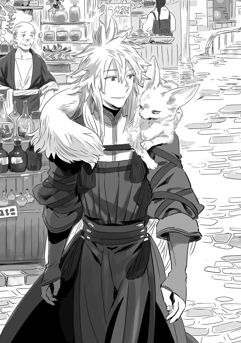
カップから顔を上げた白を軽く撫でる。
『いや、古本屋を探しに来たんだが、急がんからな。久しぶりに神殿の外に出たんだろう？ 行きたいところがあるなら行ける範囲で連れてゆくぞ』
『我が外におった頃にはココに街なぞなかったのじゃ、街の散歩でいい。じゃが、人が多すぎるのも鬱陶しい、このあたりが丁度いいのじゃ』
どうやら古本屋探しにつきあってくれるようだ。
『有難う、じゃあ探しながらこの辺歩こうか』
白が飲み終えたのを確認して立ち上がると、また手を伝って肩まで来た。右胸に尻尾、左肩に頭、触り心地抜群の襟巻きだ。白と、家屋から下がっている木製や鉄製の看板の意匠について話したりしながら歩く。なかなか凝った意匠もあり、見るだけでも楽しい。
『変なものに興味を持つのぅ』
私にとってはヨーロッパあたりの古い町並みや看板みたいなのだが、この世界では普通の町並み、看板なのだろう。大きな店ならともかく、ショーウィンドウを持つ店は少ない。看板の意味がわからんと、なかなか店に入り辛い。白にとって、コンビニの看板デザインに関して話しているような感覚なのだろうか、だったら確かに微妙だな。
地図に表示されていない路地に入っては地図を詳細にしてゆく。ここは住居が大部分で時々布と糸を扱う店、煙草屋、ポーションではない薬屋、シャベルや鋤簾、花鋏を扱う店、雑貨を扱う店など住人が普段の生活に使う、日用品を扱う店があるようだ。店や住居の幅は広場の店の五分の一もないだろう。街壁内の家らしく、狭く上に伸びてひしめきあっている。
『白のブラシなんかも買わなくては』
雑貨屋の前で良さそうなブラシを見つけた私は、白に好みを聞いてみた。
『いらぬ！ ブラシなぞ使ったことがないのじゃ！』
とのことだったので、適当に私が良さそうなのを選んで購入。他に白い柔らかい布でできた浴衣の様な構造の服をパジャマがわりに、手拭きを数枚ハンカチがわりに購入した。
『あとは宿屋用にサンダルみたいなのが欲しいな』
あまり買うとアイテムポーチを圧迫するから買わんが。
『そろそろ時間なのじゃ』
『おや、じゃあまた後で』
『さらばじゃ』
白が姿を消すと途端に首元が寂しくなる。
シンは謎を解けただろうか。謎があるとわかっていれば、広間の聖句で拝殿を廻る順番が謎だと簡単に気づくだろう。その後はどうか？
暫くすると、やっているのかやっていないのかわからない古本屋を見つけた。扉の三倍の幅しかないような小さな店で看板も出ていない。ただ風通しのためか扉が開いており、中を覗いてそうと気がついたのだ。
「邪魔をする」
声をかけて中に入る。入ってすぐのディスプレイ用だと思われる棚には何も無かったが、入り口から一メートル程の左右と中央は天井まである書棚になっており、ぎっしりと本が詰まっていた。
文字は読めないのに、書棚の本のタイトルは大部分が何と書いてあるか理解ができる。とても不思議だ。理解したタイトルを日本語で口に出せば、この世界の住人にはこの世界の言葉で聞こえるに違いない。
まあ、このファンタジーな世界で「農業のススメ」とか日本語で書いてあっても確かに微妙だが。
「来たか」
「ええ」
奥のカウンターでは露店で会った老人が本を片手にパイプを燻らせていた
「ここの本は立ち読みしても？」
「構わんよ、汚したら買い取ってもらうがな」
「わかった」
さて、どんな物が有るのか。
「......ここは魔術関連もスキル関連も書物は豊富なんだがな」
「ああ、たくさんあったな」
私が買いたい本を差し出すと、納得いかなそうな顔で受け取り、裏返して値段の確認をしている。
「二〇〇シルだ」
支払いを済ませて『食べられる木の実・野草の見分け方』を受け取る。ベリーの様に採取ポイントとして見分けられないものがあるか、学習しておきたいところだ。購入すると植物食物図鑑に鑑定したことのない食べられる果物や野草が増えた。図鑑に増えた項目は見なくても自分の知識から「思い出せる」ようになる。なんとも便利な機能だ。そして本を買うことによって追加されてゆくなら、金ができたら歴史書や魔法書という名の設定資料を集めるのもいいだろう。きっと鑑定が詳細になる、はず。
地図があるとよかったのだが、本とは扱いが違うのか見当たらず、本に書かれた不明瞭な小さな絵図を見たに過ぎない。それでも自分がいる国がジアースという名の国であり、海に面して首都を構え、別の大陸にいるドワーフと貿易をして国益を上げていること。そのため、人族の国の割りに鍛冶が盛んなこと。他に魔法都市国家アイル、迷宮都市バロンがこの大陸に在ることがわかった。このあたりの国勢に関する本も集めたいところだ。
先ほどの立ち読みで、神々が司る属性と月もわかった。やはり生まれ月に四月を選んだため水属性と相性が良かった様だ。
色々欲しいとは思うが、先ず装備を揃えねばならない。かなり長居したけれど特に止められなかったし、また立ち読みにこよう。メニューに増えなくても自力で覚える手もある。魔法書などは高いが、値段の安いもので欲しい本もある、通うとしよう。
老人に挨拶して店を出たが、売買を終えた後はすでにパイプをやりながら本を読み始めており、こちらを見ようともしなかった。
三連休の初日、起きたのは十時近かった。つい二度寝を。『異世界』と違ってすっぱり起きられない。それでも起きだして用事を済まし、ログイン。
菊姫とシン以外はすでに入っているようだ。と、思ったら隣でペテロが起きだした。ほぼ同時にログインしたようだ。顔を洗って二人で食堂へ移動して、食事をしながら話す。本日のメニューは、トビウサギのソテーと豆のスープ、黒パン、牛乳、オレンジ。
「あ、お茶漬からシンたち二人が来たら、どっか行こうってメール来た」
「こっちにもきた」
「猫元気？」
「元気すぎるんで部屋から締め出した。最近は親のところにいってるね。あ、盗賊ギルド探してたら暗殺者ギルド見つけたよ」
「物騒だな、おい」
「場所を人に教えると、暗殺者の資格剥奪の上、拠点を替えるって言われたから教えられないけど」
なるんですね？ 暗殺者。
「そういえば露店の古本屋見つけたから場所を教えたいのだが、これは教えて大丈夫なのか不安だ」
「世界の謎といい、人に教わるな！ 自力で解け！ って方向だね」
「教えない方が無難かな。すぐ見つかるだろうし」
決定的なことを言わなければ大丈夫だそうだが、探す相手の位置情報はダメな部類に入る気がする。
「うん。あ、住人にパトカもらったし、フラグ回収しに行かなきゃ」
「幼女の」
「違う。ひっぱるな！」
「私も露店で葡萄買って、工匠区で装備買わなくては」
というわけで連れ立って露店街に来ると、そこに件の古本屋の露店はなく、眉の下がった気の良さそうな男が香辛料の販売をしていた。
「すみません、ここって古本扱ってませんでしたか？」
「あー、古本屋のじいさんには十日にいっぺんくらい替わってもらってるんだよ。休みが取れなくてね。店開けとかないと、次の出店場所決める時に不人気な場所に移動させられるかもしれなくてね」
なるほど、だからやる気がなかったのか、あと一緒に置いてあった謎の雑貨は、香辛料を調合したり潰したりする道具だったのか。仲が良くても、同業者には場所取りがかかってるから頼めないとか、そんな話を後に露店街を出る。
「食事買いに行きがてら、気長に通おう」
「初日夜はいたから、計算すればいる日の特定でそうだけど。出勤日にあたったら長くなるな」
工匠区へ自分も行くといい、広場に向かおうとするペテロを、建物は教えないけど古本屋の通りだけでも通ってゆこうと引き留めて連れ立って歩く。馬車には乗らせぬ！ 途中、古本屋を横目で見ながら通り過ぎたのだが閉まっていた。フラグ回収が済んでおらんのがパーティーにいると、開かないのか、それともソロの時しか開かないのかどっちだ。何にしても中々ガードの固い古本屋である。
「あ、薬士ギルド寄っていいか？ レシピとか買っておきたい」
クエストに移行しないままペテロのフラグへし折ったとかじゃないよな、と少々気になりつつ、東門前に位置する薬士ギルド経由で工匠区へ。
工匠区へ着くと、ペテロと一緒に刃物を扱う工房を中心に見て行く。
「刀、どんな感じなんだろうか？」
「力だけじゃなく器用か素早さが乗るかんじだね、どっちかはまだ検証中みたいだけど」
「剣と斧が力で、投擲が器用、杖が魔力か精神、弓が器用と力、突剣が素早さと力、だったか。今わかってる内容」
「だね、槍が力と器用で刀が力と素早さって予想だったかな。素材で違うって疑惑もあるけど、結論出てないね。私は職業適性で大体決まる気がするからいいけど、盾メインじゃない剣士って武器の幅が広いね。でもやっぱり自分の使いやすさってあるみたい。安い武器で色々試して使いやすかった武器のスキル取るといいのかな」
はっ、今ならパーティー空いてるし、ペテロはレオや菊姫と違って小動物に全力投球な感じでもない、白を紹介するいい機会なのか？
「初期装備の片手剣系以外は一番安いのでも一〇〇〇シルからだから、全部試すとなると結構なお値段に。なんで手槍まで売っているのか」
いやいや、まずパーティーだからと言って白が見えると限らないし、白が嫌がるかもしれん。
「売りはらうにしても半値以下になるしね。広場の店だけで済ますと、まだオーソドックスなのしかないんだけど」
後で白に確認とってからにしよう。
「ん、とりあえず好みで刀系買ってみる。ぴんとこなかったら剣でいってみよう」
武器を選びつつ全く違うことを考え、双方に結論を出す私。ルバに打ってもらうのはせめて方向性を決めて、金がある程度できてからだ。値段も性能もごく普通の量産品を手に取る。
「ペテロはメイン武器どうするんだ？ 暗器を幾つか買いそうなイメージだけど」
「今は短刀かな。小太刀か忍者刀にしたいけど、同じ刀でも日本刀型って無いんだよね」
私が持っている刀は、刀身が細く片刃で反りはついているが、ファンタジーらしい外見の武器だ。
「米とともに、そのうち国ごと発見されるか実装されるかしそうだけどな、日本」
「新しい街が発見された時、ワールドアナウンスで発見した街や国で交易が始まるって言ってたね」
「まあ、見つかるまでは今ある刀の刀身を黒く塗って、らしくしといたらどうだ？」
「おお。そうしよう」
ペテロは職業のせいか、両手持ちの武器はマイナス補正がつくらしく上手く扱えない、私も魔術士の時は剣がダメだった。武器は自由に選べるけれど職業によって装備できるランクが決まっており、その中から自分に合った武器を選ぶのだ。職だけでなく、武器や武器に使われる素材でスキルとの相性の良し悪しもある。
って、杖の少年に顔合わせづらいな。長杖と剣を使い分けしながら行くか。唐突に工房の少年の顔が浮かびメイン武器にまた悩むのだった。
ローブと間に合わせで着けていたプレートを売り払い、ペテロと同じ店でコートを買う。軽鎧は装備できるが、最初にローブだったせいか、装備していると違和感があったのでコート、小手と金属で補強されたブーツにした。もちろんプレートの方が物理防御が高いが、かわりにコートは魔防が高く、回避を邪魔しない。
買い物が終わった頃には日がとっぷり暮れて、昼間から空にあった白い月を追って、黄色い月が顔をのぞかせていた。すでに仕舞いにしている工房も多く、路地は少しさびしくなっていた。
お茶漬から連絡が来てまだシンと菊姫は来ていないが、レストランで集まろうということになった。馬車の時間だ、もう馬車苦手なのをカミングアウトしてしまうかな。
「おー！ キタキタ！」
「こんばんは」
レオが手を振ってくるのに答え、席に着く。
注文を聞きにきた店員にポトフのような料理と、ジンジャーエールっぽい甘くない炭酸飲料を頼む。ペテロはソーセージの盛り合わせとビールだ。この街にアイスティーは存在しないのだろうか。ただ飲むだけなら暖かいものでいいのだが......
「おー、カンパイ〜！」
グラスを当てて日本式の乾杯。レオが毎回やるので一杯目は必ずグラスで飲むものにしている。レオも飲めないのに何故乾杯が好きなのか。
「シンと菊姫が来てないけど、予定決めちゃおう。ボス行って次の街行かない？」
「ああ、Ｄランクになって、ここ以外の街の通行が許可になるのだったか」
「そそ、転移石を登録しとけば街の移動は有料だけどすぐできるし」
誰かがボスを倒すと街が解放されて行き来が可能になるが、移動は徒歩か馬車ということになる。ボスが落とす転移石を神殿にある転移の門に登録すると、一瞬で転移が可能になるため、結局街を解放した人に続く他のプレイヤーも、利便性のためにボスは倒すことになるのだ。
「今、見つかってんのは西のセカンだっけ？」
「東のサーもさっきワールドアナウンスきたよ」
「まあ、名前からして順当に見つかった感じだね」
「北に首都ファイナがあるらしいぞ」
立ち読みでつけた知識を披露。
「ほうほう」
「この街から北へ出る道ないから、どっか他の街経由していくのかな」
「北に真っ直ぐ行こうぜ〜！」
無茶を言い始めるレオ。
「いやいや、迷って終わる予感しかしない」
そう、この世界は普通に街と街の間の距離が長い。道なき道を進めば、迷子になるのは間違いない。
せめて道のないエリアはマップで街の方向がわかってから探索したい。ちなみにお隣のセカンまで二日と半日かかったらしい。
「えー！ 道なき道を獣道したい〜」
「まあ、現実世界と違って食料の持ち歩きが楽だし、行ってもいいけどね」
「敵が強すぎて無理だったらすぐ戻るんなら」
ペテロが同意してお茶漬が流されている。
「私は明日休みだからいいけど、下手するとフィールドで本格的に落ちなくてはならんから、シンと菊姫がそれにオッケーを出したらな」
そういえばリアルでも廃墟とか好きだったなレオ、探訪につきあったことないが。
「それに野営の準備せんと」
「一日でつけないからな〜」
シンと菊姫がログインするのを待って野宿の準備をし、出発することにした。西に行くか北に行くかは二人次第だ。どちらにしても今のうちに休憩を取ろうという話になり宿屋にもどった。宿屋の予約をどうするかも決めんとならん。
「ログアウトしたらシンと菊姫にメールしとく〜。で、時間変わったら連絡するわ」
「じゃあ十二時半に」
「昼食べてくらぁ！」
再集合の予定を立ててログアウト。私はもう昼というかブランチというかを食べたあとだったので、夕食の準備でもしよう。が、その前に時間もあることだしもう一度露店に行こう。古本屋の話を聞いた露店で香辛料を少々買いたいのだ。この世界は夜だが、急げばまだギリギリ開いている時間だ。
早足で露店に向かう途中、冒険者ギルドの簡易宿舎前で住人の男とぶつかりそうになった。怪我でもしているのか、追い越そうとした時に急によろめいたのだ。
「大丈夫か？」
倒れるほどでもなかったし男を抱きとめる趣味はなかったので普通に避けたが、一応声をかける。
「ああ、すみません。......なかなかバランスが難しい」
無精髭で覆われた口から出た声は思いの外若い。
「怪我か？」
「昼間、少し失敗しまして。ああ、露店に行かれるなら急がなくて大丈夫ですよ。すごい混みようで店をたたむのを遅らせているようです」
「そうか、ありがとう。......もしかして買い損ねた？」
簡易宿泊所に風呂と飯はつかない。そして怪我した状態であの人混みに入るのはなかなかキツイだろうと、プレイヤー──異邦人でごった返す露店の様子を思い出す。
「はは。明日の早朝にでも出直します」
すまん、たぶん早朝も混んでいる。異邦人が他の町に移るまでしばらく混みっぱなしだと思います。
「見知らぬ同胞がすまんな。これでも食ってくれ」
自作のパンとトビウサギのロースト、燻製卵、チーズを押し付け、返事も聞かずにその場を離れる。急いでるんですよ！ フリだけどな！ 私たちプレイヤーが大挙して現れたことによって割りを食う住人がいるとは。ちょっといたたまれなくなった。それでも香辛料は予定通り買いにゆくがな！
待ち合わせ時間に合わせて、ログイン。こちらでは朝の四時ごろだ。偶にはこちらで八時間睡眠をしてみたい。
着替えて、仕込んでいたワインを確認すると残りの葡萄を仕込みなおす。ブランデーを作りたいのだが、蒸留器はないのだろうか......。野営の準備に道具屋露店街に行ったら一緒に見てみよう。
まだみんなは来ていないようなので風呂に入ることにする。これから野宿なのだから、今のうちに入ってしまおう。
風呂から上がると後から来て同じことを考えたらしいお茶漬が、もう一つの部屋で風呂に入っているのを除いて全員そろっていた。お茶漬を待って朝食だ。
「ここの宿どうする？」
「んー、少なくとも二日以上は戻ってこれない気がするから予約はなしかな」
「そろそろ人も移動するだろうしね」
「そういえば、シンは神殿どうだった？」
「精霊は貰ったけど謎がまだ。昨日片っ端から順番試したのに！ 二度目は駄目なんじゃないかな」
最後にまた最初に戻ることをしていないオチか。
「そんなことないと思うぞ？ がんばれ」
本日のメニューはクロワッサンぽいパンにゆで卵、コーンと豆と葉物野菜のサラダ、櫛形に切って揚げた皮付きポテト、ペッパーパストラミとソーセージ。かぼちゃのスープ。
ハム・ソーセージも自分で作ってみたい。露店は朝六時を過ぎないと開かないので朝食をゆっくり食べて、広場の店で食事や回復薬の補充を行う。私の場合食事は食材の調達なのだが。ペテロと菊姫に小麦とホップを渡された私です。ビールの催促ですね？
「私、テント初体験なんだが」
この世界のテントと現実世界のテントの違いもイマイチわからんくらいには未体験ゾーンである。
「オレあるぜ！」
この中でレオだけがキャンプ体験者だった。
「任せろ！」
取り敢えずレオの助言と懐具合の関係から、組み立てやすい二人用テントを三つ購入。そしてバーベキューセット。
「おい」
「わたちでも、なんかズレてるのがわかるでし！」
「わははは！ だって飯はそのまま持ってけるし寝袋は売ってないし、この世界ならこんなもんじゃね？」
「まあ、キャンプ用の広場とか村とかが道沿いにあるそうだから、寝床と食料が確保できたらいい気もする」
「道沿いなら、ね」
ペテロが条件を補足する。
「布団がわりにローブかマント買おうか」
「じゃあ各自いると思うものを買って、一時間後ここ集合で」
「了解」
相変わらず連れ立ってゾロゾロ買い物する文化がない私達だ。ペテロとは長いネットゲーム友だちで会ったことはないが、他の奴等は現実世界で一緒に出掛けて土産物屋や展示室に入る時もこんな感じである。
取り敢えず虫除け用に干した香草、火口石、水樽を購入する。水は買いすぎても料理に使えるし、空いた樽は利用できるということなので途中で汲み足すこともできる。酒を樽で寝かせることもできるだろうか？ と思い十樽も買ってしまった。以前購入した水の容器も調理用水の容器も、水を使い終わると光の粒になって四散してしまったので、これは名前の通り水『樽』なのだろう。虫除けは虫が草原にもいなかったし、無用だろうが念のため。
そして蒸留器！ 早々に目的を果たした私はその場でワインをブランデーに変えるべく、買ったばかりの蒸留器にワインをつっこむのだった。
「すまん、野宿に持って行った方が良いものを教えてくれ」
時間が余ったので最初のテント屋に来ている。待ち合わせ場所も見えるし。
「ああ、さっき買ってくれたお客さんか。普通は少人数だとセットで隠蔽陣買ってくよ。なんか最近テントだけの客が多くて勧めなかったけど」
「隠蔽陣？」
「魔物に気づかれ難くする陣だね。布で出来ててテントの中に広げるかかけて使うんだけど、今は厚手の陣を敷いて使うのが人気だね。商隊と一緒に移動するとか大人数だと陣の効果を上回って目立っちゃうからあまり意味がないし、大勢だと魔物がそもそも滅多に寄ってこないしね。でも少人数でなら必要かな」
最近、陣を買わない客が増えて気になっていたそうだが、会話をしない客が多くてわざわざ教えることをしなくなっていたそうだ。夜露や雨がないならテントを張らず陣の書かれた布に包まって夜を過ごす住人もいるらしい。
他に三つテントを張るなら少し離して張らないと陣の効果がないこと、焚き火や料理はテントから離れた場所で行うことなどを教えてくれた。
焚き火をして交代で寝ずの番かと思っていたら、火があるところに人がいることを知っている魔物が寄ってくるそうだ、動物と違ってアクティブな魔物の中には積極的に人を襲うものもある。六人でワイワイやっているうちは、このあたりの魔物は避けるので大丈夫だと思うが、一人二人でいる時は危ないそうだ。強さに自信が持てるまではテントの側で火は焚くなとの忠告を受けた。
「まあ、街道沿いの野営地でテント張るなら、そこにも軽い結界があるから大丈夫だとは思うけどね」
今から行くところに街道があるかも謎です。
「そう言うわけで、陣買っていこう」
店の前に集まってきたみんなに声をかける。陣はテントより高かったが、まあしょうがないだろう。あとランプを自分用に購入。テントから漏れない程度の明るさの割に範囲は広く照らすという野外用ランプだ。暗視があるから意味はないのだが、それでは味気ないと思ってつい購入した。全部合わせると結構な散財である。
行ったことがないので、西から出て北に向かおうということになり、門を出ると、そこには青々とした麦畑が一面に広がっていた。日本で見慣れた稲の黄緑がかった葉ではなく、緑の濃い葉が風になびく。秋になったら黄金色が綺麗だろう。
「こっち行くか？」
西に続く街道をしばし歩くと、北へ向かう畑の畦道があった、何処まで続くかわからないが、解放されたセカンを経由せず北に向かうなら道なき道を行くか、街道の途中に分岐路があるのを期待して進むしかない。
「行こうぜ！」
道なき道を進みたい男が即座に進路を北にとる。
「まあ、最初から獣道ゆく予定だったし」
「牧歌的だなぁ、モグラ見えるけど」
「叩いてく？」
「モグラ叩きか」
「なるべく戦闘避けて、さっさと街見つけてからにせんか？ 現実世界の日を跨ぐと、みんな揃わないままフィールドでログインするはめになるぞ？」
盛り上がっているところに水を差す。レオとシンが夢中になって日が暮れる未来しか見えない。
「それもそうだ。避けられるのは避けてこう」
そういうことになった。
「麦って猫草に見える」
「もともとカラス麦とか小麦とかの麦だぞ、猫草」
「マジで!?」
猫草という草だと思っていたのだろうか......
お互いのスキルのことや益体のない会話を交わしながら歩いてゆくと森が見えてきた。畑が終わると畦道も終わり、これからは道なき道を行かねばならない、と思っていたのだが、畦道の先の森には人が幾度も通った後があり、整備された道ではないが踏み固められた生活道があった。
この世界では薪やらキノコやら、きっと森の中で手に入るものも生活に密着した重要な資源なのだろう。その道はレオがヨルマスを釣った川の上流であろう場所まで続き、途切れた。
「釣りがしたい!!」
代わり映えしない風景に飽きたのか川のせせらぎに魅せられたのか、レオが騒ぎ出した。
「早速寄り道が」
「はぇーよ」
「この川、北から流れてきてるから、このまま川沿いに歩いてけばいいだろうし、昼休憩に存分に釣れ」
「アクティブモンスターを、ちらちら見るようになったから気をつけてね」
「肉に興味があります」
肉を落とすとは限らないが、ここのモンスターは鹿型だ。期待できる。ゴブリンも見かけるがスルーで。
「お昼前に戦闘して鹿肉を焼くでし」
「鹿はなんか、シチューなイメージだな」
菊姫の焼肉発言に異議あり。
「焼肉も美味しいでしよ？ 血抜き失敗してると臭いらしいでし？」
「血抜きか〜」
だいたい野生動物は、血抜きの失敗の他にも、発情期の、特にオスとかは臭いらしいが。
「ここはお肉になって荷物に入るから楽でいいでし」
「そういえば、人間の肉がまずいって言われてるのも血抜きしないからだって言うね」
「突然ブラックな話題を」
相変わらずさらっと猟奇なペテロ。そもそも肉を食うモノは臭いからやめておけ。
「ちょっと休憩しておやつ食べようか」
「おー」
【気配察知】を使いながら敵を回避しまくって、ペテロとレオに合わせて歩いているため、結構速い速度で進んでいるが、戦闘をしていない割りにＥＰ消費と気疲れがある。
「釣り〜」
レオは食事もそこそこに釣り糸を垂れ、他はレオを眺めながら思い思いに休息を取る。
自作の、ベーコンエッグと燻製にしたチーズをはさんだホットサンドを食べている。美味しそうに焼き色のついたパンに挟まれた半熟の黄身が塩気のあるベーコンに絡む。チーズも溶けて絶妙だ。
「うまそうだな、一つくれ」
「わたちもー！」
「便乗」
「同じく」
評価７のサンドイッチだ。レベル上げも兼ねて作っているので、５以下は問答無用で売り払っている。ほぼ得意料理に引っかかってレシピ８のものも評価５が取れるチート仕様。他にトマトとベーコンとチーズ、シンプルにチーズとハム、ふわふわの卵の３種類。
「んー、私も料理してみたけど、得意料理『焼く』と『肉』だった。なんで私は最初にビールを飲まなかったのか」
ペテロがぼやく。
「ビールクズ乙！ 僕は『肉』だった、せめてパーティー組んでから買えばよかったかな。もう大半が食べちゃった後に得意料理の法則が出たから、大抵の人が『焼く』か『肉』か『果物』『搾る』な気がする」
「『肉』の方が出にくいよね、『焼く』じゃなくってよかったじゃない。法則知ってから『初めて食べる』と三分の二の確率くらいで食べたものじゃなく、『焼く』か『肉』になるってよ。ゲーム購入して、しばらくしてからログインした人たちはそうだったみたい。慌てて掲示板、題名に【見るな】【ネタバレ危険】がはいってた。まあ、新しく始める人は平和でいいね」
ゲームパッケージはすでに売り切れて出荷待ちというか、容量の関係で新規のプレイヤーは設備の増強後になるそうだ。昔だったらサーバが落ちた！ とか、重すぎて動けない〜などなどの問題があるままプレイヤーは増えるところだったが、ＶＲは安全マージンが法的に決まっているため、設備増強が終わるまでは参加を増やせない、第二陣のプレイヤーの参戦は大分後になるだろう。
「わたちは『焼く』と『穀物』と『肉』になったでし、なんで、あの時ビールを頼まなかったのか」
「二号乙！ いいじゃない穀物なら酒に補正つくでしょ？ まあ、知らずに戦闘行く前にＥＰ回復用として買ったら、懐具合とコスパ重視になるよね」
「みんな色々やってるな、俺はまだ料理してねぇや」
「シンは食べた時、わたちとパーティー組んでたから、わたちと同じでし！」
得意料理が規格外ですみません。
「料理の評価10だけステータス補正効果つくってね」
「10なんて貰ったことないな」
おもに得意料理補正のおかげであるため、最高評価まで行き着かないのだ。私の器用も料理レベルも高くはない。
「ホムラ〜」
レオに呼ばれて振り返ると、サカナを荷物に突っ込まれた。
「持ちきれないから料理してくれ！」
料理しても持ちきれないと思います。しかし、返事を聞かないまま、また釣りにもどるレオ。
「ホムラが今の分作り終わったら出発な〜」
レオの背中に声をかけるお茶漬け。まだ作ると返事をしていないのだが......。まあ、作るが。全部作ってみれば、一本くらいは評価10が貰えるだろうか。
「鮒の甘露煮、鯉の甘露煮」
「地味な」
「鯉濃とか鯉の洗いがよかったか？ 醤油も味噌もないが」
私は現実世界で一度食べて両方好かない部類だった。淡水魚は小さめの魚で甘露煮か塩焼きの二択しかない私、淡水魚はアラ汁系も刺身もどうもだめだ。というか味噌と醤油!! なお、甘露煮は水と砂糖でセーフだった。ゲームレシピの謎。
「レオ、鮎とか山女魚釣って！ 塩焼き！」
同じような意見でなによりです。
お茶漬が鮎や山女魚と言ったせいか、レオが渓流釣り、渓流釣り、といいながら先頭を歩いている。川をさかのぼれば渓流なのだろうか、......この森は平坦なんだが。
ご機嫌なレオのあとに続いて川辺を遡る。森の中の下生えは短く緑色の綺麗な苔と所々に倒木、真っ直ぐに伸びて枝を広げる広葉樹。現実世界だったら人が長い時間手入れを怠らなかった森だろうが、ここの世界では普通のようだ。
「そろそろ敵がどんな強さなのか、一戦やっておこうか？」
「だな。距離的に勝てないほど強いってことはないと思うが」
「苦戦するようなら逃げようぜ」
「ここで逃げてるようなら戻った方がいいかな。ボスに勝てないだろうし」
「！ ボスがいたんだった」
「ボス倒さないと街への移動が徒歩のままだぞ」
「じゃあ、次見かけたらやるってことで」
最初の方で現れた鹿に角はなかったが、今、時々姿を見せる鹿は立派な角を持っている。鑑定では角がないのがフルール鹿のメス、角があるのがオスだった。森から姿を見せたところで菊姫が仕掛ける。
「お昼でし！」
「鑑定レベル上がれば弱点とか出るのかな？」
菊姫がタゲ取りした直後、ペテロが通常攻撃の一撃を入れる、続いてレオ。そして、そのまま後ろに回り、位置取りをする。その間に私とシンも左右にわかれる。
「【火】よ！ 『ファイアエンチャント』！」
「【闇】『シャドウ』」
シンは自分に火属性のエンチャントをかけながら、私は取り敢えず敵の動きを阻害する魔法をかけながら。
『シャドウ』はレベル１の【闇魔術】で、ダメージは入らないが、敵にかけると一定時間【盲目】にすることができ、命中率を低下させ、自分にかけると姿を隠すことができる。周囲が暗いほど効果的だ。
私の攻撃は密偵二人組に当てないよう、奴らが通り抜けた後の方がいいので、開幕『シャドウ』をかけるようにしている。菊姫がヘイト上昇効果のあるスキルを使うまでは、全力の攻撃は無しだ。そして挑発系のスキルは一度攻撃を当ててからの方が効果が高い。気心の知れた六人での戦闘は、時々やらかすけれど、基本的にはスムーズに進む。
「【オンリーワンエネミー】でし！」
魔物が一匹の時に、がっちりタゲを固定するスキル。但しスキル効果持続中は、その敵から菊姫は逃げることができず、菊姫がピンチの時に誰かがヘイトを稼いで一時的にタゲを交代することもできない。
「【風】『ウィンドボール』」
はい、魔法剣士になったのに杖で戦っています。魔術を５にしないとエンチャントできない上に、剣──というより金属は魔術を阻害するらしく、素手より威力が下がる体たらく。だが、せっかく買ったのだから剣も使ってみたい。
鹿は時々【突き上げ】という高威力の攻撃を仕掛けてくるが、菊姫は危なげなく受けている。装備も新しくなっているようだし、安定している。
「【バックアタック】！」
「【ハイドインシャドゥゥ】!!」
「【龍】の『突』！」
「【風】『ウィンドボール』！」
あ、思いついた。近いのはペテロだな。
「ペテロ、次に私が魔術をペテロにかけるから、持ってるなら【不意打ち】してみてくれんか？」
ペテロのことだから、このスキルは取っているだろう。
「ん、了解」
「【闇】『シャドウ』！」
「【不意打ち】！」
鹿が大きくのけぞる。
「おお、【不意打ち】が入った」
【不意打ち】は敵に認識された後ではかからないため、威力はかなり高いが中々使えない。ヘイト管理の関係でパーティーを組んでいると初撃でも使えないという困ったスキルだ。だが、『シャドウ』で姿を隠してからの攻撃なら発動するようである。
「二人で別々に攻撃入れるより強いじゃん、どんどんいって〜」
お茶漬が自作の短剣を投擲しながら声をかけてくる。そういうわけで、ペテロに『シャドウ』をせっせとかけるお仕事となった。
「オレも次あがったら【不意打ち】とろうかな〜」
一戦終わってレオが言い出すほど強かった。シャドウ、不意打ち、任意の魔法とペテロの任意の攻撃を挟んで、シャドウ、不意打ちのループだ。シャドウがスキルを使うと消えるのと、不意打ちが続けて使えない仕様のためだ。
「私、全部の魔法は取る気なかったんだけど、闇取りに行こうかな」
「暗殺者とか忍者に姿隠し系スキルが出そうでしよ」
「これなら道中、順調にいきそう」
「きつくなる頃にレベルがあがって、レオが【不意打ち】取れるだろうしね」
「お昼に足りないでし、あと何回か狩るでし」
「きつくなる前にちょっと剣使ってみていいか......？」
この後の戦闘で、戦闘中に装備ウィンドを開いて杖と剣を入れ替えるということをしたらスキル【装備チェンジ】が出た。ウィンドウを開かず一瞬で装備を変えることができる。早速取得！ ......したところでお茶漬に声をかけられる。
「そういえばホムラは魔法剣士用の剣買わなかったの？」
「魔法剣士用......？」
「まだＮＰＣ作の片手剣しか売ってないみたいだけど、銀でできた魔法を阻害しない剣。杖みたいに武器の威力の上乗せはないみたいだけど」
初耳です。
「さすが詳しい」
「最近は掲示板でいつ謎の答えを踏んじゃうか気が気じゃないです。でも止められない」
いいのだ、ルバにも杖の少年にも顔が立つ使い方だし!! ＳＰは惜しくない!! 惜しくないったら！ スキルに【刀】も出たんだよな......、おのれ！
「そろそろお昼にしようか」
「鹿肉でし！」
道中、雌を従えた雄鹿が出るようになり、かなりの肉と角、皮を手に入れた。メスは角がない代わりにロース肉を落とした。
「ささ、焼いてくれ！」
レオがバーベキューセットを出したので、そのまま料理するのかと思ったら依頼が来た。まあ、しょうがないかと準備をしようとすると、菊姫の声が飛んできた。
「一回ホムラが仕舞うでし！」
「何だ？」
「レオが今バーベキューセットの持ち主、イコール、レオの料理になる危険が危ないでし」
いったい、レオは過去にどんな料理を菊姫に食べさせたのかと疑問を持ちながら、菊姫の剣幕に押されてバーベキューセットをポーチに仕舞う。このまま【料理】してもいいが、きっと焼きながら食べたいだろう。バーベキューセットを取り出し設置。下ごしらえはとりあえずワインに漬けてみればいいだろうか。
「って、おい！」
漬けた肉に時間促進をかけるためにワインを横に置いた瞬間、ペテロと菊姫がさらって行った。
「美味しいでし～」
「焼肉というかジビエ！ って感じ」
「ビールおかわりください」
「オレも～」
「ロースうまいぜ！ 脂、脂！」
「ここの肉は俺の管理下だ!!」
「たまねぎ焼け～」
「ピーマン乗せたの誰でしか！」
「肉〜肉〜」
炭火に落ちた脂が肉を焼く音と匂いをあたりに広げ、肉を食べる友人たちの騒がしさよ。菊姫はワイン、ペテロとシンはビールだ。料理を作るかわりに、肉は全部私が持っていっていいことになったので、これくらいはサービス、好評なようで何よりです。
「ホムラ、今度コーヒーとウーロン茶作って～」
「コーヒーはすぐできるけど、ウーロン茶は原料を持って来い」
自分がコーヒーを飲まないので率先して出さないが、一応豆も買ってきた。お茶漬は酒を飲まない代わりにコーヒー中毒だ。そして紅茶もしくは緑茶派はここには私しか居ない。仲間求む！
食休みはのんびり採取。薬草だけなら緑のある場所なら何処にでもあるようだ。レオは釣り糸をたれ、その下流で採掘組が石を拾っている、鉱物鑑定を取っていない私には唯の石に見えるのだが。魚逃げんのかな？
他より石や岩が多く、採掘ポイントがあるのと丁度昼過ぎだったので、ここで昼食にしたのだが何だか不思議な感じだ。何故ここだけ石が目立つのか、特に川の真ん中に飛び出た岩とか。上流から流れてきた雰囲気でもないぞ？ ってデザイン的な何かか。つい現実世界基準で考えてしまう。採掘ポイント配置とかか？
作業を眺めていたらクレソンを見つけた、採取対象外の食物だ。本を購入しておいて良かった。
「何してるんだ？」
目を向けるとシンが首を傾げている。
「クレソンが生えてたから採ってるんだ、ステーキとかによく乗ってるやつだな。ベリーと同じで誰でも採れる食材だ」
と、採ったクレソンを見せながら答えたら、採掘組も採掘ついでに近くのクレソンを採ってくれて、菊姫に至っては薬草そっちのけで採ってくれた。
「わたち、生産裁縫だし、売っても薬草は安いからいいでし。さっきのワインのお返しでしよ」
休憩を終えた頃には大量のクレソンと魚が手元にあった。ありがたいことだ。
「ありがとう、って、どさくさに紛れて魚が突っ込まれてる!?」
「わはははは、好きに料理したまえ！」
「かはっ、わかった。みんなで食べない分は後でまとめて料理したの返す」
スキルが上がって嬉しいのだが、このしてやられた感は何なのか。全部甘露煮にしてやる！ 砂糖は足りるか!? 味噌煮にするには味噌がない。
「ん〜、米と大豆があれば味噌や醤油もできそうなんだがな」
「大豆はありそうだけど米がね〜」
「日本酒のために探すでし！」
「味噌や醤油ができるなら私も捜索隊参加する」
「行ける範囲広げて探そうぜ〜」
「朝食に米を食べたい！」
「味噌汁飲ませろ！」
「和食に飢えるの早いな、現実世界じゃ毎日和食、食べないだろうに」
「それとこれは別、旅館に泊まったら朝食は和食が食べたくなるのと同じだ」
「日本酒、毎日呑めるチャンスでし」
「右に同じ」
アル中の心配も翌朝の心配もいらんからな。いや、馬車酔いがあるくらいだからあやしいか？
それぞれの食への情熱を垣間見た後、移動を開始する。川に沿ってマップが詳細になってゆく。場所が森のせいか最大まで拡大しなければわからないが。一応クレソンが採れる場所を登録しておこう。
「さっきの鉱石とクレソンのところ。なんかあるんだけど」
同じく登録しようとしていたらしいペテロが言い出す。うん、さっき眺めてた川の真ん中の岩ですね。私のマップにも丸がでていた。
戻ることになりました。
「あの石だ」
「ほんとだ。意識して見たら地図になんか丸ついた」
「取り敢えず近くに見に行くか」
そういうことになった。
みんなで石を囲む。平坦な場所の川なので流れはかなり緩やかだが、膝まで浸かっていると気をつけないとさすがに危ない。
「菊姫、誰かの影にいると楽だぞ？」
菊姫が大変そうだ。レオは、なんかもうシンに掴まって泳いでいるのでいいかな。
「何か彫ってあるね」
「何だろう？」
「ファルのマークか？」
「あー、昨夜、散々神殿で見た」
最初に行った拝殿なので、かろうじて覚えていたことを口にすれば、シンが肯定してくれた。やっぱり高くとも本を買うべきか。紋章は大部分が水に浸かり、そばに寄って石が割り波立たせる水の流れを遮って水面を凪ぐようにするか、潜って見ないと読み取れない。
お茶漬が紋章に触ると石が光った。何かデジャブな光だ。
『あはん、誰なのかしら？ こんなところまでくるなんて』
「精霊だ！」
シンが姿を見せた半透明の岩に座る女を見て小さく叫ぶ。身体の中心や顔はそうでもないが指先、特に足先と髪は水が流れているのがわかる。青い水でできた女。あはん？
嫌な予感にシンの影に半身を隠す。
『あたしの封印を解いてくれたのはだぁれ？』
笑みを浮かべ、唇に人差し指をあてて軽く肩を竦めて聞いてくる。
「「この人です」」
ペテロとシンが笑顔で精霊の正面にいるお茶漬を指差す。
「なっ、ちょっ！」
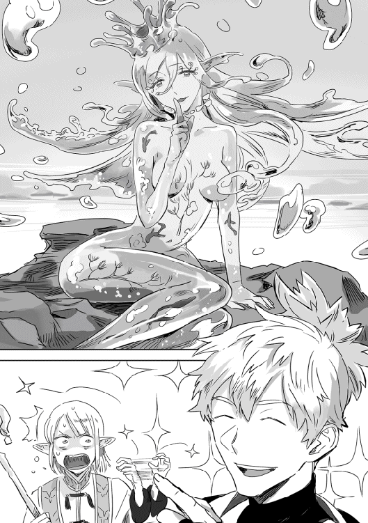
『あらん、エルフなのねぇ。美形の男、ふふ』
目を細めてお茶漬を見ている、口の形が嬉しそうに三日月型に変わる。これ精霊の祝福の流れだな。
『でも、あたしと相性のいい人も男だわん』
流し目でペテロを見る。
「ロリコンなんで遠慮します」
ペテロは、この面倒そうな精霊の祝福回避のためなら何でもする姿勢だ。次に見られたのは私。
「美しい貴方は人の身には勿体無い、輝く金の髪に森の緑を瞳に持つエルフの彼。最初に触れた彼が運命でしょう、お似合いです」
笑顔で告げる。
「貴様っ！」
『そうね〜貴方にするわん』
お茶漬がこっちを睨んでいる間に首に手を回し、額に口付ける。
『あたしは水の精霊、『ルルー』よろしくねん。ふふ』
そのまま離れず、お茶漬の耳元で名乗って姿を消す。
『その者は多くの男を惑わし水に引き込んだ』
『その者はやり過ぎた』
『その者は女神ファルに封じられた』
『その者は封印を解いた者に従わねばならない』
『その者は惑わす、心せよ』
すると、ルルーと名のった精霊よりも個性のない少女の姿をした精霊が、水が盛り上がるようにして五体現れた。
『私達はその者の見張り』
『最早必要のない見張り』
『私達は封印の見張り』
『最早必要のない見張り』
『ならば共に』
それぞれが菊姫、シン、ペテロ、レオ、私に祝福を与え名前を囁き消えてゆく。
「精霊ゲットだぜ！」
呆然としていたところにレオの声が響き、正気に戻った。
岸に上がって服を乾かす。一度装備を入れ替えれば元に戻るので便利だ。ついでに耐久の確認をする。
「き、さ、ま、ら！ 押し付けたな〜っ！」
「いやあ、気のせい？」
「強そうな精霊でうらやましィ〜」
「最初にお触りしたのはお茶漬だし？」
「そう言えばペテロ、誕生日四月にした？」
「したというか、変え忘れてデフォルトの四月一日です」
「わははは、エイプリルフールか！」
「誕生日で属性相性が決まるで決定かな」
「ほうほう、八月は何かね？」
「貴様等！ 流れるように話題を逸らすな！」
気づかれた!?
「まあまあ、私達が報酬で貰った精霊の能力は回復の効果だし、お茶漬が他のもらうのは順当だったと思うよ」
笑顔でそう言うペテロ。レオも治癒は持ってる気がするが口をつぐんでいる私。
「あ、ほんと回復でし」
「どうしてもという時の回復手段と、回復できるメンツが増えたのはいいこったな」
菊姫とシンの援護ゲットでお茶漬がぐぬぬっとなっているが納得してくれたようだ。めでたいめでたい。ご機嫌とりに熱めのコーヒーを振る舞う。
「精霊は精霊使いが使うのと、どう違うのかね？」
レオがウィンドウを見ながら言う。宙に浮く人のウィンドウは、見ても解読不能の文字の羅列だ。
「さあ？ 説明に、職業が精霊使いの場合は精霊の覚える能力が全て使える、って書いてあるからこれから精霊がいろいろ覚えるんじゃない？ 初期はそもそも使える能力が少ないから、そう変わんないと思うよ」
「俺、精霊二匹め〜。使ってねぇや」
「わたち達の精霊はまだ一個しか覚えてないでしよね」
「能力追加の精霊石貰ったから、すぐに追加できるんじゃないかな？」
そう、お茶漬以外は精霊の能力を増やす効果がある精霊石を二つずつ貰っている。ルルーが強い精霊のため、おまけでバランスを取っているのだろう。一精霊一個まで使用可能とのことだが、これは強い精霊と出会うまで取っておくべきか。
「いやー、便利ですね」
さっきと打って変わってお茶漬は上機嫌だ。
現在戦闘中、目の前で嫌な感じの同士討ちを繰り広げている鹿がいる。雄はルルーに『魅了』され雌を攻撃し、メスは『怒り』状態で雄を攻撃している。怒りは敵味方無差別攻撃なのだが、攻撃されても反撃しなければそのうち同士討ちを始める。戦闘のコツはメスのヘイトを稼がないこと。まあ、時間短縮のためにメス一匹のタゲは菊姫が持って普通に戦闘しているのだが、その脇では雄と雌の地獄絵図みたいな何か。何故そう感じるかというと、ルルーが技をかける際にお色気むんむんで雄を魅了した後に、雌に『怒り』の状態異常が付いたからだ。
なんで上機嫌なのお茶漬さん......いや、まあ、戦闘が楽になったからだろうが。
レベルが21になりました。速攻【刀】を取得した。ステータスのポイント振りは、『シャドウ』を使うために杖装備・魔術で戦っていたため、ちょっと腕力に振るのをためらって、つい器用と俊敏に振ってしまった。料理もするしペテロとレオについてゆくのは移動速度が遅くて大変だしな、いいとする。
その後も戦闘を続け、休憩とおやつと採取を行い、戦闘を続行。適度に戦闘を避けて進む予定だったのが、会う敵会う敵倒して進んでいる。
採取は薬草と普通に採れる枇杷。枇杷のタルトを作ってくれないか菊姫と交渉してみよう、いや補正あるから私でもいけるか？ 調理方法は【焼く】でいいのか？
休憩の最初に、そっとチーズとブランデーに【時間促進】をかける。【料理】自体はＥＰ消費でできるが、料理のスキルはＭＰを消費するから最初にかけておくのがいい。あとは【ＭＰ自動回復】で休憩が終わる頃にはＭＰマックスに戻っている。たぶん釣りやら採取やらで、うちのパーティーは他のパーティーより大分休憩時間を取っているのではないだろうか。ＥＰ回復のために食べているというより、食べるためにＥＰを使っているところもあるしな。
日が暮れて夜に現れた敵は熊だった。フルール熊が一匹。......お茶漬が不満そうなのは見なかったことにした。
熊の攻撃で菊姫が持っていかれるＨＰは多いが、一対一ならばレオも【不意打ち】を覚えたため、難なく倒すことができる。ペテロとレオに交互に『シャドウ』をかける様になったせいで、他の魔法も剣術も使う隙がなくなってしまったが。おかげで【闇魔術】が、先に覚えていたいくつかの魔術レベルを追い越した。戦利品は熊肉、熊皮、熊の胆だ、熊の手だったらどうしようかと思ったのは内緒だ。
川の砂の中にペテロが砂鉄を見つけたので採取・採掘休憩を取り、その後も八時ごろまで戦闘をして夕食の準備をする。昼間肉だったのでバーベキューセットの網を鉄板に変えて、荒めのパン粉をまぶして香草焼にしたマス、付け合せにローストした玉ねぎとパプリカ。狐色になったパン粉に包まれたマスの上に、クレソンとレモンを乗せてメインのでき上がりだ。あとはパンとサラダ、コーヒーを全員に配る。
パンは補正が二つ付くうえに、食材レベルが高くないため驚きの評価９だ。最初に評価10を貰えるとしたらコレなんじゃなかろうか？
「白ワインが欲しいでし！」
抜かりはありません。白ワインとビールを配る。ちなみに一回葡萄の皮をむいて白ワインを作った後は、レシピで追加された白ワインを選択すれば葡萄はそのまま荷物にあるだけでオッケーだった。それにどうも【料理】を使わない料理をしても、現実世界と違って二、三個材料が抜けていても主要な材料があればスルーしてできてしまうようだ。分量も適当でいいという優しさ加減。そういうわけで得意料理『魚』【焼く】補正が効いています。
「さあ食うがいい」
評価５より上がったのだ！
「おー！」
「いただきます」
「わーい」
「美味しそう」
「ごはーん」
さっそく食べ始まる面々。
「白ワインうめぇ」
「菊姫、素が」
「気のせいでし」
「私、魚得意じゃないけど、これ外側サクサクで身がふっくらで美味しい」
「パンがやべええええええ！」
「飲み込んでからしゃべれ！」
レオに教育的指導をしようとするお茶漬。うん、パンはともかく野外効果で二割増しに美味しく感じてるんだと思う。
「昼間はまたわいわい肉焼こうか、まだロースあるし。もしくはお好み焼きとか。熊肉はどうしたらいいか、ログアウト中にちょっと調べてこよう」
「熊は無理に食べなくてもいいよ」
その後、何度かおかわりに応え、ちょっとだけこの後の野菜などの材料の心配をする。多めに買ってきたつもりだったが、この分だとギリギリになりそうだ。これは何処か一食は、焚き火を囲んでマスの塩焼きにでもするかな。ああ、チーズばかり作っていたが、バターの作り方も調べておこう。心のメモに書き込みながらデザートを出す。
「ナッツのパウンドケーキでし」
「そそ」
「付け合せにアイスが欲しい」
一応生クリームはつけているのだが。
「レストランで売っているからレシピをクレ」
そう、アイスクリームとシャーベット、ベリージャムの載ったレシピは、売っているのを見つけたのだが高かった。二一〇〇かと思ったら二一〇〇〇だった時の衝撃。たぶん、このレシピで【冷凍】とかを覚えるのではないだろうか。
そしてレアチーズケーキを作ろうとして失敗したので、何処かに【冷蔵】とかを覚えるレシピがあるのだろう。ちなみに生クリームは『まぜる』でいけた。得意料理の取得により、用がない基本レシピも露店でいくつか見つけている。
相変わらず騒がしい夕食を終え、火を囲んで過ごす。全員いるので魔物が寄って来ても大丈夫だろう。それぞれ生産しながらの会話を交わす。
私は今、【調合】をするかどうか迷っている。レシピも買った、材料もそろっている。
だがこれも得意調合あるんじゃないか？ という疑惑を持ってしまったのだ。これまた、お茶漬情報で、生産は『師』とか『匠』が職業やら称号についてる住人に習うことができるそうだ。今、調合をすると最初に使ったＨＰ回復薬になってしまう可能性が高い。習った方が得意になるとかないかな〜？ と、ちょっと期待を含んだ予想に基づき、調合は後にする。
さて、では何をしよう？ 料理は材料消費が気になるし。夜の採取に一人で行くのも危険だ、だが。
「採取に行ってくる」
「危ないんじゃ」
「死んだらファストに戻されるぜ？」
「ついてく？」
「いや、シャドウかけてくから。熊もアクティブだけど、戦闘中も隠せたということは、この辺の敵には効果があるんだろう。採取すると切れるけど、気配察知あるから油断しなければ平気」
「なるほど」
「レオのヨルマスみたいに夜しかとれない系がありそうだし、面白そうだけど採取じゃ場所が違うだろうからついてけないな」
「菊姫行くか？」
「んー、皮を加工しちゃうでし。明日の晩、連れてってほしいでし」
「了解、では行ってくる」
「気をつけてな」
「二時間後にはログアウトするから戻ってこいよ」
みんなの声を背に歩き始める、地図と暗視は便利だ。向かったのは川を背にして東。
採取ポイントが見つからなくても、こうしてマップを埋めて行く作業も嫌いではないので問題ない。こうして夜の森を一人で歩く機会はなかなかないだろう。枝の間から見える月が綺麗だし、月影が落とす木々の影も綺麗に見える。
初ログインした晩は、黄色く見えていた月が今は金色に見える。小さく遠く見える白い月と大きく輝く金色の月、なんとも幻想的な異世界だ。
この世界では一年はファルの月、四月から始まり、ファルとタシャの月、タシャの月、と間に二柱で守護する月を挟みながら順に巡ってゆく。そして三月の間に一度、日が決まっているわけでもなく、月の色が変わる。四から六月は金色、七月から九月は赤、十月から十二月は濃い黄色、一月から三月はオレンジと色の違う月が見られるそうだ。魔素の関係だとか解明しようとしている学者もいるらしいが、実際のところは三月の間の何処かで見られることと、色の違う月が現れた月（暦の方）の守護が活性化し、その眷属たる精霊に出会いやすくなるくらいしかわかっていない。四月五月などと当てはめたが、実際はファルの月とかヴァルの月という記述だった、始まりのいくつかしか覚えていない罠よ。......うん、町にもどったら少々高いけど、レシピを諦めて、あの本買おう。
結構な頻度で熊を見かけるがこちらに気づいた気配はない。一応【気配察知】で見つけたら風下に移動しているのだが、意味はあるのだろうか、そのせいで北へ北へと進路がずれてゆく。そして私は採取ポイントより先に見つけてしまったようです。いや、採取ポイントも見つけた。
とりあえず、みんなに一斉送信メールをする。
ホムラ送信：すまん、なんかまた精霊見つけたくさい。そこから三十分くらいだがこれるか？
お茶漬送信：どこやねん
短い返事がお茶漬からきた。場所の説明が難しいんだが！
ホムラ送信：そこから川を背にして二十度くらい北？
あれか、一回戻った方がいいか？ でも、なんかこの精霊移動してるから、また見つけられる自信がない。精霊はスーッと消えては十メートルくらい先にふっと現れ、暫くそこで月光を浴びて緩やかに舞い、また移動する。精霊が踊った後には『質のいい薬草』が生えていた、どうやら収集ポイントになるようだ。踊りのサークルは一つ置きに採取ポイントを作ってゆき今は四つ目だ、キラキラ輝くポイントが混じっている。一つ置きなのは採掘ポイントと交互なのかもしれない。
『質のいい薬草』をぶちぶちしつつ、精霊らしきものを追いながら待つことしばし、お茶漬から返事が来た。
お茶漬送信：無理っぽいから進めちゃって〜
まあ、三十分離れてて場所も定かじゃないしな。と言うわけで精霊に近づく。精霊だよな？ 【気配察知】で出る魔物のマーカーじゃないし。急に戦闘になったらどうしよう？ という不安が持ち上がったが、すでに精霊に気づかれた。と同時にパーティ表示が消えた。
『色づいた月の光を浴びる』
『夜の森に舞う』
『私は全ての夜の森に遊び』
『私は全ての朝の森を後にする』
『色づいた月にしか見せない舞』
『私の姿を見た貴方は誰？』
個性のない、しかし美しい幼い少女たち。その中央に浮かぶ、輝く白い肌と漆黒の髪のこれも美しい女性が聞いてくる。肌は白いから特に目立ったが、よく見ると髪を含め全体的に白く光っている。
こ の 光 に は 見 覚 え が あ り ま す 。
「私の名前はホムラだ」
「貴方は私の力の欠片をその身に宿しているのね？」
「今はヒトの息する地に私の痕跡はないはず」
「ああ、私の半身の欠片も感じるわ」
「貴方独りで来たのも気に入ったわ。騒がしいのは嫌い」
「いいわ、貴方に祝福をあげる」
そういい残すと、闇の女神とその眷族は消えていった。闇の女神でいいんだよな......？
《称号【ヴェルナの祝福】を手に入れました》
《【闇魔術】が【闇魔法】に変化しました》
アナウンスが流れたとたん、お茶漬たちからメールが届いた。
お茶漬送信：死んだか？
ペテロ送信：勇者よ死んでしまうとは情けない
シン 送信：神殿か？
レオ 送信：わははははは！
菊姫 送信：死んじゃったでしか？
レオはスルーするとして、イベントでパーティーから出されたけど無事だと返事をしておこう。さて、祝福は何が上がるんだろう？ ヴァルからの祝福は、風属性と速さ関係だったよな。同じパターンならば──はい、ヴェルナの祝福は闇属性との相性ＵＰ、と運への補正でした。
大分うれしい。これで器用さと力の補正も貰えたら凄くうれしい。
最初の歌うようなセリフから、出会える条件は、変化した月の色、人の手が入らないような森、夜。そして、祝福を貰えるのは闇と光をもらった状態で一人であること。セリフ部分は職業によって変化があるのではないだろうか、たぶん。属性関係ない職業だと困るだろうしな。
考えていると、闇の女神の祝福ゲットへのお祝いメール着信。
ペテロ送信：殺してでも奪い取る
レオ 送信：美人だったか!?
菊姫 送信：どうやってイベントさがすんでしか
シン 送信：く、くやしくなんかないんだからねッ！
などとメールが入った。
いい友人たちである。
闇の女神が去った森を見ると、白く銀色に光るポイント。とりあえずレアっぽいものが採れたり掘れたりするぞ。とメールすると、熊に遭遇しまくってこちらに来るのは中々大変な模様。
地図にマーキングをして、『シャドウ』をかけて小走りに戻り、パーティーを組みなおして移動。夜の森は敵が多めだが、当然暗いので『シャドウ』が良く効く。
「レオには悪いな」
「いんや、採取取ったし」
「取ったのか！」
「そのうち採掘も取るぜ！」
【採取】と【採掘】、二手にわかれて収集をする。やはり私にとって何も無い、踊り跡は採掘ポイントになっていたようだ。キラキラ光る採取ポイントからは十本ほどが『月詠草』で、それにまじって『火の実』『水の実』などの属性の名前を持った実が取れた。
月詠草は黒に近い葉と茎を持ち、小さく、いっそ透明に見えるほど繊細な白い花をつけている。その白い花が月の光にキラキラと輝いていたのだ。
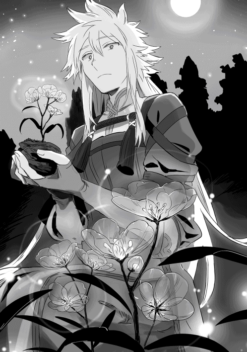
これ、根ごと持って行ったら鉢植えにできないだろうか......群れて咲いていた方が綺麗だが。そっと数本を根を切らないように土ごと採取する。
できるのか。
しおれる様子もなく土ごと採取できたことに気をよくして、火の種にも挑戦して、こちらは失敗。何故だ。火の種は土ごと採取したつもりだったのに、ポーチで普通に採取した分が増えているだけだった。幾種類か試すと風の実が土ごと採取に成功。これは相性の問題だろうか祝福の問題だろうか......。
「何してるでし？」
「鉢植えとかできんもんかとおもって」
「アイテムポーチがあれば、切花でもずっとしおれないんじゃないでしか？」
「そうなんだが、まあ気分的に。実際土ごと取れるのあったしな」
「ん～ん、あとで栽培とかできるでしかね？」
「オレは全部刈っちゃったあとだ！」
うん、私が土ごと採るなんて悠長なことしてたからね。いやでも早すぎだろうレオ。
「家持てるようになればいいんだけどな」
「この世界の雰囲気からいうと、そのうち持てそうでしよね」
「金かかりそうだぜ！」
「今からためておかないと」
他は『質のいい薬草』の中に『夜露の綿』と『月光の紡ぎ草』があった。
「この二つは名前からして裁縫の素材かな？」
「多分そうだと思うでし」
「薬草と交換する？」
「取れる量的にこっちの方が高くないでしか？」
「どうだろう？ 両方はじめて見るからわからん」
「町に着いたら、ＮＰＣに売る時の値段見て交換お願いするでし」
「オレのもいいぜ～！」
「あ、薬草とか住人に売り払うなら売ってくれ」
「同じくでし～」
ちなみに試したら『夜露の綿』と『月光の紡ぎ草』は土ごと採れた。こちらも二本ずつ確保。
採掘組も初見の素材が取れたらしく、ほくほくしながら川辺に戻ることにした。川に魔物がいる様子はいまのところなかったので、野営するなら川辺で、ということになったのだ。真っ直ぐ戻ったので夕食を食べた場所より北寄りだ。
「陣敷いて落ちるとして、シャドウも途中で切れるけど、かけてもらっていいか？」
「了解」
何もしなくても五分ほどで切れるので本当に気休めだ。
「集合は現実時間で三時でいい？」
「おっけ」
最初は交代で見張り予定だったが、ログアウトしたら起こせないだろ、少人数で熊も無理！ という話になり、陣を信じて結局全員寝ることにしたのだ。起きたらファストの神殿とかは嫌だな。
トイレを済ませてお茶を淹れてＰＣで熊肉の食べ方を調べている現在。バターも【混ぜる】で作れそうだ。現実世界では片付けが大嫌いなので、実はそんなに手の込んだ料理はしない。作るのも食べるのも好きなのだが。
猟師煮をするには味噌がない。味噌や醤油がないとなると無難なのがワイン煮かビール煮。ワイン煮作って、あとはもう鹿焼肉の時に一緒に焼いてしまう方向でいいか。って『煮込む』を持ってないな。街に着いたら『煮込む』のレシピを買おう。今回は焼肉の方向だな。金を貯めようと思うそばから欲しいものが出てくる罠よ。
午後三時にログイン。
隣でペテロも起きていた。顔にかかった髪を背中に払いながら挨拶する。
「おはよう」
「こっちは夜中だけどおはよう」
ペテロとネットゲームで一番付き合いが長いのが私であるため、戦闘面を考慮しないでペアになる時は自然と組むことが多い。今回も一緒のテントはペテロとだ。他の四人も起きだしたようだ、無事で何より。
食事や生産作業中は光魔術の『ライト』で光源を出している。移動中もレベル上げ方々使おうかと思ったが近くが明るいと遠くや周囲が見え難くなったため、止めている。暗視持ちにはむしろ邪魔だった。世の中には【暗視】を取らずに松明を治癒士や魔術士に持たせて戦う、縛りプレイとしか思えんことをする奴らもいるそうだが、うちは全員が暗視持ちだ。
とりあえず作ってあった生クリームを更にまぜ、バターを作る。リアルではペットボトルに生クリームをつっこんで一時間近くシャカシャカ振ってもできるようだが。ゲームってすばらしい、かき回してもＥＰが減るまではキツさもダルさもないしな。ついでに【攪拌】を覚えた。ローストが少々待つかな、くらいなのだ、かき回す時間くらいなんでもない。
食事にコーヒー、トースト、バター、ベーコンエッグ、オレンジジュースを配る。ベーコンエッグは半熟が私、ペテロ、お茶漬で、他三人はしっかり火が通ったものだ。
「醤油が欲しい」
「ソース」
「ケチャップ」
「塩コショウ」
「マヨネーズ」
「めんつゆ」
醤油が欲しいとつぶやいたら色々返ってきた。全員嗜好が違う模様。本日の目玉焼きは塩胡椒です。
醤油とめんつゆ以外は作れそうだが。大豆は何処だ......。
ベーコンエッグをバターを塗ったトーストの上に乗せてかじる。半熟の黄身がトロッと流れ出し、ベーコンとパンと絡む。
進路に現れる熊を倒していると、魔物の中にホウセン火というダジャレのような名前の魔物とカイフク草が混ざるようになった。カイフク草はその名の通り攻撃を受けた敵を回復してしまう。
ホウセン火は火で包まれた種を高速で主に後衛を狙って飛ばしてくる上、その攻撃には一定確率で『燃焼』の効果がつく。そして熊に攻撃力ＵＰの補助魔法までかけて来るのだ。
幸いＨＰはそう高くなく、シャドウからの不意打ちプラス、シンか菊姫の一撃で倒せる。そのうち数が増えてきたり、補助を使うような敵の耐久が上がってくると、何か対処が必要になるかもしれない。今は力押しだけれど、【仕手】で止めるか、闇魔法レベル３で覚えた『沈黙』を使うべきだろう。全体魔法が欲しいところ。レベルは22になっており、とうとう【闇魔法】のレベルが【剣術】に並んでしまった。
そのうち川が跨げるほど細くなり、とうとう木々の根の間から湧き出る泉となった。
「渓流釣りはどこ!?」
「もっとアップダウンのある地形でないと無理だろ」
「まあ、何かいるっぽいし釣ったら？」
「ぐぬぅっ」
納得いかない顔をしながら、それでも釣り糸を垂れたレオにコーヒーを渡し、こちらも休憩。砂糖とミルクは面倒で各自入れろとまとめて先渡ししている。因みに一度コーヒーをアイテムポーチに入れてしまうと、砂糖を入れても甘くならなかったらしい。【料理】持ちが入れると後入れでも甘くなるようだが。
「ここ砂がとれるよ、『高品質な磨き砂』だって」
「砥石の一種かな」
採掘組は泉の縁で砂を浚っている。水を鑑定したら、こちらも『高品質な水』となっていたので、水を樽の水と入れ替えている。飲料的にも鍛冶の焼き入れ用としても使えるようだ。
「樽くれ」
「やらんわ！」
まさかの樽人気。やらんと答えたが、まあ調理済み料理だせば食事は問題ないし、茶用はひと樽あれば十分足るだろう。十樽買ってるしな！
というわけで、ひと樽ずつ全員に渡す。街に着いたら樽を買い足そう。空樽になったら酒をこれに入れて時間促進をかけてみるつもりだったのだが。オーク製の樽とかあるのだろうか。
レオが釣った魚は『アオウオ』。ワカサギに似た姿の青みを帯びた十一から十三センチくらいの魚だ。フライにして食べたがクセがなくほんのり甘い。旨みの強い魚で、揚げるそばから無くなるくらい旨かった。当然のごとくビールを要求してくる三人組もいたが。
七味を作る材料はそろうだろうか。チンピはオレンジの皮で代用......は効かなそうだな。
【揚げる】の料理方法がレシピ８なせいか、このアオウオがランクが高めな食材なせいか、料理が１上がった。朝も１レベル上がっているので、私にしてはかなりのハイペースではないだろうか。
《お知らせします。セカンのフィールドボス『ゴブリンキング』がロイ・クラウ・カエデ・モミジ・暁・シラユリによって討伐されました》
「またこの人たちか〜」
流れたワールドアナウンスにペテロが反応する。
「また？」
「セカンの開放もこのパーティーだよ」
「ファストのフィールドボスもこのパーティーじゃなかったっけ？ いわゆる攻略組トップのパーティーですね」
「ボス初討伐すると特典あります、のアナウンスの人達な」
「和風な名前多いのに漢字が一人だけだな」
「ファンタジーだと思うと、ついカタカナにしてしまう」
「うむ、人のことは言えぬ」
こうして話をあさっての方向に進めながら北を目指す。敵はトカゲも出たけど熊が赤黒く大きくなりました。
その後も戦闘を続け、レオの願いのせいか途中に小さな池が一つ。
そこで、レオの釣り上げた魚を予定通り串に刺して塩焼きを食べたのだが、気がついたら肉も焼いていた。
こんがり焚き火で焼かれた塩を振っただけのトビウサギの肉。皮がパリパリで中は肉汁が......ってＥＰの回復量は少ないが、トビウサギは食材レベルが低いためパンと同じく評価９がついていた。すまんな、レオの釣ったヨルマス。そのうち貴様も高評価出せるようになってやる。
「あの黒いのは何だ？」
進行方向からやや右にずれた、シンの視線をたどると地面に黒い円形の場所がある。
「なんか小さな子がいる？」
【遠見】も欲しくなるな。あれもこれも欲しい！
「ペテロの出番」
「何故!?」
「身に覚えがあるくせに」
お茶漬もまだネタを引っ張っている。
「見てみようぜぇ！」
観察する間もなくレオがいきなり走り出した、警戒心というものは無いのか！
「助けて〜」
黒い泥に足を取られていた男の子が、泣きながらこちらに手を伸ばす。幼女じゃなかった模様。
『ぎゅぎゅぎゅぎゅっ』
普通のフィールドから隔離されたイベントフィールドに移行したことがわかる、聞こえていた音が消えたことで感じる違和感。今までさわさわと鳴っていた葉擦れの音がぴたりと止んでいる。
「ああん、嫌な予感でし」
「フィールドボスかな？ 街解放のエリアボスかな？」
「まだ街に入れないとかイベント遭遇がないわけだが」
いきなりボスなのか？
「街道無視して来たから」
「ボスの場所を聞く前にたどり着いてしまったか」
「わははは」
黒い泥濘から何かが出てくる。現れたのは一〇トントラックほどの大きさの巨大なトカゲ、デイドリザード。真っ黒な姿は、泥に潜るためか思いの外つるんとしている。
菊姫の攻撃を合図に、いつもの配置に着くためにシンとレオが走り出す。
「【火】の『エンチャント』！」
「【闇】『シャドウ』」
シンは自分にエンチャントをかけ、私はシャドウをかけてレオの姿を消す。
「【オンリーワンエネミー】でし！」
「いってっ！」
いつもの手順だが、攻撃は菊姫ではなくシンとレオに飛んだ。走っていたシンが横滑りし、攻撃を受けてシャドウが解けてレオの姿が見えてしまっている。
「補助魔法系狙われるのか？」
「味方への魔法控えて」
お茶漬けから指示が飛ぶ。
「【ハイドインシャドウ】！ 子供は木の裏に置いてきた」
ペテロの参戦。
「了解！」
「【龍】の『突』、【鳳】の『蹴』──」
シンのコンボが始まった。必要ＥＰの戻りの関係でまだ四連までなのだそうだが、コンボで使えるスキルは確実に増えている。技の出が早い【龍】は水属性、コンボ効果は速さ上昇、【鳳】は火属性及び貫通属性、コンボ効果は攻撃力上昇。コンボ効果は、一定時間もしくはコンボが途切れるまで上乗せされてゆく。属性の色のエフェクトを振りまきながら拳を振るい、蹴りを放つ姿は中々格好いい。
さて、私も仕事を始めよう。
「【木】『ウッドランス』」
起点は土属性らしいデイドリザードの弱点属性、先の尖った木の槍がデイドリザードに飛ぶ。
「【風】『ウィンドボール』」
木火土金水の間に風を巡らせる。【廻る力】基本はやはり『木・火・土・金・水』の五行が元で、他に風がまわっているイメージなのだろうか。あるいは大気か。五行にしてもこの世界と季節があってない。だが弱点も風を抜く相克になっているようだ。なんでこんなに詳しいかと言うと、前のゲームで陰陽師をやっていたからである。
道中の敵は全てを終える前に砕けてしまうので試したことがなかったが、【廻る力】の初お目見えだ。
「うをう！ 痛え！」
「ふぎゃっ！」
「痛っ！」
デイドリザードが大きく尾を振って方向転換をする。元の泥濘はそのままに、移動先に新しい泥濘が生み出される。泥濘の中ではＨＰが徐々に減ってゆくというダメージを食らうが、近接は踏まずには済まされない。
「うわっ！」
何か食らったが、一瞬すぎて何を食らったのか判別出来ない。目の端を何かが掠める。お茶漬に向けられたそれを見て、自分が食らったのがデイドリザードの細い舌だと理解する。ピンクの舌が伸びる光景はコミカルだが痛い。
「【風】『ウィンドボール』！ お茶漬、そろそろ移動すると思うけど、精霊召喚するか？」
「任せた！」
四度目の移動をするデイドリザード。泥濘の蓄積ダメージや今までの舌のダメージなどで全員が平均的に減っている。【廻る力】にチャレンジ中だが、この際仕方がない。
「水の精霊『ルーファ』！ 来たりて癒せ！」
私の手から水があふれ、『ルーファ』が姿を現す。全員の頭上を飛びながら水の雫を振りまき、ＨＰの回復をした時には消えている。上手く水の順番に合わせはしたが、果たして繋がるか。
「次は私ゆく」
「【クロススラッシュ】でし！ じゃあ三番いくでし！」
「【獬】の『伏』！ 四番！」
「じゃあ最後行くぜぇ！」
シンの使った獬はカイチのカイか？ 『伏』は攻撃を回避しながら放つ動作だ。デイドリザードの移動時の尻尾に上手く合わせている。
「これ、もしかして子供狙い？」
ハイドインシャドウをかけ終えて所定の位置に戻ると、少し首を傾げてペテロが言う。ペテロの言うように蛇行しながら続く泥濘は、子供のいる木に向かって伸び続けている。
「やっべ！」
「あとどんくらいだ？」
シンとレオが慌て出す。
「三回、いや二回移動したら舌が届く！」
「移動するの早くなってるでしよね!?」
再び移動するデイドリザード。
「きゃー！ 言ってるそばからでし！」
「いててて！ 精霊やめてブッこめ！」
「ああ、ちょうど巡った」
私の周りにキラキラと呪文のような光の帯が現れ、ゆっくりと回る。どうやら精霊も水の属性として無事カウントされた模様。さあ、巡らせた力、どんなものか！
「【木】『ウッドランス』！」
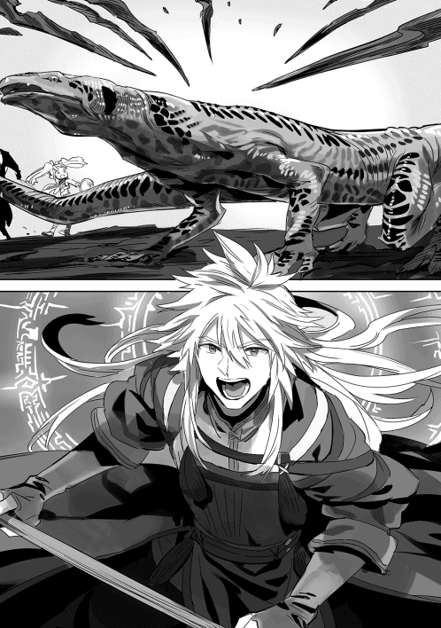
「うを！」
「でっかいでし！」
空中に現れた、人より大きな六本の巨大な槍。一拍の間の後、質量に比例したスピードでデイドリザードを貫く。
六箇所を地面に打ち付けられて、巨大な体がのたうつ。なかなかエグい。
「攻撃！」
お茶漬が、唖然として動きが止まったパーティーメンバーに短く叫ぶ。攻撃が再開されると、デイドリザードはすぐに光の粒となって消えた。
「串刺しだ～！」
「何をしたの？」
レベル３の木魔術だというのにあの威力。そのうち風耐性持ちとか出てこない限りは、手間はかかるが嬉しい決め技だ。因みに「モッカドゴンスイ」と陰陽の順番で覚えているため、風を挟まない簡易タイプ？ は何処に風が来るのか、うろ覚えで今は使えない罠。やっぱりあの本買おうと何度目かの決意。
すっかり自分が魔法「剣」士なのを忘れたまま、無事デイドリザードを倒した。
《ボス初撃破報酬『鉱物好物』の腕輪を手に入れました》
《称号【リザードスレイヤー】を手に入れました》
《お知らせします。フォスのボス『デイドリザード』がレオ他五名によって討伐されました》
「おおお??」
「レオ！」
「やったでし？」
「初だったの？」
「マジか？」
「ひゃっほおおぅっ！」
流れたワールドアナウンスに歓声を上げる。レオ以外、名前を非公開にしているため、アナウンスがレオとその一行みたいなことになっている。
《デイドリザードの皮×４を手に入れました》
《デイドリザードの短剣を手に入れました》
《デイトリザードの魔石を手に入れました》
《玉鋼×10を手に入れました》
《体力の指輪を手に入れました》
《転移石『フォス』を手に入れました》
「お兄ちゃん、お姉ちゃん！」
幼い子供の声に振り返る。完全に存在を忘れてました。
「坊主のこと忘れてた！」
本人の前ではっきり言うな、レオ。
「僕、フォスにおうちがあるの」
礼を言いながらも、怖かったと泣いてしまった男の子を落ちつかせるのにローブで包んで温かいミルクを飲ませている。落ち着いてきたところを見計らって家を聞くと、ファストでも解放されているセカン・サーでもない街の名前がでた。街の解放イベント確定のようだ。
もう日が暮れかけていた。全員に『シャドウ』をかけ、ペテロがドイルと名乗った男の子を抱えフォスへと移動。街に着くと門は固く閉ざされていたが、強めに叩くとのぞき窓から若い衛兵が顔を出し、事情を話すと門を開け、脇にある衛兵の詰め所へと案内された。
案内してくれた衛兵に待つよう言われ、もう日が暮れるというのに大変だなと他人事のように思いながらおとなしく待つ。
「鉱物好物って採掘数＋１か～」
「採取と交換して欲しいでし」
「いいね」
「採掘取ろうかな」
「譲渡不可か〜」
「なんでダジャレなんだろ」
「これ、精霊いなかったら負けてたな」
「だな〜」
「疲れたでし〜」
「あ、装備の修理するよ」
待つ間に、お茶漬と菊姫が修理してくれた。私も早く調薬して薬を融通できるようにならなければ。
ドイルは道中、レオと意気投合したらしく、抱えていたペテロではなくレオになついていた。街に着くころには笑うまでになり、本来の気質らしい朗らかを通り越して、いたずらっ子っぽい表情を見せていた。
「おお！ ドイルか」
詰め所に先ほどの若い衛兵を従えた厳つい壮年の上司らしい男が入ってきた。もう勤務時間でないのか、若い衛兵と違って私服のような格好だ。
「冒険者諸君、ありがとう。ドイルが居なくなってから、西の平原にいる魔物が移動してきたんじゃないかとかと噂になってな。確認がとれるまで街を閉鎖してたんだ。ドイル、なんで森なんかに行ったんだ？ 一人で森に入るのは止められていたろ」
「ごめんなさい。チッチが逃げちゃったんだ......」
チッチは道中、紹介された懐で丸まっているリスの名だ。
「今、うちの人を呼びにやっている。たくさん心配をかけたんだ。しかられるのは覚悟しとけよ？」
魔物が増えれば、討伐が終わるまで魔物が中に入り込まないよう門を閉めてしまう。もともとそのための街壁だ。また壁で囲まれた中に住む人は「われわれの街」の意識と連帯感を持ち、古本屋の老人が見せたように、よそ者と距離を置く傾向にある。異邦人を入れずに追い返した理由だろう。
「まあ、何にしてもよかった。褒賞金をかけてドイルを探していたところだ、君たちは褒賞を受け取ってくれ。魔物の移動も確認できないとの報告も受けている。早速門を開けよう」
《フォスの街が解放されました》
本日二度目のワールドアナウンス。
「さて、神殿に転移登録しにいくか～」
「お～～～」
褒賞金は四〇〇〇〇シルと破格だった。先を急ぐ攻略組って、装備とかどうしているのかと思っていたが、これだけ貰えるなら、フィールドで魔物を狩って採取や採掘で地道に金を貯める時間は短くて済むだろう。
これから先、プレイヤー同士の売買や生産が活発になれば、先に進んでいち早く新しい素材を得ることで利益を得られるだろうけれど。
ホムラ Ｌｖ．22 Ｒａｎｋ D 職業 魔法剣士 薬士
ＨＰ：６０５ ＭＰ：７７８ ＳＴＲ：34（＋１） ＶＩＴ：22 ＩＮＴ：43
ＭＩＤ：16 ＤＥＸ：15（＋１） ＡＧＩ：22 ＬＵＫ：14
ＮＰＣＰ【ガラハド】【－】
称号
■一般
【交流者】【廻る力】【謎を解き明かす者】
■神々の祝福
【ヴァルの祝福】【ヴェルナの祝福】
■スレイヤー系
【リザードスレイヤー】
スキル（１ＳＰ）
■魔術・魔法
【木魔術Ｌｖ．３】【火魔術Ｌｖ．５】【土魔術Ｌｖ．３】【金魔術Ｌｖ．４】【水魔術Ｌｖ．３】【☆風魔法Ｌｖ．３】【光魔術Ｌｖ．２】【☆闇魔法Ｌｖ．８】
■剣術
【剣術Ｌｖ．９】【スラッシュ】【刀Ｌｖ．１】
■召喚
【白Ｌｖ．１】
■精霊術
水の精霊【ルーファＬｖ．２】
■才能系
【体術】
■生産
【調合Ｌｖ．１】【錬金調合Ｌｖ．１】【料理Ｌｖ．６】
■収集
【採取】
■鑑定・隠蔽
【道具薬品鑑定Ｌｖ．３】【植物食物鑑定Ｌｖ．４】【動物魔物鑑定Ｌｖ．４】
【スキル鑑定Ｌｖ．２】【武器防具鑑定Ｌｖ．２】【気配察知Ｌｖ．３】【気配希釈Ｌｖ．３】
■強化
【腕力強化Ｌｖ．２】【知力強化Ｌｖ．４】【精神強化Ｌｖ．２】【器用強化Ｌｖ．２】
【俊敏強化Ｌｖ．２】【剣術強化Ｌｖ．３】【魔術強化Ｌｖ．２】
■その他
【ＨＰ自然回復】【ＭＰ自然回復】【暗視】【地図】【念話】【装備チェンジ】
「すまん、ボスを倒したパーティーか？」
「おう！ 倒してきた！」
「ちょっと、あんたたちレベル低いじゃない。私らが探している間にそんなんで倒したの!?」
衛兵の詰所から神殿に向かう途中で絡まれた。男の方はともかく、女の方は言い方と表情に棘がある。お茶漬とレオに任せて私はスルーしてよう。
「特に魔法剣士！ 低過ぎよ！」
と、思ったら名指しで絡まれた。うん、昨日仕事だったしね。私だけさらに３レベル低い。そう思うと魔法「剣」士じゃなかったら、物理防御が低すぎて精霊があってもまずかったかもしれない。
「盾と回復の上手さに助けられています」
にこやかに答える。私は機嫌が悪くなり、その場で発散できない場合、どんどん丁寧語になってゆく癖があるのだ。
「せっかくあたしがロイと競ってたのに横からかっさらって！」
絡んできた女はきつめではあるが黒髪で、出るとこでて引っ込むところ引っ込んでいる美人なのに菊姫並みの身長。それがヒス起こしていて歪んだ口元の顔を向けて詰ってくる。
魔物の方は未だレベルが見えないが、動物魔物鑑定が２になった時点で街中のプレイヤーのレベルは見えるようになっている。相手が見たならと鑑定してみればレベル29だった。お茶漬達と４つ差は大きいのか小さいのかわからんが、序盤であることを考えれば大きいのだろう、たぶん。
「黒百合やめろ」
「ふん！ せっかくの勝負に水を差して！ どうせダウンもとれてないんでしょ!!」
などと意味不明な供述をしており......ではなく言い捨てて、自分のパーティーメンバーのところへ戻っていった。
見る人によっては良いのかもしれんが、あの背丈で巨乳ってバランスが怖いのだが。顔だけ、胸だけ、見ていれば気にならないが全体を見てしまうとダメだ。目を背けたくなる罠よ。
「すまん。オレのパーティーとボス初討伐争ってたんだが、丸一日見つけられなくってな、気が立ってんだ。いつもはもっと......いや、いつもあんな感じかな......」
「フォローは最後までしろ」
「というか、友達なの？」
「ここの外で絡まれて、勝負を挑まれて、レイドあったら組もうと誘われて、パトカ交換はしたかな」
レイドとは複数のパーティーで攻略するボス戦などのことだ。たぶんあるのだろうけれど、まだあるかどうか確認されていない。
立ち話で色々聞いたところ、ファストのフィールドボスを倒した時に名前が流れたことで、その後黒百合に一方的にライバル宣言されて絡まれているらしい。黒百合はサーのエリアボスとフィールドボス初討伐者とのこと。
「ご愁傷様というか、せめてツンデレだといいね」
「どっちかってーとヤンデレになりそうだがな！」
「刺されないようにするでし」
「ちょ、それフォローじゃないだろ！」
「フォローしたつもりはないし」
初対面の相手にもなかなかひどいペテロ。ロイたちと笑いながら別れて、神殿を目指す。初討伐を取ると色々な人が寄ってくるようだ。
『異世界』からログアウトして、現実世界へログイン。
ベッドから半身を起こし、バイザーを外す。だいぶ改良されて使いやすくはなっているが、何処か当たっていたのか、少しこめかみが痛い。風呂は済ませているが、顔を洗ってさっぱりしよう。
ロイたちとはフォスの宿屋が一緒になり、あれから宴会をして仲良くなった。もし二パーティー以上での攻略や、人数が足りない時は一緒に組もうとパトカの交換。お茶漬が攻略組と呼んでいたし、一緒にいた黒百合がアレだったので、効率重視な人かと少し警戒したが、なかなか気のいい兄ちゃんだった。攻略は楽しいのだが、そのためだけにスキルや、やりたいことをそぎ落として、捨ててゆくことはしたくない。
次はセカンかサーのボス戦。転移の解放が目標だが、移動に日がかかるので、予定は未定。フォスの街はもちろん、まだファストの街も見ていない場所がたくさんある。
料理以外の生産にも手をつけたい。古本屋に行って、売れてしまう前に例の本を買わねば。今なら懐が暖かいので、どちらも問題なく実行できる。
お茶を飲みながらレシピの検索をする。私の日常が、仕事以外は『異世界』が中心に回りそうな予感。『異世界』にいない友人たちへの不義理にさえ気をつければそれも問題ない。とりあえず、メールを入れて近況を伝えておこう。幸い、多かれ少なかれネットゲームをしている友人たちだ。連絡を入れておけば、多少の不義理は笑って放置される。むしろ『異世界』に会いに来るかもしれない。
レシピの検索を終え、楽しんで夢中になっている近況を伝えるためメールを書き始める。
「新しいゲーム始めました、と」
◆ ◇ ◆
運営Ａ「どうだ？ 問題なく進んでるか？」
運営Ｂ「はい、今の所順調です」
運営Ｃ「ただ、チュートリアル飛ばすプレイヤーが思いのほか多いです」
運営Ｂ「冒険者ギルドが混みすぎですね」
運営Ａ「まあ、チュートリアル終了したプレイヤーから話が広まれば、混雑はある程度解消されるだろう」
運営Ｃ「あ、」
運営Ａ「あ？ どうした？」
運営Ｃ「もうガラハドと会話してるプレイヤーが！」
運営Ａ・Ｂ「はあああああああっ！！？」
運営Ａ「Ｂランク以上のキャラは、それぞれ設定された目的のヒントを与えないと、一瞥くれただけで名前も名乗らないような設定じゃなかったか？ なんでだ？ バグか？」
運営Ｂ「少なくともフォスに行かないと、ガラハドは最初のヒントはないですよね？」
運営Ａ「他のＮＰＣもチェックしろ！ 特に騎士！」
運営Ｃ「ちょっと、一緒に飯食い始めちゃったログが上がってきてるんですが、これ得意料理やばくないですか？」
運営Ａ「なんでこんなに食ってるんだ？ 誰だ、ガラハドを健啖家に設定したの！」
運営Ｂ・Ｃ「......」
運営Ａ「......私だったな」
運営Ｂ「まあ、豪快な性格設定なキャラですからね......」
運営Ａ「ファストにいる住人は好感度が上がるか、何か対価を渡さんと、おごったりしない設定のはずなのに......。なんでだ......」
運営Ｃ「ＥＰ減りますし、何か食べる前におごってもらうってムズイですよね」
運営Ｂ「修正いれますか？」
運営Ａ「いや、バグでない限り、極力修正は入れたくない。自力取得したものだ。【異世界】はそういうゲームなわけだし。これはちょっと、いや、だいぶ極端だが」
運営Ｂ「むちゃくちゃ極端ですよ！パトカ交換してるし！！！！！」
運営Ｃ「まあ、弱体イベントもありますし......」
運営Ａ「それにしても、よりによって『アシャの庭の騎士』かあああ!!」
運営Ｂ「大丈夫ですよ、理由もなくレベル上げ目的で呼び出すと、好感度減りますし」
◆ ◇ ◆
運営Ｃ「世界の謎アナウンス入りました。神殿の謎解き終了」
運営Ａ「思ったより早いな。神殿？ どう考えても時間的に手順を踏んでいないよな？ 壁のあれだけのヒントで解いたのか？」
運営Ｂ「もっと小さい謎を解いていくかと思ってたんですが、神殿解かれちゃいましたか」
運営Ｃ「ガラハドのパトカもらった人です」
運営Ａ・Ｂ「ぶっ！」
運営Ｃ「ルバとも接触してますね、この人」
運営Ｂ「会ったくらいじゃ平気だろう。ルバが鍛冶を再開するためのヒントは、別の国だ」
運営Ａ「まかり間違えて剣を打ったところで、素材と装備ランクの壁があるしな」
運営Ｃ「視線を合わせてくれないのは何故っスか？」
運営Ｂ「......この人、ちゃんと古本屋クエも始めてますね。普通はここで手順踏むのに、すでに【光】【闇】持ってる状態で古本屋はやばくないですか？」
運営Ａ「......」
運営Ｃ「って、ああああああああああああっ！！！！！！！」
運営Ａ「何だ!?」
運営Ｃ「この人、白き獣ゲットしてる！！！！！！」
運営Ｂ「はあああ？」
運営Ａ「だ、大丈夫。神殿の『白き獣』は早いうちにゲットされることは想定内だ」
運営Ｃ「脂汗が見えるっス」
運営Ｂ「Ｃ、口調。──それにしても、このプレイヤー、フラグ回収早すぎるというか」
運営Ａ「立てる前に回収してるみたいな勢いだな」
運営Ｃ「この時点でヴァルの祝福確定ですし」
運営Ａ「！ 神殿の謎と白き獣とで、ヴァルに二回会う、のか！」
運営Ｃ「ヴァルの性格設定から言って、祝福確定でしょう」
運営Ｂ「こんな初期から祝福持ちってＡＧＩどうなっちゃうんでしょうね......」
運営Ａ「不正してフラグ回収しているわけでもないし、ただフラグ回収がやたら早いって言う理由で修正は難しいだろこれ......」
運営Ｂ「フラグ回収多いからって修正もできませんしね......」
運営Ｃ「手順踏まないとクリアできないようにしちゃいます？」
運営Ａ「それじゃ自由度が失われるだろ。従来通りのゲーム的『お使いクエスト』でも、『他の方法』でもクリアできるようにわざわざ作ってるんだし」
運営Ｃ「なんなんでしょうね、この人？」
運営Ａ「そのプレイヤーのログは、時々確認してくれ」
運営Ｂ・Ｃ「了解しました」
◆ ◇ ◆
運営Ｂ「あー......」
運営Ｃ「なんスか？」
運営Ｂ「例のフラグ回収プレイヤー」
運営Ｃ「なんスか？」
運営Ｂ「今度はヴェルナに会っちゃったログが......」
運営Ｃ「......」
運営Ｂ「ランダムとはいえ、最初の満月はこの大陸の森が出現場所だったんだな」
運営Ｃ「......」
運営Ｂ「しかし、ソロでフォスとの間の森をさまよってたのか？ 見たらまだレベル20じゃないか」
運営Ｃ「......」
運営Ｂ「レベル20で遭遇とは、ラックの上がり方、すごそうだな」
運営Ｃ「......」
運営Ｂ「住人との出会いといい、神々といい、遭遇するだけならともかく、フラグ回収率高いなあ」
運営Ｃ「......」
運営Ｂ「あ、白き獣を戦闘に喚んだログがない。なんでだろう？」
運営Ｃ「......」
運営Ｂ「小さいせいで、戦闘能力に気づいてないのかな？」
運営Ｃ「......」
運営Ｂ「開始直後から、白き獣のレベルが上がるのは勘弁してほしいからいいんだが」
運営Ｃ「......」
運営Ｂ「おい、なんかしゃべれ！」
運営Ｃ「嫌っス！ 俺は何も聞いてないッス！」
運営Ｂ「現実逃避するなああああああああっ！！！」
運営Ｃ「嫌っスゥゥウッ！！！ 調整のために残業するのは嫌あああああっ！」
「レオ、ガラクタ買うのやめて？」
「わはははは！」
お茶漬に注意されたレオが手に持っているのは、妙なフォルムをしたリュック。アイテムポーチでさえなく見た目と同じ容量しかないごく普通の鞄だ。普通というには見た目が少々アレだが。
「うっわ！ ひくわー」
シンがゲラゲラ笑いながら言う。
「アフリカのキフウエベ族の仮面みたいだな」
あっちは木彫りだがレオが手に持っているのは硬い革でできているようだ。
「部族まで特定しないで」
「そういう趣味だったの？」
お茶漬とペテロが私に冷たい目を向ける。
「博物館とか美術館の展示で見る分には楽しいぞ。私は買わんが」
あちらの仮面にはやっつけ仕事か？ という適当な造りのものもあるが気合の入った仮面には目を奪われるし、印象に残る。ある種の美しさもあると思う。だが手元に置いておきたいかと問われれば個人の好みによるだろう。
「それ買ったらお金なくなるでしよ？」
「始まったばかりなんだから装備を優先したほうがいいんじゃない？」
「一点ものだぜ！ 一点もの！」
諭す菊姫とペテロの言葉にも鞄を離さないレオ。
「せめてラウンドシールドだったらよかったのにな」
アイテムポーチとして使えないなら装備という観点から見れば、レオの持つ鞄はお茶漬のいうようにガラクタだ。
「ホムラも買い食いはほどほどにね？」
「酒より単価安いから大丈夫です」
ペテロの注意に目をそらして答える私。目の端に映った菊姫も同じく明後日の方向を向いた。
このゲームはやばい。何がやばいかって買い食いをはじめとして物欲が！ アイテムポーチのおかげで持ち運びの汁垂れも気にしなくていいし、後で食べても出来たて！ 私の荷物に屋台の美味しそうなものが詰まっている現在。明後日のほうを向いた菊姫もビールやワインをガンガン飲んでいたし、同じく荷物に詰まっていることだろう。ちなみに注意してきたペテロも私にそっと酒の材料を渡してきたのでやはり懐は寂しいはずだ。
防御力はないが、出来のいい細かな細工や装飾のある服、アクセサリー。肌触りの良いタオルやハンカチ、女性には良い匂いの香水や化粧品。ゲームの攻略に関わらない部分での誘惑物が現実世界と同じように転がっているのである。
しかも現実世界と違って戦闘や依頼をこなせばその日暮らしも可能なのだ、財布の紐が緩む緩む。
「一点ものじゃ後から来たらなくなちゃってるかもしれねぇよな！ 今買っとかないとな！」
「！」
ガハハと笑うシンの不自然な擁護にお茶漬がバッとシンの上着をめくる。めくられた上着の下から出てきたのは新しい銀のドクロのバックルがついたベルト。
よく考えたらシンはいつも上着の前は開けっ放しなのに、今日はきっちりとめていたのも不自然だ。どうやら叱られるのがわかっていてベルトを隠していたらしい。
「コレは金が溜まってからにしろと小一時間！！！」
「ああ〜。買っちゃったんでしね〜」
「お高いやつだ」
絶望的な顔をしているお茶漬と呆れた声の菊姫、笑いを含んだペテロの声。シンのベルトは防御力も特殊効果もないオシャレ着で、装備としてはレオの鞄と同じく役に立たない。そしてどちらも適正レベルの装備よりも高いという現実。
「だって、一点ものだったんだぜ!?」
「今買わないとなくなっちゃう！」
「装備を揃えてからにしろおおおおおおおおおっ！！！」
お茶漬の叫びが響き渡る。
◆ ◇ ◆
「おっと、ホムラだ」
ガラハドが離れた露店の前で騒ぐ一団に目を向け足を止める。
「情報をくれた人？ どの人よ」
「まさか変な仮面を抱えてるヤツじゃないだろう？」
赤い髪の大男、ガラハドの連れは黒い髪の美女と白い髪の美男。
「仮面は違うから安心しろ。──あの青いような白いような長髪の男だ」
「ふむ。情報はともかくお前が元気になった礼はしたいが、そういう雰囲気じゃないな」
「本当、彼の人がいなくなったせいで沈んでたものね」
「......別にいつもと変わんねぇだろ」
連れの二人の言葉に少しばつが悪そうに答えるガラハド。彼の師匠、養い親とでもいうべき騎士が行方不明になってもう一年近い。騎士たるものの手本であり多くの者の憧れだった存在は貶められ、国では名を出すことさえ憚られる。今は生死さえ不明だ。
ガラハドに鬱々としたそぶりを表に出したつもりはなかったが、友である二人にはバレていたらしい。それは今までガラハドが虚勢を張っていることを見透かしながらも、その上で気づかないフリをしてくれていたということだ。
「同じ街にいるならまた会うでしょ」
「一人の時に会ったら酒でも奢ろうか」
嬉しそうに笑いあう二人に、ガラハドは思ったよりも心配をかけていたらしいことに気づく。ホムラと話したことが浮上のきっかけになったことは確かだが、やけにならずにいられたのはこの二人のおかげだ。
「とりあえず今日は飲むか！ 奢るから二人とも付き合えよ！」
「ふふ、いいわよ。財布カラにしてあげるから覚悟なさい」
「目的の剣の作製依頼をしてからだな。時間はたっぷりあるよ」
「おう！ とっとと済ましちまおうぜ」
笑いながら歩き出す三人。
ホムラと三人が再び出会うのはもう少し先のお話。
【はじめての】雑談 ｐａｒｔ１【異世界】
１ 名無しさん
たてた
ギルドの受付まで遠い
２ 名無しさん
>>1
ありあり
混んでるよなあ。早く戦闘行きたいのに！
３ 名無しさん
>>1
おつおつ
たどり着ける気がしない
４ 名無しさん
乳が揺れるぜ！ 自前の！
５ 名無しさん
限定バイザー買っちゃったw
職業何が多いんだろ。周囲にいる人見てると剣士が多い？
６ 名無しさん
冒険者ギルドパンク状態
運営無能
７ 名無しさん
ああああ、キャラちゃっちゃと作っちゃえばよかった！
待ち時間がモッタイナイいいい！
８ 名無しさん
プラム可愛い。ショートボブいいなあ
９ 名無しさん
エメル一択！ お胸がたゆんたゆん
10 名無しさん
ナナ
ポニテポニテ！
11 名無しさん
おっぱいおっぱいおっぱいは正義
12 名無しさん
うずまりたい胸
13 名無しさん
三人とも胸ありすぎ！ 貧乳を一人入れるべき！
14 名無しさん
暇だと胸の話題になるのかあんたら？
──中略──
881 名無しさん
おお？
チュートリアルで冒険者ギルドの
カード手続き混雑スルーできるって
882 名無しさん
ホムラって人が叫んで教えてくれたw
今までの待ちの時間っていったい......
もっと早く教えてくれよ
883 名無しさん
てか、冷静に考えたらゲーム人口としてはこの人数少なすぎだチュートリアル済ませた人は
冒険者ギルド寄らずにそのまま狩りじゃね？
884 名無しさん
>>882
俺なら混んでるの見ても笑いながらスルーして
スタートダッシュかけるw
ギルドの建物に入れる数しかやってないってことはないわな
885 名無しさん
チュートリアル飛ばしてサクサク行きたかったのに
886 名無しさん
>>285
チュートリアル飛ばすってアホか。
チュートリアルやらねー方が効率悪いわ
──以下続く
-----------------------------------
【受付嬢】住人ｐａｒｔ１【そのほか】
──略
683 名無しさん
誰だよパートナーカード！ はええよ!!
684 名無しさん
ＮＰＣからパトカもらえるのかよ！！！
ちょっとエメルさんとこ行ってくる！
685 名無しさん
>>684
ただでさえギルド混んでるのに混雑作ってんじゃねーよ!!
686 名無しさん
>>684
エメルさんは俺のものだ！
687 名無しさん
タイミング的にチュートリアル終了後、ちょっとしてから？
仲良くなるのはやすぎね？
688 名無しさん
チュートリアルにいた少女と今交換してきたｗｗ
もう少し早ければワールドアナウンス俺だったぜ！
689 名無しさん
>>688
ギルティ！
手が早い!!
誰か衛兵に通報！！！
690 名無しさん
>>688
変態！ 誘拐犯！ 犯罪者！
691 名無しさん
なんとでも言え！
一緒にギルドで登録してこれから狩りも一緒だw
パーティー募集するかソロだと思ってたのに
これからペア狩り人生だぜ!!
ひゃっほ〜〜〜ッ
692 名無しさん
>>691
スペックは？
693 名無しさん
>>692
淡い金髪、水色の目、ちっちゃい、かわいい
胸は発展途中
694 名無しさん
>>693
いや......聞いたのはステータスの方だ......
695 名無しさん
わりいわりい
Ｆランク←一緒に冒険者登録した
回復使える魔術士ちゃん、レベル１
ちょっとプレイヤーとは職とスキル違う？
俺、剣士だから騎士になって守るんだ〜
696 名無しさん
チュートリアル中にフラグあんのかよ！
おわらしちゃったよ！！！
697 名無しさん
>>695ハゲろ！
698 名無しさん
>>695
ハゲてしまえ！
699 名無しさん
俺もチュートリアル中、ＮＰＣ全員と話したけど
もらえんかったぞ？
700 名無しさん
何かトリガーがあるのかね？
701 名無しさん
好感度なんじゃね？
702 名無しさん
>>699
どんな残念な容姿で作ったの？
703 名無しさん
>>699
滲み出る変態と下心の気配
704 名無しさん
俺は普通だ！！！ 泣くぞ！！！
705 名無しさん
俺はチュートリアルで会ったヤツに
広場で改めて遭遇して話したらパトカもらえた。
やっぱ親密度みたいなの普通にあるんじゃね？
現実世界だってすぐメアド交換しねーだろ？
706 名無しさん
うをー！ この世界までそんななのか！
コミュ障のオレ、涙目
707 名無しさん
オレ生産職なんだけど、一緒に生産してくれる
可愛い娘とパトカ交換したい
戦闘職以外もくれんのかね？
708 名無しさん
>>707
工房のおっさんからなら......
709 名無しさん
>>708
遠慮します
710 名無しさん
弟子入りすると得意生産にボーナスあるよ。
確定前ならだけど。
711 名無しさん
マジか！
712 名無しさん
一人でやるより得意なの多くなるね
713 名無しさん
ぬああああ！！！
早く言え!!
714 名無しさん
なお、聞いてしまうと普通になる模様
715 名無しさん
は？
716 名無しさん
え？
717 名無しさん
ん？
718 名無しさん
なんか気のせいじゃなければ、ゲーム中に自力で
情報得るか気づくかしないと、あるべき特典が
普通に落とされるくさい。
この場合は、弟子入りしても得意生産の数が
普通になったり。珍しいの得意にしようとして
一番多いのになったり。
719 名無しさん
ぶあ！
720 名無しさん
ぎゃーす！
どこで見てるんだよ！
721 名無しさん
マジか！
722 名無しさん
718じゃないけどマジだと思う。
723 名無しさん
うぇえええ!!
724 名無しさん
掲示板やばいじゃん！！！
725 名無しさん
掲示板、ネタバレしてもいいとこと
ダメなとこ住みわけないとやばいかもね
──以下続く
-----------------------------------
【倒すために】攻略 ｐａｒｔ３【必要なもの】
──略
465 名無しさん
やっぱパーティーは
盾（剣士）・回復・斥候（シーフ）
近接（剣士・拳士）・遠距離？
466 名無しさん
じゃね？
近接は拳士・拳士でもいいかもだが
発表されてる二次職見ると、剣士でいいと思うし。
467 名無しさん
だなあ、ステータスも振らないと伸びないし、
うちのパーティーの剣士、すでにVit振りと
Str振りに別れたぜｗ
468 名無しさん
>>467
盾職と攻撃戦か〜
固定パーティーいいなあ。ソロは何がいいのかね？
469 名無しさん
スタイルにもよるんじゃね？
ずっとソロなのか、ソロといいつつ固定がないだけで
一時的なパーティーに毎度入るつもりなのか。
レベル低いうちは、そうかわんないだろうけど
複合職はずっとソロするなら便利だけど、中途半端で
野良の募集パーティーに入りづらくなる予感
470 名無しさん
野良の募集に入るならヤローなら盾できる剣士、
女なら回復、可愛い幼女ならなんでもいいんじゃね？
471 名無しさん
>>470
幼女があふれていてあれなんで、
幼女でもアタッカー以外が無難。
472 名無しさん
>>470
幼女あふれてても中身男だから大丈夫。
473 名無しさん
ぐああああ
狼に噛み殺された！！！
474 名無しさん
黒百合のパーティーは
サーのボス・フィールドボス制覇か〜
475 名無しさん
ロイのとこもファストのフィールドボスと
セカンエリアのボスとフィールドボスだぜ
476 名無しさん
>>474
>>475
その２パーティーは格が違うね
477 名無しさん
>>476
ロイのところは６人みたいだけど
黒百合のところは10人以上いて
その中で強かったりボスにあった職
選抜してやってるみたいね
478 名無しさん
>>477
あー俺も誘われた〜
479 名無しさん
強くて男キャラだと勧誘あるねｗｗｗｗ
480 名無しさん
>>478
自慢か!!
481 名無しさん
いやでもサーのサークルモスとかって
魔術士いないときついじゃん
セカンのボスは弓の方がいいし。
アタッカーすぐに魔術士から弓二人に
変更できるって有利だよな
482 名無しさん
フィールド普通に進む分には複合でもいいけど
ボス戦は募集の職選び露骨になってきたね
469の言うように職業失敗するときついかも
483 名無しさん
まああれよ
後から弓職有利なボスとか道中長くて複合が有利とか
それぞれ来んのよ
484 名無しさん
募集パーティー入るなら盾と回復が安定だなあ
──略
-----------------------------------
【ネタバレ】雑談 ｐａｒｔ１２【ＯＫ】
──略
611 名無しさん
フォスのボスも倒された？
他のボスよりちょっとかかったね
612 名無しさん
あああああ
ロイのパーティーに賭けてたのに！！！
613 名無しさん
黒百合だと思ってたのに！
倒したの誰だ!?
614 名無しさん
名前でないってことは別だなあｗｗｗ
615 名無しさん
誰だろ？
616 名無しさん
あああああ
まさかの第三者ああああああああっ!!
617 名無しさん
移動面倒だし早く転移開放したい
618 名無しさん
街から街なげーよな
619 名無しさん
馬車に乗ってログアウト極意ですよ
620 名無しさん
途中の村にも細かいお使いクエあるぞ
621 名無しさん
その前にボス戦するのにパーティー組まないと
ツライ......
622 名無しさん
>>621
今なら対象の街のギルドの支店の掲示板とか
街の入り口で募集のシャウトとかあるじゃん
623 名無しさん
入る勇気があったらとっくに入ってるわ！
入ったら何喋っていいかわかんねーじゃん！
624 名無しさん
>>623
よろしくお願いします、◯◯といいます。
職業△△、がんばります！
あとは別に戦闘中に、なになにします！ とか
行動宣言して戦ってればいいんじゃね？
625 名無しさん
うむ。
まったりいきましょう〜とかいう
パーティー募集に乗らなきゃそれで平気平気
特に夜中は効率中多いから会話ほとんど無いのも多いぞ
626 名無しさん
>>625
時々まったりがまったりじゃない事実
627 名無しさん
まったりの皮を被った効率中いるよな
入ってビビる
628 名無しさん
ううう。頑張ってみる！
ありがとう
629 名無しさん
>>628
がんばー
630 名無しさん
>>628
がんばー
631 名無しさん
>>628
がんば〜
632 名無しさん
>>628
がんばれ〜
633 名無しさん
この世界は楽しんだもの勝ち！
人のことなんぞ気にせず自由に遊べばいいんだよ!!
──以下続く
【ネタバレ】生産者 part1【雑談】
──略
75 名無しさん
早速鍛冶を始めたら
得意生産が『精錬』になったでござる
銅鉱から銅作るよ！
76 名無しさん
>>75
いろんな工房で体験できるよ
ナイフとか剣とか鎧とか
精錬飛び越して得意決められる
77 名無しさん
>>76
ええええええええええ！
78 名無しさん
>>75
すごい生産品が細分化されてたり
扱う武器防具の系統で揃えてたり色々だから
工房見学して、得意にしたいの体験させてもらえよ
──手遅れだろうがｗ
79 名無しさん
でもきっと『精錬』で評価高いもの作れるのは
基礎力高くていいんじゃない？
評価高いので作ると出来たものも評価高めになるし。
80 名無しさん
全般的にそこそこのを作れそうだねｗ
あとは精錬した高評価な素材を売るｗｗ
俺に売ってｗｗｗ
81 名無しさん
得意は両手剣になったけど
素材が高いのでせっせと精錬中......
銅鉱→銅→銅のインゴット
82 名無しさん
裁縫も似たようなもんだなあ
今頑張って糸紡いでるよ
得意『革』なんだけど
83 名無しさん
レベルとスキル上げてついでに金策もしないと！
84 名無しさん
調薬は回復薬すぐ作れるんだけど
ＮＰＣ売りで薬草が高いｗｗｗ
85 名無しさん
ファストブリムにも生えてるから
自分で採取してこい系だねｗ
>>84
86 名無しさん
戦闘職特化で採取持ちがそのうち販売してくれるよ！
87 名無しさん
でも初期は自分用の薬で消費しそうｗｗ
88 名無しさん
ああ、初期はＤＥＸそこまで差がないから
回復薬のランク低いし消耗品だし
サブの生産で自分で作っちゃうかもね
89 名無しさん
調薬取ってサブ魔術士にしたら
錬金調合でて職業に錬金士出たｗ
レベル10まで転職できないけど
90 名無しさん
金も素材もないから
小さい武器いっぱい作ってたら
ミニチュア職人がでたでござる
91 名無しさん
>>90
何その職ｗｗｗ
レア職おめでとう？
92 名無しさん
薬師ギルドいったら
ＮＰＣの病気にも有効な薬がうんぬんで
毒消しコースプッシュされたんだが
これオススメ選んで住人と仲良く
なっといた方がいいの？
93 名無しさん
>>92
じゃないかなあ？
94 名無しさん
>>92
イベント的に有利になるとかありそうだけど
消費が見込めるのはＨＰＭＰ薬だよねｗ
95 名無しさん
迷うｗ
96 名無しさん
ううう、ショック受けてる間に話題が
赤銅鉱・輝銅鉱・黄銅鉱......
銅鉱だけで三種もあるけど精製法は同じでいいの？
そのうち電気分解もできるようになったりすんのか
97 名無しさん
>>96
77かな？
なお俺は銅鉱は銅鉱しか拾ったことがない模様
98 名無しさん
>>97
同じく
99 名無しさん
>>96
そんな種類あんの？
100 名無しさん
東と南で掘れるの違うみたい？
101 名無しさん
>>100
いや、銅鉱は銅鉱で色なんかついてねぇ！
102 名無しさん
無自覚な特化スキルか
特殊スキルか......
──以下続く
-----------------------------------
【おしゃれ】ファッションｐａｒｔ３【装備】
──略
332 名無しさん
戦闘用の可愛い装備作れるようになるのいつだー！
333 名無しさん
防御力と可愛さが反比例。
いい素材が出るようになるまでちょっと辛いね〜
334 名無しさん
街着はあっという間に
住人の売ってる服と違って
布が少ない装備を作り始めたよね
さすがｗ
335 名無しさん
>>334
まだ染色が地味！
生地の種類が少ない！
336 名無しさん
>>333
全部覆うタイプなら平気だよ
まあまあ可愛いのあるよ？
337 名無しさん
>>336
ミニスカで乳が半分以上出てるのでお願いします。
338 名無しさん
>>337
............
339 名無しさん
>>337
うわー......
340 名無しさん
>>337
ビキニアーマーはもっと先です
341 名無しさん
街着で頑張れ！
治癒士とか後衛ならいけんじゃね？
前衛はシラネ
342 名無しさん
街着もなんかゴワゴワしとる。素材がなあ
343 名無しさん
乳と尻だけ隠して防御力が高いのが理解できねぇ
344 名無しさん
>>343
なんちゃらフィールド的なものが展開してんじゃね？
345 名無しさん
この世界回復あるし、心臓守ってればＯＫよ！
ミニスカは正義！
346 名無しさん
鎧の下にパンツ以外なしで戦闘行ってるｗ
結果的に銅のミニスカよ！
347 名無しさん
Ａラインの膝丈ローブ
かわいいよ〜！
348 名無しさん
シーフも防御より回避だから
おしゃれできるかな？
349 名無しさん
短パン姿のシーフ多いねｗ
350 名無しさん
>>335
今まだ糸が真っ白なのないから
染めてもくすむのよ〜〜〜
351 名無しさん
下着も可愛いの欲しい
352 名無しさん
頼むから男物も作って？
353 名無しさん
ヤローは盾でいいだろ
前衛は防御力だけ求めてろ
354 名無しさん
かわいい幼女の中身は
おっさんばっかりの現実。
──以下続く
あとがき
「小説家になろう」から読んでいただいている方も、初めましての方もこんにちは。作者のじゃがバターです。この度は「新しいゲーム始めました。」を手に取っていただきありがとうございます！
りりんら様の絵につられてご購入いただいた方もありがとう！ 表紙は予想以上に格好いい＆楽しそうだし口絵のパンは美味しそうだし！ りりんら様の絵はキャラのセリフが聞こえそうなところが好きです。......不慣れなせいでパンツでは大変ご迷惑をおかけいたしましたが、素敵な絵を描いていただいてありがとうございます。（※私の指定がポンコツだったせいで表紙と口絵のお茶漬がパンイチだった事件が発生、お見せできないのが残念です）
今回書籍化させていただくにあたり、自分で読み直して吐血しそうになった私ですが、少しでも読みやすくなったでしょうか......。すごく自分で書いていて数話前をすっかり忘れているだろお前！ みたいなことが多くてですね......。頑張って直したのですが、多分まだ存在している（オイ）。
さて、私の持っていた書籍化のイメージは「題名がキャッチーに変わる」「作者名がカッコよく変わる」「キャラの性別がかわる」「締め切りで弱る」だったのですが、全くそんなことがなく、前半二つは最初に編集さんに聞いて困惑させた記憶があります。「キャラの性別が変わる」は推理小説とかがドラマ化した時の知識が混入しているかもしれないですが。あと多分大変だったのは私よりもこの誤字脱字だらけの話をチェックしてくれた校正さんと編集さん。ありがとうございます。
ホムラはこれからちゃんと最強になって色々やらかすのですが、本人的にはのんびりマイペースに話が進みます。これからもホムラの冒険におつきあいいただき、笑ったりワクワクしてもらえたら嬉しいです。たくさんの感謝を込めて。
平成三十年二月 じゃがバター
著者プロフィール
じゃがバター
Jaga Butter
おいしいものが好きなじゃがバターです。先日イタ飯屋で店員さんに「食べることに真剣なんですね！」と笑顔で言われました。決して太っているわけでは......いや、腹回りがやばい気がするので運動をしよう。話を書いている時にお腹が減っていると無駄に食事の描写が多くなる傾向にあります。わいわい楽しいゲーム世界、そして最強な主人公を書くべく精進中。しかし誤字脱字という強敵の存在が......つ！
りりんら
Ririnra
異世界でたらふく健康的に酒が飲める！？ この新しいゲームはいつ始まりますか！？ 読んでると羨ましくてつい飲みたくなっちゃうんですけど......。
新しいゲーム始めました。〜使命もないのに最強です？〜
2018年11月10日発行 ver.1.2
著 者 じゃがバター
発行所 TOブックス
〒150-0045 東京都渋谷区神泉町18-８
松濤ハイツ２Ｆ
03-6452-5766（編集）
0120-933-772（営業フリーダイヤル）
Ⓒ2018 Jaga Butter
※無断で複製・複写・データ配信などをすることは、かたくお断りいたします。
本電子書籍は下記にもとづいて制作しました。
新しいゲーム始めました。〜使命もないのに最強です？〜
発行日 2018年８月１日 第２刷発行
本作品の全部または一部を無断で複製、転載、配信、送信したり、ホームぺージ上に転載することを禁止します。また、本作品の内容を無断で改変、改ざん等を行うことも禁止します。
本作品購入時にご承諾いただいた規約により、有償・無償にかかわらず本作品を第三者に譲渡することはできません。
本作品を示すサムネイルなどのイメージ画像は、再ダウンロード時に予告なく変更される場合があります。
本作品は縦書きでレイアウトされています。
また、ご覧になるリーディングシステムにより、表示の差が認められることがあります。